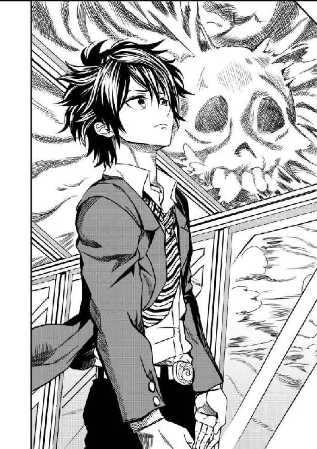
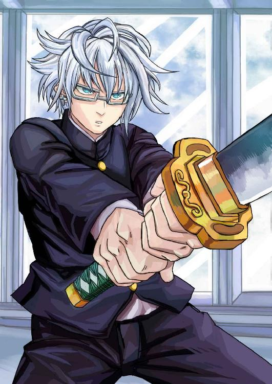
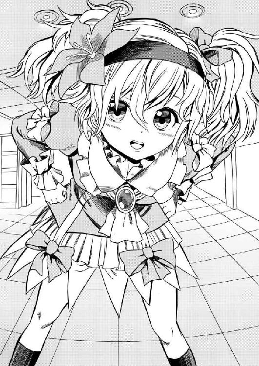
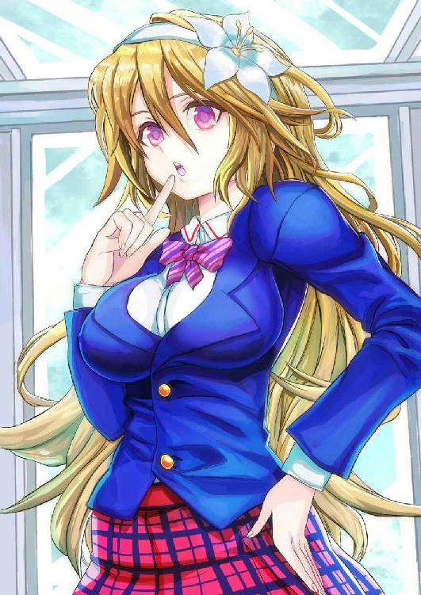
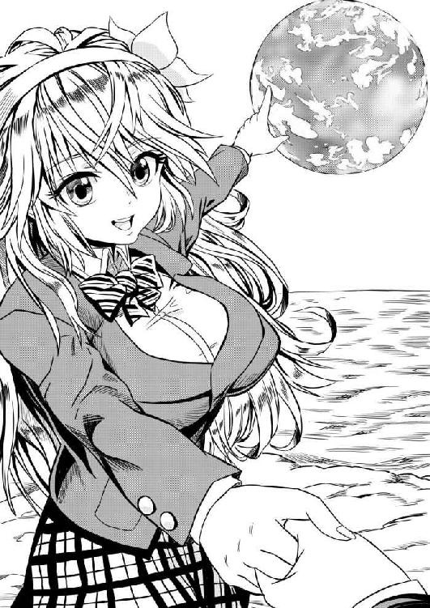
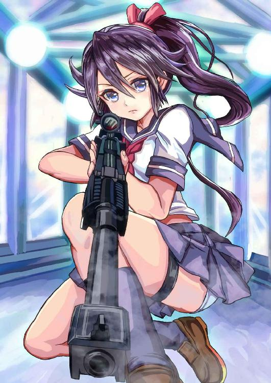

| 神様の成り損ね【Amazon限定】 | |
| 因幡雄介 | |
| syousetuseisakusyo (2018) | |
神様の成り損ね
因幡雄介 著
【ネットに接続されます】
＊本作品はフィクションであり実在の人物・団体等とは関係ありません。
＊本作品の著作権は作者にあり、引用を超える無断転載は著作権法の違反となります。
＊本作品の全部または一部を無断で複製、転載、配信、送信、ホームページに転載することはできません。
＊本作品を示すイメージ画像は、予告なく変更される場合があります。
＊本作品は縦書きでレイアウトされています。
＊本作品はリーディングシステムにより表示に差が認められることがあります。
＊本作品のクレジットなしカラーイラスト、挿絵は、ダブルタップ、あるいはピンチして広げると、拡大して鑑賞することができます。
＊本作品の表紙となるクレジットありカラーイラストは、解像度を低くして制作しています。
シユウ
優柔不断な性格だが、何か起こると突っ走ってしまう少年。
マリに一目惚れしており、行動基準は彼女に合わせている。
マリ
正義感が強く、どんな危険な場所でもズケズケと踏み込んでしまう少女。
容姿が美しく、胸が大きいため異性の目を引くが、おっとりとしすぎて鈍い。
ヤグラ
クールな見た目で物知り、下ネタをさらっと言う少年。
どんな物も斬れる、オルハリコンの使い手。
ミヤビ（表紙のキャラクター）
明るく勝ち気で、シユウをイジるのが大好きな少女。
どんな武器にも変形できる、ブリューナクの使い手。
ツグミ
小柄で、わがままな性格だが、甘えん坊で、シユウにべったりなついている少女。
学生服を着ておらず、姉がいるようだが名前を忘れてしまっている。
トバリ
前髪で片目を隠している、陰気っぽい少年。
下の階から最上階まで上がってきた。
メイカ
決めぜりふはガチムチにこだわる、上から物をしゃべる少女。
ミヤビ、ランと同い年なのに、なぜかメイカ先輩と呼ばれている。
ラン
「ッス」が口癖で、軽いノリで付き合ってくる少女。
見た目は軽薄そうだが、意外と人に気を配る性格。
――神は人間を、その本質が天使と獣類との中間に存在するものとして創られたるものなり。
アヴグスティヌス「神の国」より
暗闇のなか、シホは銃をぶっ放し続けた。
セーラー服を着た仲間たちが、アサルトライフルを乱射する。光がパチパチはじけていた。火薬の臭いが鼻をつく。
右手はグリップ、左手はハンドガードを持ち、フルオート射撃を繰り返す。撃つたびに弾とともに、光が発せられていた。スカートから、はしたなく太ももが出ている。気にしているよゆうはない。
敵がどこにいるのかわからない。照明をつけたら、位置がバレて襲われてしまう。人であれば同条件で戦えるのだけど、相手は夜目が鋭くようしゃない。
――くそぉ！ くそぉ！ くそぉ！ くそぉぉぉ！
心の中で叫ぶ。
周りで仲間の悲鳴が聞こえ、銃声が減っていく。恐怖がふくらんでくる。黒い壁におおわれているためか、広いと思っていた部屋が狭く感じる。
獣の雄たけびが鼓膜をつぶす。
――なんなんだよ！ あの化け物たちは！ 今まで戦ってきたやつらと、ぜんぜんレベルが違うじゃないよっ！
銃の弾が敵に当たっているかどうかなんてわからない。恐怖心が先立って引き金を押さえているだけだ。腰だめ撃ちなので精密さはなく、弾は乱れている。銃弾を数えることさえ忘れ、ただ撃つ。
――うわっ？
背中に何かが当たった。あわてて銃を向ける。動かない。
やってはいけないとわかっているけど、銃につけたライトを点灯してしまう。制服姿の少女が照らされた。ロングの黒髪や、ネクタイのついたセーラー服には見覚えがある。
――ミユキ......！
声をかけようとして、言葉がつまった。
ミユキの胸に、赤い液体が染みついている。腕や足が鮮血に染まっていた。
制服の穴から血が噴き出した。糸の切れたマリオネットのように、ミユキは固い床に倒れる。目を見開いて、死体を見下ろした。仲間を殺したのは怪物ではなかった。穴から推測するに銃弾。
私が殺したかもしれないという絶望感から、銃を下ろしかけたとき、何かが光った。
――ひっ？
鋭い牙をむき出しニイィと笑った。歯の隙間から、色の違う仲間たちの髪の毛が唾液と一緒にたれている。愚行に気づき、あわててライトを消すと弾を撃った。手応えはない。
――くそぉ！ くそぉ！ くそぉっ！
引き金をなんども押すけど、弾が出なくなった。
装填できる予備の弾薬はない。意味することは簡単だ。
終了。終わり。死。
肩に、ぬめりとした液体が落ちてきた。
「☆％＃！ ＆＋＊っ！」
喉をはげしく鳴らして悲鳴を上げる。
どこかで、ヒツジの鳴き声がした。
ぼくは見知らぬ天井をながめていた。
うつぶせに倒れていたため、頬に冷たい床の感触がした。起き上がろうと、両手に力を込めた。くっついていた、乾いた液体がはがれる。腕の服でぬぐい、両足に力を入れて立ち上がった。
周りは薄暗かった。明かりはあるけど、照度は低い。どこかの部屋のようだけど、大きな窓以外何もなかった。
透明なガラスの外から、光が入ってくる。白い霧のせいか、遠くの景色は何も見えない。何かが出てきそうで怖くなり目をそらす。
壁に目をやると、
『下におりるな』
赤い文字で書かれていた。
あわてて書いたのか、汚い形になっていたけどなんとか読める。ぼうぜんとながめていた。
「これは？」
手を壁にふれた。
腐った血の臭いがする。文字は乾いてしまっていて、こすっても消えそうにない。体をまさぐってみるが、けがはしていないようだ。服装はブレザーに白シャツ、ネクタイをしていた。
指が何かに当たった。ポケットの中に何かある。手を突っ込んでみると、四角のものが出てきた。
表面には生徒手帳と書かれてある。めくった。一ページ目に、写真と氏名、性別と年齢が書かれてあった。氏名の欄にはシユウと印字されている。
「ぼくの名前......」
性別は男。年齢は十六歳。写真は上半身姿で、学生服を着た、無表情な生徒が写っている。黒髪、黒目。眉が笑うと、優しげな弓形になる。
情報を得てわかった。記憶がない。
どうしてここで倒れていたのか。ぼくは誰なのか。壁の文字の意味はなんなのか。
まったくわからない。
「きゃあああああああっ！」
女の悲鳴がした。停滞していた思考が働き始める。
「なんだ？」
生徒手帳をポケットにしまい、声のあるじを探した。
ドアが開いていた。さびた金属音を響かせ、女子生徒が腰を抜かしている。視線は部屋の奥に向いていた。
早足で少女の元に行き、
「どうし......た？」
異様な臭いが鼻をついた。よどんだ空気が呼吸をつまらせる。少女の視線の先を見ると、思わず悲鳴を上げそうになった。
異形の者の死体がある。紫の血が壁に飛び散り、死臭のする乾いた液体が、排水口に流れた跡を見せる。上半身は何かの上に置かれ、ちぎれた下半身はイスのそばに倒れていた。どす黒い臓物が、コップを倒してこぼれた水のように、ビチャッと飛び散っている。
「うっ！」
数秒で限界がきた。吐き気がして、視線を死体から外すと、口を手で押さえた。胃液が喉まではいあがってくる。
「お願い、助けて」
女子生徒が抱きついてきた。手をぼくの胸にやり顔をつける。
「はっ」
少女の表情を見たとき、電気が全身を走った。碧い瞳に、金髪のロングヘア、柔らかに曲がった眉。ピンクの唇に豊満な胸。
「うー、ぐぐっ！」
胃液を内部に戻す。汚物をかけるわけにはいかない。
「えぐっ、ひっく、ひっく」
少女は泣いていた。滴が金属の床に落ちる。
おえつを聞くのがつらくなり、背中に手を回し抱きしめ、
「大丈夫。ぼくが君を守るから！」
声を高めて言う。
少女はぬれた瞳で見上げると、小さな口が動き、
「本当ですか？」
落ち着いていて、静かで、かわいらしい声。男としての本能が立ち上がる。
「本当さ。約束する」
死体のことですら頭から抜けていた。この子を守りたい。それだけを考えていた。
「あの、こんなときに言うのもなんですけど......」
少女の頬が赤くなる。言おうか、言うまいか、表情から迷いがわかる。期待してしまい、喉を鳴らしてしまった。
「シャワー、浴びたいです」
「へっ？」
期待は外れたけど、死体のある部屋の扉を閉め、となりとなるこの部屋を探ってみた。
シャワールームは死体のある部屋の反対側にあった。蛇口をひねってみると、水が出てくる。お湯も出るようになっていた。浴槽が置かれ、水あかがこびりついていたけど気にならない程度だ。
少女は名前をマリと名乗った。ポケットにあった生徒手帳から情報を得たようだ。彼女も記憶がない。
マリの体格はきゃしゃで、胸は目を引くぐらい大きい。頭にはカチューシャをつけ、一輪の白い花が添えられている。学生服で、ブレザーに、胸元にはピンクのリボンがあった。ミニスカートはチェック柄だった。黒いタイツをはいている。
敵がいないことを確認したあと、シャワールームから出て、マリが入れ替わりに入っていく。申し訳なさそうな表情をしていたけど、気にしてないよと手を振った。少し笑った彼女はかわいかった。
シャワーが流れている。マリが体を洗い始めたようだ。異形な者の血がついた制服を洗っているのか、洗濯機が回っている。乾燥機付きだ。
「よしっ！」
両手で頬をパンッとたたくと、死体のある部屋に向かった。調査する必要があると思ったからだ。容疑者はその場にいたマリだけど、どう見ても屈強なタイプじゃない。人の体を分断できるとは思えない。何よりも信じたくない。
「うっ！」
死体は何も変わってなく、上半身と下半身が分かれている。
鼻を指でつまみ死体を調べた。死臭が入ってくる。我慢するしかない。違和感を解消したい。
――すごい力で、引きちぎられたような死体だ。
腹直筋がちぎれ、脊柱とあばら骨が丸見えだ。何かの内蔵が、上半身からぶらぶらしている。直視できなかった。違和感はそれではなかった。
――これは、なんなんだ？
異形な者と判断した理由は頭部にあった。人間じゃない。
小さな黒い瞳が二つ、その上に三角形の角がある。アゴは膨張していて、前に突き出ていた。長い紫の舌がダラリとたれ、湾曲した牙が口からのぞく。
ワニかトカゲを連想させた。体は人間と同じで、二本足で歩いていたようだ。靴まではいている。
上半身が置かれている所は何かの装置だ。計器の表面ガラスに、血が跡を残している。押しボタンスイッチや切り替えスイッチ、キーボードまである。肉のない皮膚がツマミにからまってぶらぶらしていた。
精巧なマスクをかぶった人間だと思っていた。だけど作り物じゃなさそうだ。指で頬を突いてみると、目玉がドロリと流れ出す。
「ううっ！ もうだめだ！」
限界がきて部屋から飛び出した。死体が起き上がって襲ってこないように、扉をきっちり閉める。安心したのか、深呼吸ができた。
呼吸がうまくいくと、状況を考えられるようになる。何が起こったのか過去の記憶を探ってみた。
――何も思い出せない。
生まれたての赤ん坊のように、何も記憶から出てこない。何かが過去を思い出させないように、押さえつけているような感覚がする。
気分を変えようと、窓から外をながめることにした。目を丸くする。
「何も見えない」
外は全面、白い霧でおおわれていた。建物を何かから隠しているようだった。外の様子がわからないし、建築物がどんな形をしているのかも不明。
「くそっ、頭が混乱してきた」
手のひらを窓に置いた。非常に分厚いことがわかる。ちょっとした振動など、すぐに吸収する。ヒヤリとした感触がし、気味が悪くなり手を離した。
「シユウさん」
声をかけられビクリと震えた。マリだ。
飛び上がりそうになった。マリは白いバスローブ姿だった。制服が入った乾燥機は仕事を完了していないらしい。サイズがきついのか、胸の谷間がくっきり見え、透明な滴を落としていた。
「あなたもシャワーを浴びてきなさいな。すっきりしますわよ」
お嬢さまっぽい言葉遣いをしながら、マリは恥ずかしそうにモジモジしている。
湿っている金髪が月のように美しい。にらまれるまで熟視してしまった。
そそくさとシャワールームに入りシャワーを浴びた。乾燥機がマリの制服をたたきつけ乾かしている。変な気を起こさないようにするのは大変だ。
赤い液体がお湯に溶け、排水口に流れていたので体を調べてみる。傷は何もない。気にするのはやめ、顔からシャワーを浴びた。あたたかいお湯が、興奮した気持ちを静めてくれる。
――どうしてこんなに記憶があいまいなんだ？ ここはいったい？ あの異形な者の死体は？
思考がまともに働き出したがループしている。
いったん考えるのをやめにして、シャワーのお湯を止めた。浴室から出ると、マリの制服を乾かしていた乾燥機が停止している。洗濯機の上には、バスタオルがたたんであった。マリが用意してくれたようだ。
――お嫁さんにするのなら、あんな子だよな。
バスタオルを手に取り、体をふきながら将来の生活まで妄想していた。
「きゃああ！」
悲鳴が聞こえた。マリだ。部屋から飛び出していた。
「マリ！」
外を見渡せるぐらいの大きな窓がある部屋に再び戻ると、学生服を着た男がいた。
マリは窓を背にして尻もちをついている。ミニスカートから黒く、細い太ももが見えた。
「ちょちょっと待ってくれ！ ぼくはただ、同じ人間がいてうれしかったというか、誤解なんだ！ 悪意はない！」
細身の男は必死で言い訳を述べている。黒髪が片目を隠すほど長く、陰気な雰囲気を持っていた。背は小さい。ズボンの裾がぬれて透明なシミになっている。
「君は誰だ？」
「ぼくの名前はトバリ。このバベルの最上階から、すぐ下の階にいた」
トバリと名乗った男は、大きく手を動かして誤解をとこうとしていた。
――バベル？
単語が気になった。
「あの、シユウさん」
「本当に何もされてないんだな？」
そんなことよりマリだ。トバリが何かしようものなら、命をかけてでも守るつもりだった。
マリは顔を両手でおおい、
「私は何もされていません。あのっ、服を着てください」
「あっ」
裸のまま出てきたことに気づく。顔の熱が上がった。
「すっすぐに着てくるからな！ そこにいろよ！」
トバリにくぎを刺すと、シャワールームに戻った。
急いで制服を着て部屋に戻る。マリに見られても変じゃないように、ネクタイや髪型のチェックはした。完璧だ。
マリは襲われそうになったトバリと、仲良くなったのか雑談している。少し嫉妬した。
トバリからパンと、ペットボトルに入った水をもらう。毒が入っていないか確認するために一口飲んだけど、水は冷たくておいしかった。食欲がわき上がり一気に食べてしまった。
おなかが満たされると、よゆうが生まれたので、おたがい自己紹介し合う。トバリはポケットにあった生徒手帳から名前を知ったようだ。記憶が飛んでいた。
「ぼくの話を聞いてくれるかい？」
トバリが一つせきをする。
うなずいた。三人とも床に座っていた。
「この階のすぐ下で、ぼくは倒れていた。起き上がったら、記憶がなくなっていたんだ。君たちもそうかい？」
トバリは答えを求めてくる。
「ああ。ぼくの記憶もなくなっている」
「私もです」
マリはうなずいた。
トバリはぼくたちを見回し、
「ぼくは必死で記憶を探ってみて思い出した。ここは超高層巨大建築物バベルだ。ぼくたちは記憶喪失にされたのではなく、なんらかの事故で記憶を一時的に失ったらしいんだ」
「なぜそんなことがわかる？」
話が急にとっぴなものになったので、興奮を抑えるために水を飲んだ。
「だって違和感がないじゃないか。知らない場所なのに、なぜか気持ちは落ち着いている。ぼくたちはここを知ってるんだよ。このバベルを」
逆にトバリが興奮し始めた。立ち上がり訴える。
「あっああ。そういえば、ここは見たことがある」
グルリと周りを見る。
光景に見覚えがあった。建築物がバベルだと聞いても、特別感情がわかない。記憶がなくなる前から、ここにいるような気がしている。バベルという名前をおぼえておく。
「どうして記憶を失ったのかはわからない。じっとしていればそのうち戻るはずだ。バベルだって思い出したんだから」
拳を振り上げて力説するトバリ。
「と、いうことは。私たちはここで静かにしているだけで、記憶はよみがえるということでしょうか？」
マリが懐疑的な表情をする。
同意見だ。建物内をうろうろしていれば思い出すのではないかと、楽観的な考えが浮かぶ。わざわざじっとしている意味がわからない。
「そうさ！ 部屋に鍵をかけてじっとしていよう！」
マリの表情を見ていないトバリは提案した。
――鍵？
言葉がひっかかった。トバリは腕に持てるだけ、水や食料を持ってきていた。どうして手間のかかることをしたんだろう？
「なあ。鍵をかける必要はあるのか？ 扉はあけっぱなしでいいじゃないか」
試しに言ってみた。意地悪じゃない。
トバリの表情がみるみる青くなっていき、
「絶対にだめだ！ 鍵はかけるべきだ！」
「だからどうして？」
「君はまだわからないのか？ 悲鳴が聞こえたんだぞ！」
血相を変えて怒鳴ってきた。
――悲鳴？
目を白黒させる。マリも目をパチクリさせていた。
「どういうことだ？」
「ぼくが下でいろいろと思い出していたら、となりの部屋から悲鳴が聞こえたんだ。誰かが大声を出したとか、雄たけびを上げたとかじゃない。あれは、助けを求める断末魔だった。恐ろしくなって、食料を集め、部屋から逃げ出し、階段を上がってここにきた。上に行く階段はなかったから最上階のはずだ」
トバリは胸を腕で抱き震え始めた。
迫真の演技に見えたけど、うそを言っているようには思えない。
「まあ、大変！ 助けを求めているのなら、私たちが行ってあげなきゃ！」
考える間を与えず、マリが立ち上がりとんでもないことを言い出した。あぜんとする。
「さあ！ 助けに行きましょ！」
ぼくを巻き込んでくる。両目が泳いだ。
「ちょっと待ってくれ。ぼくたちはこの格好からして、どう考えても学生だ。凶悪な敵だったら勝てるわけがない」
「武器を持っていけばいいじゃありませんか」
「武器を持ったからって......それに、もしかすると敵は......」
異形の者の死体がある部屋を目でさした。トバリはわからないけど、マリならわかるはずだ。えたいの知れない者がいるかもしれないと。
「とにかく！ ぼくは反対だ！」
「そうだよ！ 行くならひとりで行けよ！」
声を張り上げて反対すると、トバリがのっかってくれた。二対一だ。多数決なら勝ってる。
マリは「むうっ！」と頬をふくらませ、
「いいですわ！ 男なんてみんな意気地なしね！」
スタスタと、トバリが入ってきた扉に向かう。
「なっ？」
あせって立ち上がった。マリの腕をつかむ。
「離して！ 人を助けることの、何が悪いの！」
マリは抵抗してくる。
正論だけど無謀だ。決断しなければ。マリを取るか、安全を取るか。
「わかった！ ぼくも行くよ」
しぼんでしまった声で、マリを取ることを決断した。彼女を失うのが怖くなったからだ。恐怖よりも勝った。
「本当ですの？」
マリの耳が悪いことを期待したけど、しっかりと聞かれていた。覚悟が決まった。
「ぼくはうそをつかない。君と行く」
カッコいい自分を想像して言った。足が震えた。
マリはおかしそうにほほ笑む。
「じゃ、行ってくるよ」
トバリに向かって片手を上げる。
「なっ、ぼくは行かないぞ！ ふたりで行ってくれ！」
トバリは予想どおり、両腕と両足を組んで、床に座り込み頑固拒否だ。
「わかってる。何もなかったら、すぐに帰るから」
一緒にきてくれたほうが心強いけど、態度を見てあきらめた。
マリとドアに向かう。開けると、薄暗い廊下が待っていた。
「ぼくは絶対に行かないからな！」
ドアを閉める瞬間、トバリの叫びが冷たい空気とともに流れてきた。
部屋を出ると、階段はすぐに見つかった。
踏面は金属でできており、折り返しになっているようだ。トバリの言うとおり、上に向かう階段はないので、このフロアが最上階であることがわかる。ほかに階段はなく、廊下にあるのは出てきたドアぐらいだった。
マリと踊り場まで下りると、扉を見つけた。照明は壁に設置されてあるけど、薄暗いので黒い扉に見える。ゴクリと唾を飲み込んだ。
扉は開いたままだった。階段の踏面についた汚れは、トバリがはいていた靴底だとわかる。急いで上にあがったのか、一段飛ばしになっていた。
「あそこからきたんだろうな」
「............」
マリは何も答えない。怒っているのかと思ったけど、宙に浮いていた手をにぎってきた。心臓がトクンと高鳴る。
「あのっ、ありがとうございます。一緒にきてくれて」
「えっ？」
「強気なことを言いましたけど、本当は怖くて......。ごめんなさい」
マリの頬が恥ずかしそうに赤くなっていた。ひとりで行く勇気などなかったことがわかる。表情に見とれてしまう。
「かわいい」
「えっ？」
「あっ、いっいやっ、なんでもないよ！」
片手をはげしく振った。
「変な人」
マリはクスリと上品に笑う。
鼻先を爪でかくと、
「ぼくはマリのこと尊敬してるよ」
「えっ？ どうしてですか？」
「悲鳴が聞こえたからって、こんな変な状況で助けになんていけないよ。勇気があるんだな」
本音だ。一目で彼女を好きになったけど、今のところ嫌いになる要素は何もない。マリは泣きわめきもしないし、動揺もせず立ち上がって進んでいく。性格が良いのだ。
「あら？ シユウさんだって勇気がありますよ。私のわがままに付き合ってくださるのですから」
「そうかな？」
「そうです。尊敬します」
「たはは」照れる。
勇気は君からもらった。いつかそう言える日が来ることを祈る。
扉の前に到着していた。開いた扉の中をのぞくと、壁に照明があるものの、薄暗くて奥が見えない。
「入るぞ」
「はい」
マリと一緒に扉を通りすぎ、一歩、中に足を踏み入れた。
「ん？」つぶやいてしまった。
音が変だ。液体が壁に跳ねる。
「水が床にたまってますわね？」
マリは視線を下にやっていた。
水が床を流れており、側溝に落ちている。トバリのズボンの裾はぬれていて、汚れた足跡が階段にあった。水の廊下を通ったのならそうなる。
トバリはどうしてこの状況を何も言わなかったんだ？
「先に進も......」
言葉を切った。黒い影があらわれたからだ。
「マリ！」
「えっ？ きゃっ！」
抱き寄せた。手に柔らかい感触がする。味わっているよゆうはない。彼女を守ることが最優先だ！
「ばあ！」
トバリがあらわれた。両手を上げ赤い舌を出している。
場がしらけた。恥ずかしくなってきたのか、トバリは素顔に戻した。
「何してるんだ？」細い目で見つめてやる。
「『何してるんだ？』じゃないよ！ どうしてぼくをあんな部屋でひとりにさせるんだ！」
「えっ？ 何かあったのか？」
「あるじゃないか！ 変な死体が！」
トバリに異形の死体のことを言っていなかった。
苦笑いし、
「いや、ごめん。言うの忘れてた」
「武器も持たないで出ていくなんて！ はい！」トバリは包丁を二つ差し出し、
「こんなものしかなかったけど」
「おぉ。ありがとう。丸腰だと危険だな」
少しだけ感心した。おどかした件は許そう。
「あのっ、あのっ、シユウさん、あのっ」
言葉をつまらせるマリ。ぼくの左手は豊満な胸をわしづかみにしていた。指に感触が戻り、マシュマロのような柔らかさがつたわってきた。
マリは涙目になった瞳を下に向け、真っ赤な顔をしている。助けてくれた恩人に、失礼なことはできないと我慢しているのか。抵抗はされなかった。
全身の熱量が噴火し、
「うわああああっ！ ごめんっ！ ぐわっ！」
叫ぶ、謝る、壁に後頭部を打つ。いちどに三粒味わった。
マリは黙ったまま両胸を両手で隠している。
「いってぇ～」
「はぁ。君は何をしてるんだ？ 女性に対して失礼だぞ？」
トバリはあきれて両手を腰にやり、ため息をついた。
――女の子ひとりで行けだの言ってたくせに。
驚かせてきたときに、一発殴っておけばよかったと後悔した。
「とにかく、中に入ろう」
後頭部を手でさすりながら、ごまかすためにさっと中に入った。マリ、トバリは後ろからついてくる。
中には扉がいくつかあり、水が床をはいずりまわる。深さは靴底程度なので、靴の中には入ってこない。
マリは頭を切り替えたのか、扉をぺたぺたさわっていた。開け方がわからない。ほかの扉もそうだった。
手かけを引いてみるけど開かない。ニュルっとした液体が指にまとわりついた。
――この液体は？
手をながめていると、マリの胸の感触を思い出してしまう。液体は白い線を引き地面にたれた。
――Ｅカップかな。いや、Ｆか。大きかったな。
マリの胸のサイズを分析してしまう。
「シユウさん」
「ひゃい！」
急に名前を呼ばれたので変な声が出た。液体の調査を忘れ服でふいてしまう。
「シユウさん？」
「いやいやいや！ 胸なんて見てないから！」
「えっ？ 胸、ですの？」
「ああっ、違うのか？ なんでもないよ！ あははっ！」
両手を左右に振る。
マリは首をかしげた。
「どうしたの？」
「えっ？ ええ。あそこに変なモノが......」
マリが指さす方向に、黒い空間があった。扉が開いている。部屋の中に水色のものがあった。
「水か？」
近づいて見てみる。
ガラスの壁があるかのように、水を天井に押し上げていた。水の中に、ボールのような球体が沈んでいる。真ん中にあるので手をのばしてみた。水槽に入っている魚をつかむ感覚だ。
「あっ、待ってください」マリが片手を前にのばし、
「嫌な予感がします。それに近づかないほうが......」
不安気な表情になっている。
「ただの水じゃないか。何を怖がってるんだ？」
トバリが水の中にある球体に手をのばす。臆病なくせに意外とむちゃをする。
「待てよ。ただの水なら、どうしてドアから流れてこないんだ？」
「流れない水もいるじゃないか」
トバリが変なことを言い始めた。
「はっ？ 流れない水？」
「そうさ。バベルで実験用に生かされているんだ、あれ？ この記憶はなんだ？ ぼくはここの倉庫の番をしていて、水色の何かを飼っていたような......」
トバリは言葉を検証する前に、水に手をふれてしまった。ゼリーのようにぷるんと揺れると、何かが飛び出してきた。細い触手だ。
ひものような触手は、何本もトバリにからみつくと水の奥へ引き込む。
「うわぁ！ がぼっ！」
液体がトバリの鼻や口に浸入している。出ようともがいているけど、触手が許さない。粘っこい液体が服にまとわりついている。
「助けて！ ごぼっ！」
トバリの悲鳴を聞いて、思考が働き始める。
水から出た手をにぎり、おもいっきりひっぱる。ぬるぬるしていて、力がなかなか入らない。両手で必死に引く。
「手伝います！」
マリはぼくの体をつかむと、最大限の力でひっぱってくれる。引き込む力のほうがはるかに強い。
――すごい力だ！ 歯が立たないぞ！
あせったけど、これ以上いい手を思いつかない！
「ジユウ......マジィ......」
トバリが水の中で苦しそうにもがく。
早くしないと溺れ死んでしまう！
「しっかりしろ！ マリ！ もっと力を込めて！」
「はい！ トバリさん！ がんばって！」
「せぇのっ！」
歯をくいしばって、足と腰に力を込めおもいっきりひっぱる。
トバリを水の中から救いだせたのか、手の重りが軽くなった。マリと一緒に水の床に倒れる。お尻が冷たい。
「やったぞ！ 無事か......」
戦慄が走り倒れそうになった。
手に持っていたのはトバリの腕だった。腕のみだ。体はない。ちぎれた肉と骨、赤い液体がたれているだけ。
「ああっ......ああああああ......」
水の中でゆがんだ口をぱっくりと開け、トバリは溶けていた。消化されている。肉がなくなり骸骨となった。恨めしそうに見つめている。骨が崩れて溶けていく。
水たまりの真ん中にあった球体がグルリと回転した。大きな瞳だった。瞳孔が異常に赤い。キョロキョロと何かを探したあと、球体が曲がった。ニヤリと笑ったように見えた。
「ひっ......」マリが小さく悲鳴を上げる。
考えるより先に、マリの手を強くにぎり階段に向かった。全力で走る。床の水が大きくうなった。
「シユウさん！」
「逃げよう！」
走りながら、振り向き敵の動向をうかがう。水のような生き物は、餌を追いかけるためゆっくりと部屋から出ていた。スライムという魔物の名前が頭に浮かぶ。
――動きは遅い。逃げきれる！
よゆうが生まれた。頭の中で次の行動を決められる。
ここから出て階段を駆け上がる。最上階のあの部屋に着いたら、出入り口のドアを閉めればいい。廊下は曲がり角がなくまっすぐだ。迷うことはない。
パシャンと、音がするまで逃げることに集中していた。後ろを向いてしまう。目を見開き、よゆうのメーターが黒い異物で埋め尽くされる。
スライムは体を変化させ、床を満たしていた水と同化し、噴水を上げながら恐ろしい速さで向かってきていた。
「うわああああああっ！」
パニックを起こし、口がかってに叫んでいた。
巨人がバシャバシャと海を走っているような、大きな足音が背中を圧迫する。
マリの顔が恐怖でひきつっていた。
夢中で走った。音がどんどん近くなってくる。飲まれれば、骨まで溶かされる。背中に水しぶきがかかり始めた。
「もうすぐだ！」
開いた扉が見えた。閉めている暇はない。全力で走って、あの階段を上ってやる。
床が水浸しなのは、スライムを移動させるために違いない。水がなくなれば、動きが止まるかもしれない。グルグルと思考を高速回転させる。
「うわっ？」足が何かに当たった。
バランスを崩し、マリと一緒に転ぶ。すぐそばに階段があるのに。
スライムが潮を噴き上げ、赤い目が餌にさだまる。
もうだめだと覚悟を決めたとき、セーラー服の少女が目の前に立ちはだかった。
「お疲れさん。言葉が通じる？」
少女は手に持った武器を向ける。操作レバーに携帯ガスボンベ、シリンダーの先にノズル。見たことがある。火炎放射器だ。転ばせたのはこの女だとわかる。
スライムが近づいてくる。セーラー服の少女も一緒に飲み込むつもりだ。
少女はニイッと白い歯を見せ、
「やっぱこっちがいいや。燃えつきろモンスター！」
体をひるがえすと、スライムに火炎を放つ。
「ギィィィ！」
スライムの進行が止まり、悲鳴を上げると、目玉が飛び散った。液体が少女の頬についたけど、平然と上着の袖でぬぐう。粘液のような塊が意志を失い、床の水と一緒に側溝に流れていった。火は水で消火される。
「よっし！ モンスター撃破！」
少女が火炎放射器を肩にのせると、武器が小さくなり、ハンドガンになった。見つめていると、銃口を向けてくる。緊張感が走った。
「あなたたち人間？ って、ながながと話たいんだけどさ。めんどくさいからいいや。死ね」
引き金の指が動く。
「やめろっ！ ぼくたちは人間だ！ モンスターじゃない！」
両手を広げると、とっさにマリの前に立つ。
「えっ？ なんだ。言葉をしゃべれるの？ よかった、殺さなくて」少女は目をパチパチさせると、拳銃を下ろして、
「ごめんね。人型のモンスターもいてさ。だいたいそいつら、言葉が通じないんだよね。私と同じ言語をしゃべれるってことは、同じ人間だよね？」
指で頬をかいている。
「なんか気絶しててさ。起きたのはいいけど、記憶がなくって。銃を向けてごめんね」
少女はケラケラ楽しそうに笑った。
セーラー服の女子生徒は、髪と瞳は黒く、髪型はポニーテール。ネクタイをしめ、スカート、襟、袖は紺色。つり目で、眉は気の強そうなななめ。明るくよく笑う。おしとやかなマリとは対照的だった。
「私はミヤビ。あなたたちは？」
ミヤビは自己紹介すると名前を聞いてきた。
「あっああ。ぼくはシユウ」
「私はマリです。どうぞお見知り置きを」
マリはスカートを広げて、丁寧にあいさつしていた。
ミヤビはニヤニヤしている。視線がぼくに向いていて、変な気持ちになった。
「その名前さ、生徒手帳でわかったの？」
ミヤビはポケットから手帳を出しマリに見せる。
「はい」マリも生徒手帳を出した。
ミヤビが中身を開くと、制服姿の上半身の写真と、性別、生年月日が印字されていた。マリと同じ年に生まれているので、同年齢の十六歳のようだ。
ミヤビはマリから生徒手帳を取ると、中身をジロジロ見て、
「ふぅん。お嬢さま系か......」
「えっ？」
「あっ、ううん。なんでもない。マリちゃんて呼んでいい？ 同い年みたいだし」
「ええ。かまいませんよ」マリは気を許したようだ。
ミヤビは生徒手帳を返すと、人なつっこい笑顔を見せる。
「あの、それは......」
ミヤビが持つ拳銃を指さした。火炎放射器から拳銃に変形したようだけど、気のせいじゃない。普通の武器とは違う。
ミヤビは拳銃をかかげ、
「これ？ 『ブリューナク』。どんな銃にも変形できるの。私だけが使えるみたい」
手のひらサイズの、四角の物体にしてみせる。
魔法みたいな武器を扱える女子生徒に感心した。ブリューナクはサイコロみたいな形だった。透明な水色で、中で星のような輝きがある。不思議なアイテムだ。
「マリちゃん。シユウ君とはどんな関係？ 恋人？」
ミヤビはなぜか、ぼくたちの関係を聞いてきた。
――いきなり何を言い出すのやら......。
マリの反応は、「いいえ。さっき知り合った人です」と答えは素っ気なかった。ガクリと心の中でうなだれる。
「そっかそっか。じゃ、まっ、上に行こうか？」
ミヤビはうれしそうに、人さし指を上に向けた。
ぼくたちがそこからきたことを知らないのか。
暗い表情になる。
「どうしたの？」
「ぼくたちは上からきたんだ」
「えっ？ ほんと？ 建物からの脱出方法とかあった？」
ミヤビの表情がぱっと明るくなる。ここまで逃げてきたのだろうか。答えは不正解だ。
「ぼくたちは上の部屋で倒れていた。人が住める居住空間があるだけで、屋上に行く階段はない。あるのは、異形の者の死体だけだ」
視線を床に落とした。
ミヤビはみるみる落胆の表情に変わり、
「えー。そんなぁ。せっかく死にかけながら、階段を上がってきたのにぃ」
感情が体に出やすいのか、へなへなと座り込んだ。
「おーい！ 何かあったか！」
別の女子の声が下の階から聞こえてきた。
上がってきたのは、ミヤビと同じセーラー服の少女だった。人数はふたり。
彼女たちはぼくを見つけて警戒したけど、ミヤビが事情を話してくれたので、アサルトライフルとマシンガンを下ろしてくれた。凶悪な武器を持っている。抵抗すると何をされるのかわからないので、様子をうかがいつつ用心する。
マリは新しい人間に会えて喜んでいるのか、ほほ笑んでいた。
「なるほど、上に行っても無意味か」
「マジッスか？ あ～めんどくさいなぁ」
ふたりの少女はミヤビの言うことを素直に聞く。長い付き合いなのか？
背の高い少女が手を差し出し、
「メイカだ。よろしくな。――私はガチムチだ」
最後の言葉がよくわからないけど握手する。
メイカの体格はきゃしゃで、背筋はシャキッとしている。アサルトライフルの持ち方からして、手慣れているように見える。黒いセミロングの髪を、手でかき上げる姿はりりしい。
「ランッス。よろしくぅ～。てゆーか、メイカ先輩。最後の情報なんで言ったんスか？」
ピンクの玉がついたヘアゴムで、髪をサイドテールにした、頬にそばかすのある少女が名乗った。
ランの服装はメイカやミヤビと同じ学生服、瞳と髪の色は小麦のように茶色。わざとボタンを開けて崩した格好は、逆に親しみやすさをおぼえる。手を差し出されたので握手すると、白い歯を見せて両手でにぎってきた。武器はマシンガンを肩にかけている。軽機関銃だ。
――......あっ。
ぼくは銃類にやたらくわしい。見ればぱっと頭の中に出てきた。
「よっよろしく。シユウです」
心の中の動揺を悟られないように取りつくろう。
「マリです。よろしくお願いします」
マリは順番に握手していき、律義に頭を下げていた。
「話を聞きたい。上には異形の者の死体があるんだな？」
メイカがミヤビから聞いた情報を確認する。
「ああ」
「何が潜んでいるのか、わからないわけか......」
腕を組み渋い顔になるメイカ。
のんびりシャワーを浴びているのが、いかに危険かがわかった。敵が潜んでいたかもしれないのだ。トバリが、部屋から飛び出した気持ちがわかる。
――ぼくとマリの気配しかなかった気がするけど......。
邪悪な気配はなかった。断言はできない。
ミヤビが瞳をのぞき込み、
「どうしたの？」
「えっ、あっ、なんでもない」
両手と首を左右に振ってごまかす。ポニーテールを結んだピンクのリボンがかわいい。銃を持っていなかったら、普通の女子なのだけど。
「下に戻ろう。そこでお前たちの話を聞く」
「おいしいコーヒーがあるッス。ゆっくりできますよ」
メイカとランはそう言うと、階段を下りていく。怪しいところは特になかったので、彼女たちについていくと決心する。ミヤビがなぜかとなりにきた。
「マリ？」
マリがやってこない。踊り場から見上げると、開いた扉の奥をじっとながめている。スライムの死骸しかないはずだ。
「どうした？」
「ええ。かわいそうだと思って......」
「トバリのことはしかたないと思う」
「あっ、いいえ。トバリさんもですけど、スライムさんも......」
「えっ？」
「あっ、ううん。私、変ですわね」マリは片手を上げて、コツンと拳を頭にやった。
優しい性格だ。思い出した。彼女に言いたいことがあったんだ。
だからぼくはあの部屋にいた。記憶がないけど。
「君に言いたいことがあるんだ」
「えっ？ なんですか？」
「ここから出られたら言うよ。早く行こう」
「はい！」マリは愛嬌のある笑みをする。
どうしてこんなに彼女のことが気になるのか。ここから出ればわかるかもしれない。壁に書いてあった、『下におりるな』という言葉がチラついた。
「早くぅ。まだぁ？」ミヤビがせかしてくる。
「あっ、ごめんなさい」
マリは階段を一歩下りる。
「マリちゃんさぁ。気をつけなよ」
「はい？ 何がですの？」
「薄いピンクの下着、タイツから丸見え。シユウ君も教えてやればいいのに」
いたずらっぽく笑うミヤビ。
「なっ！」声がうわずった。
「えっ？ きゃうっ！」
マリはあわてて、チェック柄のスカートを両手で押さえた。
「ちっ違う！ ぼくが言いたかったことは、そういうことじゃない！」
「わかってるわかってる。水にぬれて透けてたもんね」
「そうじゃない！」
ミヤビはわざと言葉を改ざんして言う。
マリなら信じてくれると思ったけど、表情を見て血の気が引いた。神様に誓って、スカートの中なんて見てない。
マリは顔をリンゴのように真っ赤にして、「むぅぅ！」とにらんでくる。頬をふくらませている表情から、痛いほど嫌悪の感情がつたわってきた。
「違う！ マリ！」
「いいんです！ シユウさんが変態だということがよくわかりました！」
スタスタとぼくを無視して、マリは通りすぎていく。頬はまだふくらんでいた。
「そんな、それを言いたいんじゃなくって！」
「ふん！ 知りません！」
必死で言い聞かせようとしたけど、マリは相手にしてくれない。
「ひひひっ」ミヤビの小さな笑い声が聞こえてきた。
先を歩いているメイカとランが、ごそごそと話し合っている。
「ええっ！ ミヤビってああいうのがタイプなんッスか？」
メイカから何かを聞かされ、ランが驚いていた。話の内容を聞きたいけど、マリの誤解をとくのが先だ。
「んっ？」
何か踏んだ。触角の先に目があるナメクジのような生き物が、ベチャッとつぶれていた。おかしいのは口の部分だ。軟体動物に見えるけど、ドリルのようにとがっている。
しまった、という感想だ。罪悪感はない。いちいち小さな羽虫をつぶしてかわいそうだとは思わない。
『侵入......成......功』
――うん？
誰かしゃべらなかったか？ 小さすぎてぜんぜん聞こえなかったけど？
「いてっ！」
ランが唐突にバックの髪を上げて、首の後ろを片手で押さえる。
厳しい顔つきのメイカが振り向き、
「どうした？」
「あっ、いや。さっき肩に、ナメクジみたいなのがいたんッスけど、はらったら、かみついたっていうか」
「気をつけろ。ここには何がいるかわからんからな」
「はいッス」
ランはポリポリ後頭部を手でかく。
――あれっ？
ランの首の後ろがボコッとふくらんだけど引っ込んだ。
気のせいかな？
茶髪がかぶさってしまい、二度と見ることはなかった。
挿絵「シユウ」

シユウはらせん階段を下りていた。
途中で鉄製のらせん階段に変わったのだ。変な建築構造をしている。踏み板は狭く、ひとりずつしか下りられない。
誤解のないように彼女たちの最後尾につく。これでスカートの中をのぞいたと疑われない。最低でもマリにだけは嫌われたくない。
らせん階段が終わると、照明の暗い廊下。一本道のようだ。壁に扉はない。
ミヤビは前に立ち、指をさすと、
「あそこだよ」
廊下の奥に穴だらけの扉があった。なんの部屋だろう。体を押し込んで中に入ると、木製のイスに丸いテーブルが並べてある。ガラスが飛び散っていたけど、彼女たちは気にせず残骸を踏んでいった。
「コーヒーでも飲もうか？」
ミヤビが声をかけてくれた。
「私が入れます。ミヤビちゃんは座って待っていてください」
マリが片手を上げる。
「あっ、そう？ コーヒーはあそこにあるから」
「はい。みなさん、しばらくお待ちくださいね」
マリは楽しそうに厨房へ歩いていく。後ろ姿につい見とれた。
「いいな」ぼそっとつぶやく。
「......あっ！ 私もコーヒー入れたいな。マリちゃん手伝うよ」
ミヤビがマリを追いかけていった。
メイカとランにつられて、席に座り、コーヒーが来るのを待つ。一方的にランがメイカに話していた。メイカは腕を組むと、聞いているのか聞いていないのか、首を上下に動かすだけだった。
黒いコーヒーがきた。マリとミヤビはエプロンをしている。
「お待たせしました」
慣れた手つきで、マリはコーヒーを置いていった。こういう仕事をしていたのかもしれない。黒い液体から湯気が上がり、香ばしい匂いが脳を刺激してくれる。
「ありがとう。かわいいエプロンじゃないか」
メイカがほめる。
縁にはフリル。背中はリボンのように結んである。エプロンを着る前のマリは美しさが大きかったが、今回はかわいさがきわだった。
「ミヤビちゃんがこれ着ようって。ありがとうございます」
マリは照れて頭を下げている。
ぼくの目はくぎ付けだ。コーヒーが視界に入ってこない。
ミヤビが目の前にあらわれたので、「うわっ！」驚く。
「どうよこの格好、かわいいでしょ？」
「うっうん。よく似合ってるよ」
「ほんと？ へへえ」
ミヤビはクルクルと回ってみせた。黒いポニーテールがはしゃぐ。ピンクのリボンが華麗に舞っていた。
「うんうん。すごくかわいいよ......」
意識は本命のほうに向く。マリはエプロンを脱いで、丁寧にたたんでいた。貴重なエプロン姿を脳に焼きつけることができず、テンションが下がった。
「おたがいの情報交換をしようか？」
メイカは机にコーヒーを置いた。唇についた液体を赤い舌でなめる。いやらしさを感じるのはなぜだろう？
変な気持ちになるのを抑えて、
「ミヤビに話たとおりだよ。トバリは残念だったけど......」
暗い影が走る。短い間の付き合いだったけど、悪いやつじゃなかった。
メイカはため息をつき、
「そうか。私たちも似たような状況だな。気づいたら、こんな銃を持って倒れていた。記憶もあいまいで、建物は知っているようだが、何が起こったのかはわからん。名前を知ったのはポケットに入っていた生徒手帳からだ。推測するに、私たちは学生らしい」
「とんだ修学旅行ッスよ」
ドスッと、ランが腕を組んでイスにもたれる。
一つわかったことがある。生徒手帳は必ずポケットに入っているということだ。何者かが仕組んだのかもしれない。
メイカは銃を机に置き、
「この制服は学生服というやつらしいな。私たちは銃の使い方にくわしい。どうしてかはわからないが」
制服の端を手で広げてみせた。
学生というのは、教室の机で勉強するのが仕事だ。銃を持って暴れたりはしない。
「君らはどうなんッスか？」ランが注目してくる。
マリと目を合わせた。
「ぼくは、銃の使い方を知らない」
銃を持っていたとしても、撃てるかどうか自信がない。
「私もです。さわったことはないかと思います」
マリも同じ答えだ。
「そうか。建物には電気やガス、水がきている。空調システムも動いているようだ。恐らく何かが起こって、時間はたっていないと思われる」
「銃を持っているということは、私ら、何かと戦っていたってことッスよ」
「怪物たちである可能性は高い。君たちに出会う前に、すでに十数体に襲われた。なんとか撃退できたがね」
「いや～大変だったッスよ」
メイカとランは呼吸が合う。話がわかりやすい。
――姉妹みたいだな。
なんとなくそう思った。
「あなたたち三人だけで、ここまできたのですか？」マリが手を上げる。
「いや、起きたときに、私たちと同じ制服を着ていたグループが何名かいた。しかし、彼女たちは下に向かった」
「えっ？ 下に？」
どうしてこの三人はわざわざ上に向かっていたのだろう？ 普通なら下に行くはずだ。仲間は多いほうがいいだろうし。
「なぜ上に向かっていたんですか？」気になったので聞いてみる。
「私らは上が好きだからだ」三人仲良くハモった。
「上に行けばなんとかなると思ったんだ。上に行けば」
メイカは腕を組むと両目を閉じ、何かを思い浮かべるかのように首を傾ける。
何か過去にあったのか？
「私は上が好きだったから行ったんッスよ。あの人らには反対されちゃったんで、決裂したってわけ」
ランがケタケタ笑う。
そりゃそうだ。意味がわからない。
「上に行けば、ヘリとかあるかなと思ったの。屋上に行けないんじゃ、しょうがないよね。あ～空飛びたかった」
ミヤビだけがまともな意見だった。
「そっそうなんですか......」
「ご立派な信念ですわね......」
マリと一緒に苦笑いだ。
「上に行ってもしかたないのであれば、下に行くしかないな。のり気にはならないが」
メイカはあきらめたように言う。
マリが立ち上がり、
「そうですわ！ 下に行きましょうよ！ 下には、青い空があるのですわ！」
唐突に妙なことを言い出した。
ミヤビが息を吐き、
「マリちゃんさぁ。青い空が地上にあるわけないじゃん。何言ってんの？」
目を細める。
空といえば上だろう。言いたいことはわかる。
「違います！ 変なことは言ってません！」マリは両手をにぎり胸にやると、顔を真っ赤にし、
「最上階の窓から地上を見ていたら、一瞬霧が晴れて、青い空が見えたんです。シユウさんにつたえようと思ったのですが、トバリさんが突然あらわれたので驚いちゃって......。忘れてました」
涙目でぼくに視線を向ける。読みとれるのは、あなただけは信じて。
よし、ぼくものることにしよう！
「そうだ。下に行こう！ 青い空というのが、絶望的な状況からぼくたちを救ってくれるかもしれない。行ってみないか？」
言葉を考え、メイカたちを説得する。マリの信用も得られるし一石二鳥だ。上に行ったところで何もない。
「うっ、まっまあ。下に行ってやってもいいし」
ミヤビはツンとしながらも、言うことを聞いてくれた。
「そうだな。その手しかないか――ガチムチ的にも」
メイカはまじめな顔をして同意してくれた。ガチムチについては反応してやらない。
「おふたりが行くと言うのなら。てゆーか、メイカ先輩。最後の情報、なんで言うんッスか？ 笑わせたいんッスか？」
ランはすでに笑っている。
どこがおもしろいんだ？ ガチムチってなんなんだ？
三人の説得は成功した。
「じゃ、下に......」
「待ってください」
マリがモジモジしている。
緊張しているのか？
「どうした？」
「おっおトイレに......」
「あっ、ああ」それ以上何も言いようがない。
「便所ならあっち」
ミヤビが奥を指さす。
マリは頭を下げると、さっと向かった。
「あっ、ぼくも行くよ」
我慢していたのを思い出す。マリの後ろをついていく。背中にミヤビの視線を感じたけど、気のせいだろう。
トイレは当然だけど男女に分かれていて、マリとしばしのお別れをする。中は静かで、寒気がした。用をすませ、洗面所で蛇口をひねってみると、水が出る。
手を洗った。気持ちいい。
水の噴出をながめていると、何かの声がした。耳を立てる。マリの声だ。
――女子トイレで何かあったのか？
蛇口をしめる。異形な者の死体が目に浮かぶ。女子トイレに向かった。耳をすましてみる。
「やぁぁ、お願いです。もうやめてください......」マリの甘い声がする。
「だめ。あなたのことを知りたいわ」ミヤビの声が重なり、
「もっと、感じやすい所へ」
妙に色っぽいことを言っている。
「お願い、助けて......」マリが助けを求めている。
まさか、いじめか？
怒りが勇気に変わり、どうどうと女子トイレの中に足を踏み入れた。洗面所で、ミヤビがマリの大きな胸を背中からわしづかみにしている。
うらやま、いやいや違うだろ！
「やめろっ！」叫ぶ。
ミヤビは驚いたのか、ぴょんとマリから遠のき、
「あっ、シユウ、うわっ？」
隙ができ、ミヤビを突き飛ばすと、マリは逃げ、ぼくの背中に回ってきた。
頼ってくれるのはうれしい。男として見せ場を作れる。
ミヤビをにらみ、
「嫌がってるじゃないか！ 女の子同士だからってその、それはよくないと思う！」
変な妄想が浮かんだけど言い直す。ちゃんと言わないと、ぼくの評価が落ちるし、ミヤビが変なことをしでかすかもしれない。
「ちょちょっと待って！ 違う！ マリちゃんの女子力を確かめようとしただけ！ これはシユウのためであって......」
「ぼくの？ マリをいじめることが、どうしてぼくのためになるんだ！」
「いじめてなんかない！ じゃれ合ってたの！ 信じてよっ！」
必死で言い訳をするミヤビ。
いじめとは違うのか？ 目に涙を浮かべているし。いじめっ子が開き直って、反論してこないのもおかしい。ぼくが加害者みたいになっていた。
洗面器のほうを見てみる。胃液の臭いがツンとした。マリの口元を見ると、液体が唇の間から少し漏れている。
――吐いていたのか？
お風呂に入りたいと言ったときも、浴槽はきれいになっていたけど、吐いていたのかもしれない。異常な状況だ。あんなエグいものを見れば無理もない。
ミヤビは元気づけようと思って、マリに近づいたけど裏目に出たとか。彼女たちを全面的に信用したわけじゃないけど、ぼくたちを気遣ってくれているのかもしれない。トイレでの騒動はいったん保留しておく。
マリは怖いのかずっとぼくのそばにいて、ミヤビはシュンと落ち込んでいた。ミヤビには悪いけど役得だ。
――さっ、メイカさんたちの所へ......。
ガツンと誰かに殴られた。物理的な攻撃を受けたわけじゃない。脳が揺さぶられたような痛み。
マリとミヤビが大きく名前を呼ぶなか、闇の大穴に落ちていった。
一
シユウはイネが織り成す黄金色のじゅうたんを走っていた。
手に持っているのはイネの穂だ。食物を粗末にすると怒られるけど、今日は気分がいいので、平然と駆けていく。大人たちはお昼休み中だ。
空は真っ青だ。いつもは霧のようなものがかかっているけど、たまに晴れることがある。誰にも予測できないことだった。
平和な島だ。周りは海に囲まれていて、外部から誰か来ることはめったにない。海の向こうに何があるのか、知りたいとも思わない。出ていきたくないからだ。
イネの波から脱出した。同時に地震が起こる。立っていられなくなり道ばたに転んだ。
『......攻めてきた......武器を......奪われる......』
『友好関係......どうして......様子が変......操られ............』
『............巫女を守れ』
いろいろな人の声。小さくきざまれているからよく聞こえない。
頬に炎の粉が当たる。イネ畑が真っ赤に燃えていた。血のように赤い。ゴウゴウ燃えているなか、人の悲鳴が耳をつんざく。
悲しくなってきた。泣いた。
孤独。切望の感情が高まって、心がはげしく痛みを発する。愛する者を殺されたかのように。
「おやおや」
妙にねちっこく間のびした声。
黒い影が立っていた。正確にはまばゆい光を背にしているせいか、影のように見えた。背が高く十メートル以上あるのではないか。それがしゃべった。
細長い手をのばすと、「泣くのはおよし。よしよし」と頭をなでてくれた。木の棒でこすられたように、固くてごりごりした感触がする。
涙をぬぐい見上げると、影の口元が柔らかく曲がり、
「君の名前はなんて言うのかな？」
「......シユウ」
「シユウ。君は、神様に成りたいかね？」
気配がふっと消えた。
マリが上からのぞいていた。一瞬女神さまかと勘違いする。甘いふくよかな匂い。
「シユウさん」マリは安心したような表情をするとほほ笑んだ。
後頭部があたたかい。膝枕をしてくれているようだ。ここはコーヒーを飲んだ食堂。
「お加減はいかがですか？」
「うん。平気だよ」
幸せだ。いつまでもこうしていたい。マリと見つめ合っていたい。
「体調が戻ったんなら、早く起きれば？」
ミヤビの声に飛び起きた。
ランがニヤニヤ笑い、
「いやぁ～うらやましい。ご両人。ラブラブッスね」
「君らふたりを見ていると思い出すよ。ジョージと暑い夜をすごした頃を」
「メイカ先輩。うそでしょ？ それ今作ったでしょ？」
「あの頃の私はガチムチではなく、何も知らない生娘だった。それをジョージが変えて......」
「もーいーですから、その創作話。前はジョージじゃなくて、ジョナサンだったでしょ」
メイカと漫才のようなやりとりが続く。
恥ずかしくなった。マリも照れたのか目を合わしてこない。
ミヤビは奥のイスに座り、腕と足を組んで、ツンとそっぽを向いている。
――そうか。トイレでの騒動のあと、意識を失ったのか......あれ？ どんな夢を見ていたっけ？
気持ち悪いほど、すっきりと内容を忘れていた。考えても夢の内容はよみがえってこないのであきらめた。たいしたことではなかったと思い込む。
休憩したあと、予定どおりメイカたちと下へ向かった。赤さびだらけの階段を下りていくと、扉があらわれた。
壁は銀色の金属で張り巡らされている。たたくとボコッとヘコんだので、びっくりして手を離した。ヘコみは徐々に修復されていく。
メイカは扉の引き手に手をかけ、
「ここから先は未知の領域だ。私たちは行ったことがない。運が良かったら、ほかの連中と会えるかもしれない。覚悟はいいな？」
目配せしてくる。うなずく。
中は暗い廊下だった。明かりはあるけど先のほうまで見えない。照度が弱い。
「武器を準備しろ」
メイカに言われ、ハンドガンをかまえる。もらったものだ。ミヤビの銃のように、変形することはできない。少し習っただけなので、うまく扱える自信はない。
マリはナイフを手に持っていた。銃は扱えないらしい。
「いいか？ 怪物が襲ってきたら、私たちは最低限のフォローしかできない。自分の身は自分で守るんだ。いいな？」
メイカはしつこく確認してくる。
「わかった」そう答えるしかない。
「はい」マリは緊張しているのか、こくこくうなずいた。
メイカは先頭に立ち、
「私とランが先を行く。ミヤビは後ろを守れ！」
「了解ッス」
ランは銃をかまえ、先に進む。ふたりの銃は変形できない。ミヤビが特別なのだ。
ミヤビは、「はぁい」とやる気のない返事をしていた。チラリとマリを見ている。
マリはミヤビの視線に気づいても、目をそらすだけで相手にしていない。ふたりの関係にあつれきが生まれている。
ミヤビは仲良くしたいけど、マリが許せていないといったところか。あんなにがっつり胸をもむ、いや、やめようこんなときに。頬が熱い。
壁に窓が見えた。割られ、ギザギザな穴があいている。そこから見える光景は教室だった。
机にイス、教壇に、黒板がある。窓は廊下側にあり、外側にないので、明かりがなければ教室だとわからなかった。外の空気を入れ替えたりはしなかったのだろうか。
――こんな所で、ぼくたちは授業を受けていたのか？
記憶はないけど、どこかなつかしい。普通に授業を受けていた。みんな教室を見ても反応しない。いつ襲いかかってくるかもしれない怪物に警戒するだけだ。
キラリと光るものが見えた。机の上に手錠がある。嫌な気持ちを呼び起こした。
――何を束縛していたんだろう？
袖がひっぱられた。叫びそうになったけど、正体はマリだった。目を不安気に泳がせている。
「怖いかい？」
たずねると、マリは驚いていた。彼女はニコリと笑い、「いいえ。怖くはありません」と服から手を離した。意外と強がりだ。
「そう？ 震えてるけど？」
「これはっ、緊張してです。シユウさんのほうこそ震えてますわよ？」
「そうだな、正直いうと、怖いから」
怖くはない、とは言えない。トバリの死に顔がチラついて離れない。
「ぼくはマリみたいな勇気はない。だけど、君だけは絶対に守ってみせるよ」
死ぬ前に、これだけは言いたかった。
マリは大きく目を見開くと、頬を赤く染めて下を向いた。首を横に振り、「いいえ。必要ありません」と静かに言う。
「えっ？」
「私のことは自分で守ります。シユウさんのことだって守ってあげます。こうしません？」マリは顔を上げ、
「『おたがいを守り合う』。これですっきりしますわ」
屈託のない目を細くして笑っていた。
「ははっ、そうだな」
「ええっ、そうです。ふふっ」
心が通じ合ったように、マリと笑い合った。こんな状況だけど、この瞬間だけは幸せだ。
――『おたがいを守り合う』か。
言葉を頭の中で繰り返す。死に対する恐怖が安らいでいく。マリと一緒なら、きっとどんな困難でも立ち向かっていける。
「あ～そりゃそりゃ」ミヤビが淡泊にしゃべった。
ランがミヤビの気持ちを察したのか、
「急にどうしたんッスかね？」
「お前にもわかるだろう？ 恋人のいない女子の気持ちが。バカップルがいちゃつく姿をえんえんと見せられる苦痛を」
メイカの話が丸聞こえで、恥ずかしくなり、首を三十度ほど下げるしかなかった。
教室がある廊下を抜けると丁字路に出た。目の前を巨大な壁がふさぎ、左に行くか、右に行くかしかない。先は暗く、薄い明かりしか点灯していなかった。
空気は氷のように冷たい。照明は浅い。誰の声も聞こえない。胸のあたりがドックン、ドックンと鼓動するぐらいだ。
絶海の孤島にいる気分だった。箱詰めされた空に、絶滅した動物。残っているのは枯れ木と暗い海。そんなイメージだ。
メイカはアサルトライフルの被筒でトントンと肩をたたき、
「道が二つあるな」
顔を動かさず、目を左右に動かした。女子なのに、よくそんな武器を片手で持てるものだと感心する。
「どうします？」ランが左側に出ていく。
「二手に分かれよう。出口を見つけたら、無線機で連絡するんだ。そのほうが、効率がいい」
アンテナのついた携帯型無線機を見せるメイカ。ランとミヤビが左腕にひもを通して、右肩からたらした無線を持ち上げる。軽量タイプなので手のひらに収まっていた。
「組を決めるが......」
「はいはい！ 私、シユウとマリちゃんと一緒に組む！」
組が決まる前に、ミヤビが手を上げた。
メイカは、「いいのか？ ふたりは戦闘の素人だ」と欠点を上げる。
「別にかまいませんよ。私には、このブリューナクがあるし。それに」
ミヤビはマリの手を取る。
「えっ？」マリは目を丸くした。
「本当に、ごめん！ あんなこと、二度としないから！ 私と組んでください！」
ミヤビは深く頭を下げ告白する。
ほっとした。悪い子じゃないんだ。
驚いていたマリも、徐々に柔らかな表情になっていき、
「はい。わかりました。私もできるだけ、お手伝いしますわ」
「えっ、許してくれるの？」
「もちろんです」
「それじゃ、仲直りということで、またおっぱいもませて」
ミヤビが両手をモミモミさせると、マリの大きな胸に近づける。
「やっ、嫌です！」マリはぼくの背中に回ってきた。
女の子同士とはいえ、セクハラだ。苦笑いするしかない。
「マリちゃんの胸って、くせになるんだよねぇ。シユウ。一緒に襲おうよ」
ミヤビに誘われた。
あの大きな胸をもめというのか？ できればしてみたい、いやいや、許されるはずがない！
「むうっ！」マリは左右の胸を手で隠すと、口をとがらせて離れていく。
まずい！ 邪念を悟られた！
「ぼくはマリの胸なんて興味ないよ！」
「私に魅力がない、ということでしょうか？」
「あっ、そうは言ってない！」両手を必死で振る。
君の胸は十分魅力的だ。つたわれぼくの想い！
「シユウさんも、ケダモノですわ」そっぽを向くマリ。
痴漢としてつたわってる！
良好な関係だったのに、ミヤビのせいでだいなしだ。小悪魔はクスクス小さく笑っている。意図的にやっているのか？
「はいはい。じゃれ合いはそこまでにして。早く行くッスよ」
ランがパンパンと手をたたく。
「仲良きことは、良きことかな。君たちはいいチームになれるよ。行こうか、ラン」
「はいッス」
「気をつけたまえよ、ここが化け物の巣であることを忘れるな。――私がガチムチであることも」
メイカはニヤリと笑うと、背中を向けランと行ってしまった。
「行こっか」ミヤビは特に反応せず、逆の方向へ歩み出した。
薄暗い通路を出ると、ガラス張りの廊下に出た。外は白い霧しかなく、いい景色を見せてくれない。薄い光が差し込んでくるけど、遠くが見えないのは不安だ。
――あの白い霧はいったい......。
外をながめていると、霧が変形し始めた。穴が三つ、並んだ歯。ドクロだ。背筋に悪寒が走った。
「あっ！」ミヤビが唐突に声を上げたのでビクリとなった。
廊下の先を見ると、誰かが壁を背にして座っていた。学生服を着た女の子だ。
「行ってみましょう！」
マリは勇敢になって素早く動く。
「あっ......はあっ......」
少女は虫の息だった。両手にはアサルトライフルを持っている。学生服は真っ赤に染まっており、血はいまだに床で広がっていた。黒髪をおさげにしている。
――この出血じゃ、もう......。
ミヤビは少女にふれてけがを確かめる。首を横に振る。
マリは泣きそうな顔をしていた。
「あなたは誰？ 何があったの？」
ミヤビが女子生徒の頬をたたく。残酷だけど、情報を聞き出そうとしている。
少女は虚空をながめ、
「......全滅......した......突然あらわれて......あんなの......聞いてない」
目から透明な涙が流れる。
「全滅？ 誰にやられたの？」
「......守って......くれるって！ ごぼっ！」
ミヤビの問いが届いていないのか、少女は答えず口から血を吐く。死が近い。
ミヤビは必死で口を寄せ、「しっかりして！ 敵は誰なの！」と聞く。
「............メガネの男......ひっ、ははは............」
少女は急に表情を変え薄く笑うと、ガクリと首をうなだれた。
ミヤビを見ると、無言で首を左右に振る。
――メガネの男？
言葉が頭の中で反すうされる。
誰だろう？ 彼女を攻撃した敵か？
「先に進もう......」
ミヤビは立ち上がり歩き始めた。人の死にドライだ。なんども見ているとそうなるのかもしれない。
「待ってください」
マリは死体のそばに腰を下ろした。両目を閉じさせる。頬にふれると、不思議と死んだ女子生徒の顔つきがおだやかに見えた。心の中で冥福を祈る。
「行きましょう」
マリが立ち上がった。表情に迷いはない。
ミヤビと一緒にコクリとうなずき、静かな廊下を歩いていった。赤い血が点々と続いていく。死んだ少女の魂が導いているようだった。
壁がなくなり広い部屋に出た。階段だらけだ。
「なんだ？ この意味のない階段は？」
左右や前、天井にも階段はある。左に二本、右に三本。正面には幅の広い階段があって、天井にはらせん階段が続いていた。奥は窓のない建物の中なので闇しか見えない。血は正面の幅広い階段にたれていた。
「廊下は続いているわね」
ミヤビが階段とは違う方向を向いた。
「どっちに行きましょうか？」
マリが階段と、ガラスの続く廊下を見比べている。
「マリちゃん、ダイエットしてる？」
ミヤビが変な質問をする。
「えっ？ してませんよ？」
「なら廊下にしようか？」
素直に答えるマリに、ミヤビは白い歯を見せて指をさした。
少女の血は追わなくていいのかな？ いや、あの血を追っていくと、とんでもない怪物がいるかもしれない。
判断に迷う。
「そんな単純なことで、決めていいのか？」
「いいんだって。物事の決断なんて、さいの目を振るようなものなんだから......えっ？」
ミヤビの指がさされた方角から、悲鳴が聞こえた。
階段から離れ、声がしたほうに行くと、馬の顔をした二本足の怪物が立っている。大きな頭部に黒い鼻面。長く直立した耳が二つ。一枚布の貫頭衣であるダルマティカに、ストラと呼ばれる首から帯を下げていた。聖職者のような格好だ。
「馬のクリーチャーってわけね」
ミヤビのブリューナクがライフルになる。
――一発でしとめるつもりか？
腕に自信があるのだろう。怪物は、ミヤビが銃をかまえても微動だにしない。おかしい。
「待って、様子が変だ」
ミヤビの前に手を差し出す。
馬の胸から何か出ている。鋭利な刃物の切っ先。怪物が倒れた。
メガネをかけた男が、刀を持って立っていた。学生服で、色は黒く、前でボタンをとめるタイプだ。耳には銀色の十字架ピアスをして、髪の色や瞳の色、メガネの縁まで白銀一色。無表情な顔から、切れたような目つきがレンズの奥からのぞく。
「剣士ってわけね」
ミヤビはブリューナクをライフルからサブマシンガンに変形させた。射程は十分だと判断したのか。
「そんな銃で大丈夫なのか？」
サブマシンガンはオートマチック式で、連射ができる。欠点は、射程が短く威力が低い。
「平気。距離はあるけど、当てられないほどじゃないから」ミヤビは武器を片手で持つと男に向け、
「あなたの敵、取ってあげるわ」
廊下で死んだ、名前も知らない少女のために戦うことを誓う。
――本当に敵なのか？
学生服を着ているし、見た目は同じ人間だ。ただ異常に鋭い殺気を感じる。
迷っているうちに、ミヤビは引き金を押した。数多な銃弾がメガネの男に向かう。姿が消えた。
「えっ？」
ミヤビが目を見開くと同時に、男が鞘から刀を抜いて走ってきていた。
速い。銃弾よりも速く見える。弾をすべてかわしたのか？
「くっ！ このっ！」
ミヤビはあせって次の弾丸を放った。
メガネの男はけろりとかわす。顔にくればズラし、胸にくればヒラリとよけ、かわしきれなかった弾は目に見えない刀術で斬り落とす。足は止まらない。距離は離れない。近づいてくる！
「くそっ！ 下がって！」
ミヤビが汗を飛ばし叫ぶ。
彼女をフォローできないから後ろに下がるしかない。
弾はようしゃなく襲いかかっているのに、メガネの男は表情一つ変えず平然とくる。
「うそでしょう？ それならっ！」ミヤビはブリューナクをサブマシンガンからライフルに変え、
「くらえっ！」
一発男に向かって撃つ。
さらにもう一発撃った。明後日の方向に飛んでいく。あせりで狙いが外れたのかと思ったけど、太くて長い薬きょうは壁にはじかれ、メガネの男の背中に襲いかかった。
――跳弾？ すごい！
射撃技術に跳び上がりそうだった。
メガネの男は目の前の敵に集中し、飛んでくる鋭利な弾に気づいていない。
――これなら、えっ？
男がニヤリと笑った。刀を振り上げると、背中で半円を描く。半分に斬られたライフル弾が床に落ちた。
正面からくる弾は、突風のような速さでかわされる。ずばぬけた身体能力。
「なっ？」
刀が床でこすれ、火花を散らしながら、ミヤビにせまってきていた。
ブリューナクを変形させている時間はない。
喉を動かす。足が動く。仲間を守ろうと体が動く。
間に合わない！
「やめてぇぇぇっ！」
マリが叫んだ。
男は動きを止めた。刀の刃は、ミヤビの喉元でピタリと停止している。灰色の瞳でマリを凝視し、「......天使」と小さくつぶやいた。
「はああっ！ このっ！」
ミヤビはライフルの銃身で男の頭をぶったたいた。
油断したメガネの男はモロに受け、「ぎゃあああっ！ 痛い痛い！」と頭を手で押さえながら床を転がり回る。
ポカンとながめていた。
痛みが引いたのか、メガネの男はすっと立ち上がり、
「いきなり何するんだ！ 頭が割れるかと思ったわ！」
涙目で怒られた。
「あんた、人間なの？」
ぼくたちと同じ言語をしゃべったため、ミヤビは敵が同種族だと認識する。
「えっ？ そうだが？ それが何か？」
殴られた頭を手で優しくさすりながら、メガネの男は言った。
「早く言えぇ！ 殺しちゃうところだったでしょう！」
「そっちがいきなり、銃ぶっ放してきたんだろうが！ 敵だと思うわ！」
ミヤビとメガネの男が言い合いを始めてしまった。
二
メイカは立ち尽くしていた。
ランとともにきた広い部屋は死体の山だった。外壁はガラス張りになっていて、白い霧の隙間から薄い光が入ってくる。制服姿の少女たちの無残な姿を見せてくれた。
生命のない肉体に、白く小指程度の虫が、ウネウネと大量にいる。肉の塊を食べているのだ。成長が異常に早く、黒い不気味なハエが大忙しで飛び回り、卵を植えつけていた。腐臭がすさまじく、呼吸が苦しい。
制服を見てわかった。死体は数にして十数体。上に行くか、下に行くかでもめた連中だ。
火薬の音が遠くで聞こえた。銃を持ち上げる。
「んっ？ メイカ先輩。銃声が聞こえなかったッスか？」
ランも気づいたようだ。
音はぽっかりとあいた暗い空間から聞こえた。幅の広い階段がある。下に行くことができるようだ。
「聞こえたな。階段の下からか。それよりも......」違和感がした。
「何かわかりました？」
ランが周りを警戒しながら聞いてくる。声から緊張感がつたわった。
「おかしいな？ 敵にやられた跡がある。が、銃で撃たれた跡もある」
「というと？」
「――まるで、おたがい殺し合っている」
怪物に食われた者はたった数人。あとは味方の銃弾にやられた者がほとんどだった。
額や胸、腹などに撃たれた跡が残っている。敵が銃を奪って撃ったという可能性もある。しかし武器が皆の手にある。敵に奪われていない。
怪物に食われた者は、頭と上半身が分離していたり、腹や肩の筋肉がごっそりなくなったりしていた。攻撃方法から予想するに、敵は銃火器を所持していない。味方同士争わせたあと、残りを処分したという感じだ。
床にはガラスの破片が散乱している。窓を見ても割れた形跡はない。風の流れを感じてみても、外からの空気は入っていないはずだ。ガラス製の物品は皆無。
「どういうことッスか？」ランの呼吸が荒い。
こんな状況は経験したことがないから、不安がるのも無理はない。
「わからん。彼女たちも、私たちと同じ、銃の扱いに慣れている。味方を撃つヘマなどしないと思うが......！」
また聞こえた。階段の下から銃声が。何かが起こっている。
あの子たちがいるのか？
「ミヤビたちに何かあったのかもしれん。下におりるぞっ......？」
立ち上がった瞬間、腹に痛みが走った。
視線を向けてみると、木製の柄でできたナイフが見えた。赤い血がじわりと出てきて噴き出す。白かった制服が韓紅色に染まっていき不気味に美しい。
ナイフは見たことがある。ランのだ。
「がっ？ なっ何を......」
ナイフを素早く抜いた。はげしい痛みにより倒れる。血がどんどん出ていく。
まずい、早く止血を......。
「ママぁ。やったよぉ。敵をやっつけたよぉ」
頭の上で聞いたことのない声がした。
子供のような無邪気で楽しそうな声。見上げると、ランがいるはずなのに、ランではない者がいた。口から唾液をダラダラ流している。ランの姿をしているのに、まるで別物。
「なんだと......」
「ママぁ。悪いお姉さんを解体するね」
ランだったものは、ベロリと赤い舌を出して、血の滴るナイフをなめていた。
カラーイラスト「ヤグラ」

シユウは黒い学生服の男と対峙していた。
男はパンパンと手で、学生服をはらうと、メガネのブリッジを指で上げ、癖なのか耳のピアスをはじいた。きつい目つきをしている。見た目はクールだ。
メガネの男以外は誰もいない。仲間は連れていなかったようだ。
ミヤビは疑うような目つきをしているけど、マリはほがらかな表情をしている。仲間ができて安心しているのか。倒された馬の怪物に向けた視線は悲しみ。つらそうな瞳がぼくの心を痛める。
「俺の名前はヤグラだ。よろしく」
ヤグラは自己紹介しても表情に変化はない。感情が出ないタイプのようだ。
「ミヤビよ」
相手を信用していないのか、胸の前で腕を組むと名乗った。
「マリです。よろしくお願いします」
丁寧に腰を曲げてペコリとあいさつする。
ヤグラはマリを凝視していた。特に重力で下に落ちた二つの胸。共感するけど、なんだか嫌な気分になる。
「ぼくはシユウだ。よろしく」
感情を抑え握手しようとする。
「シユウ！」ミヤビが出した腕をにぎり、
「まだ信用できないでしょ！ こいつ敵かもしれないよ！」
「だけど......」
マリとは恋敵になりそうだけど、嫌な感じはしない。親友のような感覚で、握手するつもりだった。
「悪いが女。俺だってお前のことを信用していない」
ヤグラがつっかかる。
「へぇ、おたがいさまってことね。じゃ、どうすれば信用してくれるのかしら？」
ミヤビは腰に両手を当て挑発する。威嚇している。
「スカートをめくって、パンツを見せなさい。純白なら信用する」
ヤグラの条件に、皆あっけにとられた。クールで、知的な印象で、さらっと下ネタを言うのだからキャラクターとのギャップを感じた。マリと一緒にしちゃいけない。
「初対面の人間に、何言ってるのよ！ やっぱ信用できない！」
ミヤビが指でヤグラをさす。生理的にだめなタイプなのかもしれない。
「信用してくださるのなら、がんばります」
マリは震える手でチェック柄のスカートを取った。ちょっとずつ上げていく。
ギョッとなった。本気でそんなことを信じているのか？
天然行為を止めようと、
「待って待って！ そんなことする必要はないよ！」
「そうだぞ天使！ パンチラ要員はあの女にやらせておけっ！」
ヤグラも協力してくれた。ミヤビにだけさせようとしていたようだ。
汚れキャラをせおわされたミヤビは、「誰がパンチラ要員だ！」と怒り、ヤグラの太ももを蹴る。
「ぐはっ！ 貴様、遠慮というのを知らんのか？」
蹴られたヤグラが文句を言う。
「ふんっ！」ミヤビはそっぽを向いてしまった。
「シユウ君も同罪だぞ？」
ヤグラは急になれなれしく肩に手を置く。
「はあっ？」叫ぶ。
ミヤビをパンチラ要員だなんて思ったことない。ヤグラは無表情だが、目が楽しそうに笑っている。
――こっこの野郎。ぼくの評価を下げようとしているんじゃ？
マリに細い目で見られている。
ミヤビはチラッとぼくを見て、「......シユウはいいよ」と妙なことを言い始めた。
ヤグラが耳に手を置き、
「はぁ？ 今エロいことを言ったな女。もういちど言ってごらん？」
「うるさい」
「メスが発情してオスを誘うような」
「うるさい、うるさい、うるさいっ！」
ミヤビがキレて、ブリューナクをショットガンに変形させ、ヤグラを狙う。
「おおうっ？ 待て待て。わかった。冗談だ。冗談という言葉をお前は知ってるか？」
やりすぎたと思ったのか、両手を上にあげて、ヤグラは降参した。
「ここは彼を信用しよう」間に入って凶行を止める。
こんな所でもめていてもしかたがない。学生が机に座って雑談するようなただの遊びだ。彼だって本気じゃない。
「シユウはヤグラ側なの？」
ミヤビは涙目になって伏せた顔から見上げてくる。
「へっ？」意味がわからず変な声が出た。
「私とヤグラ、どっちを信用するの？」
ミヤビは顔をぐいっと持ち上げてきた。気の強そうな眉と、涙目になったつり目がさえて、表情に見とれてしまう。心臓がドキドキしてくる。
「あっ、そっそれは、長い付き合いがあるから、ミヤビ、かな？」
そう言わないと、もっと機嫌が悪くなりそうだ。今後の戦いに支障があるはず。心の中でそう言い訳し、本命のマリに謝った。
ミヤビの表情が明るくなり、
「そうよねぇ～。私よね！ シユウは私といろんなことするんだもんねっ！」
はしゃぎだす。
「いろんなこととは言ってないだろ！」
訂正してくれ！
「あらやだ奥さん。いろんなことを、ふたりはするんですって」
ヤグラがさっそくマリにチクッた。
「不潔ですわ」マリは腕を組むと、汚い豚を見下ろすような目つきだ。
くっ、メガネめ！
話を続けると墓穴を掘ると思い、「ヤグラ君はどうしてここにいるんだ？」話題を変えた。
「ヤグラでいい。俺もお前たちを呼び捨てにするし。天使は別」
やっぱりこいつ、マリに気がある。
「状況は似たようなものではないか？ 気づいたら倒れていて、名前は生徒手帳で知った。性別は男、年齢は十六歳。この刀、『オルハリコン』を持っていた」
「オルハリコン？」
「ああ。この刀はなんでも斬れる。記憶があいまいだが、名前と能力だけはおぼえていた」
ヤグラは自慢気に刀を持ち上げる。ミヤビのブリューナクといい、ヤグラのオルハリコンといい、どうして特殊な武器を持っていたのだろう？
「言っときますけどね。私が持ってるブリューナクだって、どんな武器にも変形できるんですからね」
ミヤビが武器を持ち上げ自慢で返す。
ヤグラはメガネのブリッジを二本指で上げ、
「ほう？ ならば女性用のピンクの下着に変えてもらいたい」
「武器って言ってるでしょうが！」
ツッコむミヤビ。
「ふざけただけだ。それはすごいな」ヤグラはしらっとして、刀を腰に戻し、
「さっき倒したのは、俺を襲ってきた怪物だ。本来は集団で行動してたんだけどな」
「集団で？」
「そうだ。女を見なかったか？ 黒髪をおさげにした」
周りの空気がさっと冷えた。
「見たわよ」ミヤビがブリューナクをかまえる。
マリはゴクリと息を飲み込んでいた。ヤグラが敵かもしれないからだ。
少女は言った。敵はメガネの男だと。
ヤグラはガラスに向かった。外は変わらない白い霧で、全身を映している。隙だらけの格好だ。
ヤグラはガラスを手でなで、
「その女を助けにきた。守ってほしいって頼まれたんでな。それで仲間から離れたんだ。お前たちと一緒にいないようだが、どうなった？」
倒れていたおさげの少女と違うことを言う。
とまどった。仲間と目を合わせ、どうしようか迷う。
ミヤビが決意したのか、「死んだわ」と淡泊にしゃべる。
「そうか。遅すぎたか。守ってやれなくてすまなかった」
ガラスに映るヤグラの表情は悲しそうだった。演技に見えなくて困惑する。嫌な答えが浮かんだ。
――『守ってくれなかった』腹いせに、あんなうそを......。
おさげの少女は笑っていた。やけくそ気味に。死ぬのが納得いかないから、他人を巻き込んでやれという悪意。
マリも悪い考えにたどりついたのか、真っ青な顔をしている。一歩間違えば、味方となる人間を敵だと思って攻撃していた。
何が少女をそうさせた？ 異常な状況か？
おさげの少女の醜くゆがんだ顔が目に浮かぶ。
「そっか。わかった。しかたないわよ」
ミヤビは何かを振り切るかのように、ヤグラの肩にポンッと手をのせる。
「同情するのなら、胸をもませてくれ」
ヤグラは表情を変えることなくセクハラ発言。
「あんた。見た感じは知的そうなのに、せりふで損してるわね」
ミヤビの言うとおりだ。少し場がなごんだ。
「これで私たち仲間ですわね。一緒に地上に降りて、青い空を見に行きましょう」
「青い空？」
「ええ。地上にありますの。あなたもきっと感動しますわ」
マリはヤグラの手を取った。性格上、誰も差別することなく、ひとりを特別視することなく、みんなが助かればいいと彼女は思っている。いい子だ。
「天使、俺は君と合体したい」
「合体？ えっ？ えっ？ あの、それはどうすればよろしいのでしょうか？」
「そうだな。まずはエネルギーを下のほうに集め、ぐっはぁ！」
ヤグラのわき腹にミヤビの拳が入った。
よくやった。君がしないのならぼくがしていた。
ガッツポーズを心の中でする。
ヤグラは激痛に座り込んでプルプル震えていた。
ふふ。まるで生まれたての子鹿だ。
口をニヤつかせないように、片手で押さえる。
「マリちゃん。エロメガネの言うことなんて聞かないの」
「でも、合体したいとおっしゃるので......」
「いいから！ マリちゃん天然すぎっ！」
「へえ？」
ミヤビがマリに抱きつき頬ずりする。天然部分は彼女の魅力の一つだ。
ミヤビのやつ。マリのことが好きなのか？ トイレでの件もあるし。ライバルが増えていくような、うん？
何かが落ちる、物音がした。階段のほうから聞こえてくる。視線が幅の広い階段に向かう。
「何......！」
目に入ってきたのは、ボールのように丸いもの。ポン、ポンと階段から落ちてくる。あまりにも生々しい。
生首だ。髪の毛がむしり取られ、頭皮が赤く腫れ上がっている。固い頭蓋骨があるはずなのに、なぜか弾力を持っていた。細工されている。
顔を見て、見覚えがあるなと、意識が遠くなる。
「メイカ......先輩」
ミヤビががくぜんと生首を見つめる。
口に何か入れられている。表面が黒く塗られ、長い筒のようなもの。
手榴弾だ！
「ミヤビ！」
壁際まで彼女をひっぱる。
マリはヤグラが守ってくれた。
手榴弾が大爆発を起こした。
「ぐわぁっ？」悲鳴を上げた。
火炎が皮膚の毛を焼き、爆発音が耳の鼓膜をドライバーでえぐるようについてくる。黒い煙が周りにただようけど、空調がきいているので徐々に薄くなっていった。外が見える大窓のガラスに、谷のようなヒビがいくつも入る。
なんどもせきをした。肉の味がして、むせるのを我慢できない。
「くっそぉ！ よくもメイカ先輩を！」
ミヤビが壁から出て、ブリューナクで変形させたショットガンを階段に向ける。
「ミヤビ、待て！」
唾を飛ばしながら、名前を呼んだ。安易に体を外に出すのは危険だ。足が恐怖で震えて、暴挙を止められない。
「誰！ 出てこい......」ミヤビの言葉がつまった。
壁から出てみる。ヤグラがとなりにいた。マリは震えて壁から出ていけない。
階段から下りてきたのは、サイドテールの少女。両頬のそばかすは忘れもしない。ランだ。
別の生き物に見えた。両目がカタツムリのように飛び出ていて、口からは鋭い牙が見える。唾液がダラダラと階段の踏面に落ち、歯と歯をがっしりかみしめていた。手に持ったマシンガンがぼくのほうを向く。
なんだ？ あの生物は？
「ミヤビ！」セーラー服をにぎり壁の中へ隠す。
銃声が響いた。窓や床、天井へ乱射される。弾丸が小さな花火を散らしていく。
「ママぁ。敵だよぉ。怖いよぉ。助けてよぉ」
意味不明なことを言いながら、ランは攻撃をやめない。
ヤグラは壁に隠れながら、「何を言っとるんだ。あの女は？」と刀の柄に手を置く。
「ラン......」
「ラン？ お前の友達か？ 目、長くない？」
「違う！ あいつはあんな風貌じゃなかった！ 怪物に何かされたんだ！」
壁を背にして、ぼうぜんと立ち尽くすミヤビを尻目に、ヤグラはチャンスをうかがっている。
マリを背中にやった。次々と起こる異常事態に、彼女の精神は限界にきている。なんとかしてあげたいけど、戦闘経験がないからヤグラを頼るしかない。
「あれだけむちゃな乱射をしてるんだ。弾切れを待つか......ん？」
ヤグラは口を開くのをやめた。
銃声がやんでいる。いくら待っても、何も聞こえない。不気味なほどの静けさ。
――いったいどうし......。
ゴキッ！ バキッ！ ゴキュッ！ ギリッ！
何かを折り、何かを砕き、何かをむしる異様な音。廊下に響いてくる。空気が冷えているのに、アゴから汗が滴り落ちていた。そっと壁から顔を出してみた。
「......うっ」
いたのは大男。ランの姿はない。
体格は筋肉質で腰に布を巻いただけ。あとは裸。皮膚はミルクのように真っ白。そこだけは人間の姿だった。
頭は違う。突き出ている顔。広く裂けた口から見える牙。茶色の瞳に、横に長い黒い瞳孔。ぴょんと上を向いた耳。頭頂部から出ている、二本の円を描いた太く茶色の角。額にはダイヤのマーク。どこからどう見ても、ヒツジ。
ダイヤのヒツジは口から「ぺっ」と唾を吐き出した。床に転がったのは人の指。牙から見えるのは茶色の髪の毛。歯に、ピンクの玉がついた、ヘアゴムが揺れる。
「メエェェェ」
ヒツジが鳴いた。おなかがいっぱいで満足したかのように。赤く染まった牙先から液体がたれる。
「この......化け物っ！」
ミヤビは怒りで叫ぶと、ショットガンをヒツジに向かって放った。
「メエェ」
ダイヤのヒツジはニタァと笑い、大きな体に似合わない素早さで、階段の上へ飛び上がる。
「うわあああああっ！」ミヤビの涙が銃弾と一緒に飛び散る。
狂ったように響く銃声。
音が背中でした。振り向くと、ガラスのヒビが大蛇のように太く、大きくなっている。
ヤグラが気づき、「まずい！ 階段に向かって走れ！ 手すりを持て！」とむちゃなことを言う。階段にはダイヤのヒツジがいたばかりなのに。
「空気がふき出すぞ！ 外に吐き出されたら、終わりだ！」
ヤグラがミヤビの腕をつかみ走りだした。
ぼくはマリの手をにぎりついていく。スライムに追いかけられているような状況だ。マリは何がなんだかわからず、なされるがままだった。
窓のヒビがさらに増えていた。歯をかみしめ、死にものぐるいに走る。階段の手すりをつかみ、マリにもにぎらせると、背中からすさまじい粉砕音がした。
「うっ、わああああああっ！」
空気が外に放出されているので、掃除機に吸われているゴミみたいになっている。吸引力が強すぎ、体が自然と宙に浮いた。ヤグラとミヤビを見ると、ふたりとも階段の手すりにしがみつき、風にふかれる旗のようにバサバサ揺れている。
「きゃああああああっ！」
マリが手すりから手を離した。素早くその手をにぎり、「マリ！」必死で叫ぶ。
体重が一気に増え、腕が異常にのび、引きちぎられるような痛みが走る。
「ちょっとぉぉぉ！ どうなってるのよぉぉぉ！」
ミヤビが文句を言う。
「耐えろっ！ もうすぐ黒い壁でふさがれる！」
ヤグラに言い返されている。
なんでもいいっ！ 早くこの状況をなんとかしてくれっ！
何かが床を響かせ、吸引力がふっとなくなった。倒れる。マリの無事を確かめようとしたけど、姿が見えない。
マリが消えたんじゃない。明かりがなくなったんだ。
目玉が吸われてなくなったのではないかと錯覚してしまう。
「シユウさん」
手のぬくもりから、マリの気配を感じることができた。
耳が痛い。でもよかった。マリは無事だ。
「何がどうなってるのよ！」
ミヤビの元気のいい声が聞こえる。姿が見えない。闇がしゃべってるみたいだ。
「しっ！ しゃべるな！ お前ら、こっちにこい」
ヤグラが呼んでいる。
考える思考を放棄し、言葉だけを信じることにした。マリと一緒に声のしたほうへ向かうと、腕をにぎられた。
「全員いるな？」
ヤグラの声がすぐそばで聞こえる。安心感を与えてくれる。
「はい、います」マリの息が顔に当たる。
「ああ」返事する。
「いるわよ。説明しなさいよ」ミヤビも近くにいた。
全員の声がわかると、ヤグラに腕をひっぱられる。素直についていく。手の体温は高く、汗がべっとりと皮膚に張りつく。
「このあたりか、じゃ、座るぞ」
ヤグラがそう言うので、ここがどこかわからないけど座る。手をにぎっているマリもおとなしく座った。暗いけどわかる。
「いいか？ これは一時的な停電だ。あの大きなガラスを修復するために、電力を消耗するようになっているようだ。だから、絶対にしゃべるな。音をたてるな。何も言うな。体を低くして、待つんだ」
「あんた。さっきから何言ってんのよ？ ブリューナクを照明付き銃に変形させるから明かりをつければ......」
「アホ。やめろ。あいつらに居場所を知らせているようなものだろ......っ！」
ヤグラとミヤビのやりとりで理解できた。バベルには壁を修復するための機能がある。惨事を避けるためだ。そしてこの暗闇の中に、ダイヤのヒツジがいる。
どこかでヒツジの鳴き声がした。
小さな鳴き声。みんな黙る。口を手で押さえる。
何かがガサゴソと暗闇で動いている。獣の臭いが鼻腔に入ってきた。気配が近い。
「メエェ。メエェェェェェ」
ヒツジの鳴き声が耳をつく。ビクリと体が震える。あれがきている。
暗くて何も見えず、方向感覚がわからない。視覚がなくなり、嗅覚が強くなったのか、腐肉の臭いがただよってくる。吐きそうだ。耐えられず悲鳴を上げそうになる。唾を飲み込むことさえできない状況は、ある意味拷問だった。
腕をにぎられる。この細くて長い指は、マリだ。小きざみに震えている。
そうだ。マリだって耐えているんだ。
両目を閉じ、じっと我慢する。金属音が響いてきた。
なんだ？ なんの音だ？
人間をすりつぶしているような音に聞こえて、心音が高まってくる。
床に明かりが差した。太陽が夜を終わらせてくれたように、光が上にあがってくる。目を向けると、黒い鉄の壁が大窓を隠していたようだ。壊れたガラスを修復するために、まず黒い鉄の壁でおおうということか。窓から差し込む光が遮断されたわけだ。
黒い壁は天井へ隠れてしまった。久しぶりに見た外は白い霧だらけ。照明は無事回復し、電気がきている。目を細くして周りを見回すと誰もいなかった。あったのは、階段の下にたまった赤い液体。
「誰もおらんな？」ヤグラがゆっくりと立ち上がった。
ダイヤのヒツジは、夢のように消えている。
ミヤビは息を吐き、「敵はいないようね。逃げたのかしら？」とショットガンをかまえる。
「たぶんな。知能の高いやつらだから」
ヤグラは警戒している。刀の柄から手を離していない。
「もう大丈夫だよ」
敵がいないので安心し、マリに声をかけた。ギョッとする。
「ごめん......なさい。情けないですよね、私。震えているだけ......」
マリはクシャクシャに泣いていた。ぼくの腕をつかんだまま離そうとしない。瞳から透明な滴が頬をつたい、床を点々とぬらしている。
唇を引きしめると、「それが、普通だよ」弱々しく言う。
「えっ？」
「ぼくも怖かった、マリがいないと、悲鳴を上げそうだった。君がいたから耐えられた」
「シユウさん」
「おたがいさまだよ。気にしないで」精いっぱい笑ってみせる。
「はい」
マリは手で涙をぬぐって、笑ってくれた。窓辺の明るい光の下で花瓶にささる、一輪の花のように。
「でっ？ いつまでくっついてんのよ、あんたらは」ミヤビの不機嫌な声。
はたと気づくと、マリと体をにぎり合っていた。他人からすれば、抱きしめ合っているようにも見える。
マリはあわてて離れ、
「ごめんなさい！ ごめんなさい！ 悪気はなかったんです！」
「ぼくのほうこそごめん！ ぐはっ？」
頭を下げると、マリも頭を下げていたのかぶつかる。星が目の前を飛んだ。
「いっ痛いですよ」マリが涙目で言う。
「君のほうこそ」
ふたりで笑い合う。
細い目でながめているミヤビが、
「あー」
「そりゃそりゃ」
最後はヤグラでしめた。息ぴったりだ。
ミヤビは頬を指でかき、
「はあ、さっきのヒツジはなんなのよ？」
「ん？ あれはトランプだ」
「トランプ？」
「そうだ。ダイヤのヒツジをふくめて、ほかにも四体強力な怪物がいる。俺の部隊も乱闘のなか、窓を破っちまって、停電が起こり半分以上やられた。味方を攻撃したやつもいる。今では六人しかいない」
ヤグラが対処方法を知っていた理由だ。
「どうしてトランプっていうんだ？」
「かってに俺たちが名付けた。わかりやすいから」
「ああ」
なるほど。ダイヤのマークがあるからか。トランプといえばほかにも、ハート、クラブ、スペードがある。仲間がいるのか。
ミヤビはショットガンを持ち替え、
「そんなに強いの？ 光が差したら逃げたじゃない？」
「それだけじゃない。やつらの中に★※◎△■......」
唐突に起こった。ヤグラが何を言っているのかわからなくなる。皆ポカンと見つめていた。
ヤグラは目を見開き、
「◆◎※！ ◎■△！」
「※っ？ ◆◆◎※○？」
「△●！ △◎■◎！」
「※っ？」
ミヤビと会話の応酬をしているが、何を言っているのかわからない。おたがいわかってないようだった。きょとんと変な光景をながめる。
「※っ！」
マリが何か言った。言語がわからない。
「◎△■△！ ※△◆■△！」
叫んでいる。口から唾を飛ばして。
ぼうぜんと見つめていると、
「◎※▽☆△！」
マリに体当たりされた。尻もちをつく。見上げると、細長い剣が彼女の胸を貫いていた。
「がふっ......」
マリの言葉がわかった。口から血が流れ、胸から飛び散った鮮血は頬や服にかかる。断末魔だった。
「ガウッ！」
マリの背中にトラの顔した筋肉質な怪物がいる。ダイヤのヒツジと同じだ。
額にはスペードのマーク。長い口ひげ。太い犬歯。黒いしま模様。服装は腰に布を巻いただけで、皮膚の色は小麦色。細長い剣を持っている。
「☆※！ ■◆●っ！」
ヤグラがスペードのトラに斬りつける。刀はかわされ、四本足で、ものすごい速さで階段の奥へ姿を消した。
マリがグラリと倒れてくる。
「マリ？ マリィ！」悲鳴を上げていた。
頭が真っ白になる。マリの重力を感じない。軽い木の幹を抱えているような感覚におちいる。
ミヤビは急転換に対応できず、首をキョロキョロ動かすだけだ。
「◆◆◆！ ※△▽△！」ヤグラに肩をたたかれる。
「えっ？」
「▽※◆！」
ヤグラはマリを指さし背中に持っていく。思考が働き出し、マリをせおえと、言っている意味がわかった。機械のように、マリを背中に運ぶ。
「◆☆▽っ！」ヤグラが前を指さす。
逃げるつもりだ。敵は奥に隠れたまま襲ってこない。
ヤグラはミヤビの背中をたたき、
「☆◎☆△○！」
「※っ？ ○△◆△■？」
ミヤビは意味がわかったのか、こくこくうなずいた。
ヤグラが先頭を歩き出す。マリをせおったままついていく。ミヤビは後方を守っている。
ゾクリとした悪寒を感じ振り向く。二体の怪物がいる。
――あれは......。
額にクラブのマークがある、キツネ頭の大男。腕を組んでぼくをにらんでいる。クラブのキツネだ。
細身の体格。女性的な体つき。頭は丸い銀色の球体で赤い唇しかない。額にハートマークのある人間のような怪物。手には背丈よりも長い金属製の杖を持っていた。豪華な衣装から、ハートの女王という言葉が浮かんだ。
ぼくたちが逃げる様子をながめている。敵は追ってこない。姿は見えなくなっていた。
「来ないわね、あっ」
ミヤビの言語がわかった。元に戻ったのか？
「天使！ 無事か？」
「......は......い」
ヤグラの呼びかけに、マリは無理していた。背中に固定する。熱い息が首に当たるけど、徐々に弱々しくなっていた。
「どうするんだ？ このままじゃ、マリが！」
「わかってる！ 部屋に隠れて、天使を寝かせよう」
「あいつらがきたら、部屋だと逃げ場が」
「平気だ。言葉が元に戻ったということは、あれから一定の距離をとれたということだ。俺たちが冷静なんで、いったん身を引いたのだろう」
ヤグラは平静に答えてくれる。さすが経験者だ。怪物の対処方法を知っている。
――ぼくは、銃を扱えないし、刀の使い方もわからない。マリを守れなかった。
情けない気持ちになる。
非力。無力。弱者。
ネガティブな単語が責める。
「あの部屋でいいんじゃない？」
ミヤビが前のドアを指さした。倉庫室と表札が取りつけてある。
「入るぞ！」ヤグラがドアを蹴り飛ばした。
倉庫室らしく新しい制服や工具、部品が棚に置かれている。中は狭いけど運よく救急箱があった。
ミヤビが素早く棚から下ろしたブルーシートを床に敷く。マリをゆっくりと下ろす。血の量に、頭の中が真っ白になった。
「待ってろ。包帯と薬を」ヤグラは救急箱の中から探している。
ふたりとも行動が素早い。ぼくはショックで動けない。頬がベトッとしているなと思ったら、涙が流れていた。
「シユウ......さん」
マリが天井に向かって手を揺らす。意識がもうろうとしているのか、焦点がさだまっていない。
両手でしっかりとにぎり、
「何、マリ？」
「ごめん......なさい......もう......青い空......見に行けそうに」
「そんなことないよ！ 一緒に行こう！」
震える声で、必死でマリをはげました。
大丈夫だと、はっきり言えなかった。マリは助からないと、脳が判断してしまっていたから。透明な滴が何滴もマリの制服に落ちる。
「そうだよマリちゃん！ きっときれいな空だよ！ こんな絶望的な所、さっさと抜け出そうよ！」
ミヤビはマリに顔を近づけると、「生きようよ！」と言ってくれる。黒い瞳が涙で真珠のように光った。
マリは少しだけうれしそうに笑い、「あっ......そうか......」と天井をながめている。照明しかないはずだ。
「何？」
「......この絶望を......生み出したのは私。あのとき......も......こんな感じだった......また死ぬのは嫌だったから」
「えっ？ 聞こえないよ？」
マリの声が小さすぎて、耳を口元に寄せた。もっと大きな声で言ってほしい。その声をなくしたくない。
マリは笑顔を作り、
「でも......今は......死ぬのは......怖くない。......シユウさんを......守れたから」
「今度はぼくがマリを守るよ！ だから......！」
「私はだめだった......けど......あなただけは......ずっと、あの青い空を見続けていてね............」
にぎっていたマリの力が、ふっと抜けてしまった。両目から生気の炎が消え、涙が横に流れる。一瞬のことすぎて、呼吸することすら忘れてしまった。
何かが落ちた。床を転がってきたのは包帯と薬だ。ヤグラがぼうぜんと立ち尽くしている。
ミヤビはマリの体を揺すり、
「マリ......ちゃん？ マリちゃん？ マリちゃん！」
なんども呼びかけるけど反応がない。
「嫌だ！ 嫌だよぉ！ どうしてマリちゃんみたいな子が死ななきゃいけないのよ！ 私たちが何をしたっていうの！ メイカ先輩やランだって、みんなだって、生きたかっただけなのにっ！ 神様のばか野郎っ！」
決壊したかのように、ミヤビは泣き叫んだ。仲間の死が積み重なって、器が壊れてしまった。ヤグラはつらそうに下を向いている。
「くうっ、うう......」
泣くことしかできなかった。目から、鼻から、体液を出し尽くすまで。彼女の言葉が重くのしかかる。
いくつもの水滴が、マリの皮膚や服をつたっていた。
三
シユウは壁を背にして座り、天井をながめていた。
シミのついた天井だ。手をのばしても届かない所にある。血のような跡に見えた。
倉庫内では物が散らばっていた。誰も片付けない。落ちている物を拾うことすらめんどうだ。
マリがそばで横たわっていた。白い布をかけられ、死に顔は見えない。雪に埋もれてしまったかのように、動くことはなかった。
――現実感がない。
マリの死を見ていられなかった。すべてヤグラがしてくれた。今は、ミヤビと一緒に食料を探しに出ていっている。
マリの死体は視線の先にない。ただのふくらんだ白い布。どこかで生きているのではないか。
――夢。
現実逃避が始まっていた。筋肉が硬直する。石像になったような気がする。
黒い空間をながめていると、音が耳に入った。女の子が立っていた。
「ミヤビ......」
言葉がつまった。スカートをはいていなかった。ピンクのリボンが前についたショーツ姿で、頬をイチゴのように赤く染めて立っている。
「勘違いしないで。私はそんな女じゃないから」
ぼくに近寄ると、抱きついてきた。放心状態になってしまった。黒髪から甘い匂いが発散される。
「私には、これしか思いつかなかっただけ」
「ミヤビ？」
「あなたの悲しみを取り除けるのなら、なんだってしてあげる。マリちゃんの代わりにだってなってあげる。生きる意欲を失わないで」
力がミヤビの腕にこもった。
うそだ。
ぼくと同じだ。仲間を亡くし、恐怖と絶望に生きる意欲を失いかけている。だから他人を求めた。ぬくもりを。生きる意欲を。恐怖が安らぐ居場所を。
「きて」ミヤビの声が震えている。
正しいのか、間違っているのか、正常な判断ができない。
「あっ」
ミヤビの肩を持ってつきはなした。
「マリは、誰の代わりにもなれないよ」
拒絶。彼女を傷つけたくないという意識と、言動と行動が一致しない。言葉を選ぶことができなかった。
ミヤビは動揺して、「あっあのっ、私」と体を少しずつ離し出す。両目から涙が流れていた。
「違う......私、ただ、あなたを慰めたくて......私っ！」
ミヤビは部屋から出ていった。廊下を走っている。
手のひらに何かが落ちた。水滴。涙。
「............」
立ち上がると、ふらふらと倉庫から出る。薄暗い廊下を、音のしたほうへ歩いていく。
ミヤビに会ってどうする？ 何を言う？ どうしたい？ 優しく抱きしめればいいのか？
道が二つに分かれていた。右と左。丁字路を思い出す。まだマリは生きていた。優しい笑みを浮かべて。
ミヤビがどちらに行ったのか考えていると、
「どうした？ 下着姿の女が廊下を走っていたが？」
ヤグラの声が右のほうから聞こえた。そっと壁からのぞくと、トイレの前にいた。ミヤビが中にいるんだ。
ヤグラは立ったまま腕を組み、壁を背にし、
「お色気作戦は失敗したのか？ シユウは意外とお硬いな」
嫌みなことを言っている。
銃声がし、「それ以上しゃべったら、殺す！」と、殺気をふくんだミヤビの声。
ヤグラは息を吐き、
「悪かった。言いすぎたな」
「はん。あんただってくやしくないの？ マリちゃんは、シユウに青い空を見てほしいって言った。あんたじゃない。どうでもいいんだ」
ミヤビは仕返しとばかり、信じられないことを言い始める。
ヤグラが黙っていると、
「あんたの気持ちは知ってるわ。マリちゃんのこと、本気で好きだったわよね？ だけど、彼女が視線を向けていたのは、シユウ。私はシユウが好きだけど、視線を向けていたのは、マリ。ははっ、お笑いよね。私たちの気持ちは、好きな人につたわっているけど、相手に拒否される。死んでもまだ想っているだなんて、考えてもみなかったわ」
ミヤビはやけくそ気味にしゃべる。
聞きたくなかった。耳をふさぐことができない。また言語が乱れてしまえばいいのに。
「ねえ、あんたは何もしないの？ 大好きな天使は、シユウに独占されてるんだけど？ 死体のそばにすら近づかないなんて、あんたの想いはその程度なの？」
ミヤビは聞こえよがしに言い切った。
ヤグラは黙って聞いていた。時間が流れた。
「俺は天使が好きだった。そばにいたいと思っていた。だけどな。マリが死んだとき、一番涙を流したのはシユウだ」ヤグラが重々しく口を開き、
「泣きたかったが、あいつが俺の代わりに、たくさん泣いてくれた。――だから、泣けなかった」
つらそうな声。
そうか。マリが好きだったのか。泣かなかったのは、ぼくのためか。
仲間の気持ちがわからず、マリをイジるヤグラに嫉妬していた。
無邪気に泣いただけのぼくは、ただの子供だ。
「......ごめん」
「いいさ。早くスカートはけ」
謝り合うミヤビとヤグラ。
倉庫に早足で帰る。
決意した。マリと永遠に別れることを。約束を絶対に守ることを。
倉庫に入ると、白い布をかぶった死体を両手で抱える。軽い。魂が抜けてしまった。
倉庫から出て廊下を歩く。白い霧が見える、ガラス張りの通路に向かう。ヤグラとミヤビに出会った。驚いている。
「......シユウ」ミヤビがささやくように名前を言った。
「ぼくのわがままを聞いてくれないか？」頭を下げ、
「マリをここから出してやりたいんだ。青い空を最初に見せてやりたい。頼む。手伝ってくれ」
ミヤビとヤグラは顔を見合わせていた。
ふたりは協力してくれた。ガラス張りの廊下に出ると、マリの体に白い布を巻いた。ミヤビがどこからか、色がピンクの花を持ってきた。アルメリアという種類の花らしい。胸に添えてくれた。
「かわいい花でしょ？ マリちゃんみたい」ミヤビはほほ笑む。
花を添えられたマリも、笑っているように見えた。
「ああ。喜んでいるよ」泣きそうになった。
「おおおうっ、天使！ 俺の天使が、本当の天使になってしまった！ おおおおおおうっ！」
ヤグラが泣いていた。たまっていた想いを吐き出している。
「何今頃泣いてんのよ。こんなところで泣いてちゃ、心配性のマリちゃん天国に行けないでしょ？ はいはい、泣きやむ」
ミヤビはうざそうに手をたたく。
苦笑いした。なかなかヤグラは泣きやまなかった。
マリを窓の近くに寝かせる。あとはオルハリコンの刀でガラスの表面を斬ってもらい、絶望の塔から逃がすだけだ。黒い壁が下り、停電が起きるけど我慢しよう。
「終わった？」ミヤビが聞いてきた。
体を縄で縛り、頑丈な手すりに結びつける。空気が外に漏れても、助かる確率は上がるはずだ。ミヤビは作業を終えている。
「ああ、終わった」
「こっちは終わったわよぉ。メガネぇ」
ミヤビは大声を出した。
ヤグラは十字架ピアスを指ではじき、
「誰がメガネだ。報酬として、あとでおっぱいをさわるからな」
「はぁ？ 何か言った？ エロメガネ！」
ミヤビはわざと聞こえないふりをする。
大丈夫だと手を振り、
「ヤグラ、すまない。こんな危険な役をさせてしまって......」
「いーさ」ヤグラは背中を向けてピースサインを送ってくれた。
「あともう一つ頼まれてくれないか？」
「なんだ？」
「剣術を教えてくれ、それにミヤビ、銃の使い方も知りたい」
ふたりに武器の扱い方を教育してもらえるよう頼む。
「これからも戦いは続くだろ？ ぼくはなんとしてでも、青い空を見に行くんだ。それには生き残らなきゃならない。頼む！」
頭を下げる。
ミヤビは白い歯を見せ笑い、
「いいわよ。言っておくけど厳しいからね」
「俺のことは師匠と呼びなさい」
ヤグラは振り向かないまま背中で承諾してくれた。
「ありがとう」拳をにぎりしめお礼を言う。
「始めよっか？ なんで外に空気が吸われるの？ エロメガネ？」
「誰がエロメガネだ。恐らく気圧の違いだ。窓の外は気圧が低い。風が発生して、空気が抜けるんだ」
「そっか。なるほどね。やっぱりね」
「いや、お前、わかってないだろ？ 空気というのは、高気圧から低気圧へと流れてしまうんだ。バベル内は高気圧だから、外の低気圧に向かって、空気の川ができ、放出されるというわけだ」
「もういいから。ばっちこーい！」
ミヤビは拳を作って片手を上げ、膝を曲げて片足をおもいっきり上げた。
「絶対お前の成績表１だったろ？」ヤグラがあきれつつ刀を抜き、
「いくぞ、しっかりつかまってろよ！」
大きな窓に四角の切り込みを入れた。あざやかな刀術だ。目に見えない。
ヤグラは手すりに向かって走り抱える。
窓に切れ目が入り、パズルのようにポロリと落ちていく。空気が外へ放出された。空気の川ができ、マリがそれに乗って運ばれていく。包んだ布が大きく広がった。翼を持った白い鳥が、自由な空へ飛び立つようだった。
――約束する。必ず君に追いついてみせる。
自由の身になったマリに向かって強く誓った。
シユウは暗い教室にいた。
窓は内側しかなく、外は黒ずんだ壁でふさがれて見えない。照明で教室内部を照らすしかなかった。視野が狭くなり、目につくのは文字の書かれた黒板だ。
太いイスの足には、鎖がつながれ足首の鉄輪に到達している。両腕には手錠がされていた。動きやすいように、右と左の鎖の幅は広い。たまに暴れる者がいるので対処のためらしい。
イスにはほかの生き物も座っている。制服を着て、鎖につながれていた。不自由は感じていない。慣れてしまった。
見たことのある人物がいた。ヤグラ、ミヤビ、トバリ、メイカ、ラン。教壇に立つ、女教師に注目していて、一番後ろの席にいるぼくなど見やしない。
ほかにも、猿のような生き物。豚のような生き物。下アゴがぱっくり開いた魚のような目をした生き物がいる。
みんな二本足で立ち歩くことができる。攻め込む生物に似せるためだ。次の惑星では、ぼくたちが活躍するだろうけど。
「いいですか？ 君たちはエリートです。おのおのが着ている学生服と生徒手帳がその証拠」
メガネをかけた女教師が、細い棒を手のひらでたたきながら机の間を歩いている。胸の開いたスーツに、ミニスカートからは黒いガーターストッキングが見えた。ギザギザな歯がついた尻尾も出ている。
女教師は音楽の指揮者のように両手を広げ、
「目の前に生き物がいたら皆殺し！ はい復唱！」
「目の前に生き物がいたら皆殺し！」
「仲間が傷を負っても助けない！ はい復唱！」
「仲間が傷を負っても助けない！」
「神様のご命令に逆らうな！ はい復唱！」
「神様のご命令に逆らうな！」
ひたすら言葉を繰り返す。苦痛はない。逆らうことなんてしない。正しいのだから。
ヤグラやミヤビだって口をそろえている。笑っている。「殺す」という単語を連呼する。
「よくできました！ 神様からのプレゼントを大事にするように！」
「はい！」
「特にシユウ君！」
ハイヒールがコツコツと近づいてきた。先生の尻尾の歯が、金属でできた机の脚を傷つけうならせる。爪に赤いマニキュアをした手が肩に置かれ、
「君にはとても期待しています。次の神様はあなたよ。がんばりなさい」
「はい！」うれしそうに返事をした。
早く生き物を殺したい。血の臭いをかぎたい。悲鳴や苦痛のうめきを聞きたい。神様に成りたい。
――そう思っていたのに、どうしてこんなに変わってしまったんだろう？
洗面器の前にいた。
蛇口からは、水がゴーゴー流れている。男性用トイレだ。白い小便用の便器が設置されている。二つある大便用の扉は閉まっていた。
記憶が一瞬よみがえって消える。割れるように頭が痛い。苦痛に耐えられず、再び封印してしまった。
沈んでいた顔を持ち上げた。鏡に映っているのはぼくだ。笑っている。
何がおかしい？ 何をそんなに喜んでいる？ 殺すのが楽しいのか？
「シユウ」
肩をたたかれる。ビクリと体が震え、笑っていたはずの顔が消えてなくなっていた。鏡に映っているのは疲れきった姿。両目は充血して赤い。
「まだショックか？」ヤグラが話しかけてくる。
首を横に振り、
「ありがとう。もう平気だ」
マリが死んでから一日たったのではないかと思うぐらい、時間がすぎていた。
「動けるか？ 歩けるか？ 戦えるか？」ヤグラは細かく聞いてくる。
「なんだよ？ このとおり動けるよ」
腕を曲げて、両肩の上で元気なポーズをしてみせる。無理やりだ。
ヤグラはニッと笑い、「それはよかった」と安心している。
「心配しなくても、シユウなら立ち上がれる」ミヤビが男性トイレの中に遠慮なく入ってきて、
「よぉし！ ここから脱出して、青い空を見に行くわよ！」
拳を前へ突き出す。
「何をするのだ？」
「三人で拳を合わせるのよ」
「何それ？ 恥ずかしい。いやっ」
ヤグラがふざけて、両手で顔をおおった。
「うるさいわね！ さっさとやる！」
揶揄にも負けず、ミヤビは照れながら強行する。
素直に拳を突き出した。三人の指の付け根から出た骨が、ギザギザな三角のふき抜けを作った。仲間の皮膚がふれあう。
「行くわよ！ 青い空に向かって！」
「ああっ！」
はりきるミヤビと同調する。
「へいへい」
ヤグラは恥ずかしいのか、やる気のなさそうな態度だ。ミヤビの蹴りをわき腹に受け、「おおうっ？」と腰を横に曲げていた。
トイレから出て廊下を歩く。
幅は三人並んで歩いてもまだあまる。緑の液体が壁にくっついている。何かの植物なのかもしれない。照明は暖色系で、暗い黄色が先を見させる。
怪物も、誰もいない。静かだ。
ひんやりとした空気が喉をうるおす。
「シユウを鍛えないとね。銃の使い方、知りたいんでしょ？」
「うん」
「どこかで練習する場所ないかなぁ？ 武器も必要よね。私とヤグラの武器は扱えないだろうし」
ミヤビが腕を組んで考えている。
持ったことはないけど、ブリューナクとオルハリコンを扱うことはできないだろう。ほかの人間が無理だからだ。人を選ぶ武器なのかもしれない。
「下手に音を出すと、トランプや怪物が来るからな。訓練部屋でも探す......か」
ヤグラが歩みを止めた。
どうしたんだろ？
ヤグラは細い目をもっと細くし、
「おかしいな？ 角にあんな矢印はなかったはずだ？」
赤い矢印が書かれた壁に近づいていく。
角が突き出ていて、右か左しか道はない。矢印は左の方向を指している。赤い汁が形からはみ出したれていた。乾いていない。新しい。
小石が壁に当たっただけで、心臓を口から吐き出しそうになる。
ミヤビが両手を後頭部にのせ、
「メガネはどっちからきたのよ？」
「右だ。行かないほうがよいだろう」
矢印とは反対方向に行こうとするヤグラ。
「賛成」ミヤビは賛同した。
ふたりについていこうとすると、「――シユウ」耳が声を聞き逃さなかった。
「――シユウ」
小さな声。聞きおぼえがある。目が涙でにじむ。
硬直していると、ミヤビがぼくのほうを向き、
「どうしたの？ 早く行こう？」
「マリ」
「えっ？」
「マリが呼んでる」
ふらりと赤い矢印に従っていく。
「ちょっと、シユウ？」
ミヤビの声が背中から聞こえる。
「――シユウ」
前にいる。彼女が。間違いない！
「マリ......マリ！」
走りだす。助けを呼んでいる。
「待て！」
ヤグラが叫んでいるけど、彼女を助けるのが先決だ。トランプたちに襲われているのかもしれない。新たな怪物たちに出会ったか。
今度こそ死なせはしな......。
「うっ、おおおおおおっ！」
「なっ何よこれぇぇぇっ！」
ヤグラとミヤビが悲鳴を上げた。
――なんだ？
頭の中からマリの声が消え、後ろを振り向く。ギョッとした。
壁から鋭い刃物がスクリューのように回転して、ヤグラとミヤビを襲っている。刃先が床を削り赤い火花を散らしていた。靴の底から切りきざまれた溝がつたわってくる。空中で揺れている布は服だった。
オレンジだと思っていた壁と床が、どす黒い赤に変わっていた。
「走れ！」ヤグラがとなりまで追いつく。
ぶよっとしたものを踏んだ。肉のような感触。何かなんて確認できない。
「あうっ！」
ミヤビが叫ぶ。地面が響いた。
ミヤビは床に倒れている。唐突に感じた。仲間を失う恐怖を。
「ヤグラ！ そのまま走れ！」
前を蹴って後ろに戻る。回転している刃がせまっていた。金属音が餌を見つけた怪物のように狂喜している。
起き上がろうとしているミヤビを両腕で持ち上げた。強引だけどこうするしかない。彼女が何か言っているけど、金属音でかき消された。火事場のばか力を発揮してヤグラを追いかける。
跳ね上げた靴底が斬られた。刃の感触が全身に走る。呼吸を忘れて、最大限の力を出してヤグラの背中まで追いつく。
「この先はない！ 跳べ！」ヤグラが妙なことを言う。
跳ぶ？ なぜ？
考えているよゆうはない。
ヤグラが跳んだ！ 続いて跳ぶ！
「うわあああああっ！」
床どころか重力がなくなった。目の前がクルクルする。落下は長く続かず、体がバウンドした。ミヤビを手放す。
「きゃっ！」ミヤビが悲鳴を上げる。
仲間は網のようなものの上にいる。
よかった、みんな無事......。
――ん？
おかしい？ 体が動かない？ 違う。ねばねばしたものがまとわりついている。
「神様候補たちだ！ 制服からして間違いない！ 捕らえたぞ！」
人にしてはつぶれたような声。
あおむけに見上げると、円形の壁の端に茶色のフードをかぶった男が立っている。ひとりだけじゃない。次々とフードをかぶった者たちがあらわれ、弓矢をぼくに向かってかまえていた。
どうなってるんだ？ 何が起こってる？ ぼくを呼んだマリの声は幻聴だったのか？
「あなたたちはなんなの！ 話がわかるのならここから出して！」
ミヤビが弓矢をかまえているフードたちに訴える。言葉がわかるのなら、話が通じるはず。なぜこんなことをするのか知りたい。
「黙れ化け物め！」
男が叫んだ。ほかの者よりも上に立っている。体格はいいし背も高い。リーダー格であることは間違いない。
リーダーの男は片手を上げ、よくわからない言語を話し始めた。フードたちが反応する。
――ぼくたちの言語に合わせている？
言語を二つ使い分けている。知能が高い証拠だ。
「うおっ！」ヤグラが何かに気づき叫ぶ。
ネバついた縄が大きく振動している。うめき声を上げた。
巨大なクモが向かってきている。脚をおおった触覚毛が糸にくっついた骨をつぶす。大きさは身長を軽く超えていた。黒い単眼と八本の脚を動かし、二つの触肢をウネウネくねらせる。餌に興奮しているのか、食べカスが焦げ茶色の毛についても気にならないようだ。
化け物の巣だ。円形になっていて、広い面積をカバーしている。壁の間にはられ、飛んできた餌を捕まえる仕組みだ。
糸に干してあるちぎれた制服を見て、寒気が走り、
「待ってくれ！ 話を聞いてくれ！ ぼくたちは、君たちに何もしない！」
真っ青になって叫ぶ。
「......黙れ化け物め！」
男は同じ言葉を繰り返した。
それしかわからないのか？ どうして制服に執着する？
振動がはげしくなり、視点がさだまらない。
クモが来る！
「ミヤビ！」
「わかってるわよ！」
ヤグラに言われ、ミヤビはブリューナクを火炎放射器に変形させた。ドラゴンが吐く炎のように空気を切り裂く。クモは、激高が恐怖に変わり引き下がった。糸が燃えて皮膚を焼いてくる。
フードたちがざわめく。
「悪魔の道具......」
リーダーがそう言うと、わからない言葉を叫んだ。一斉に弓矢の照準がぼくたちのほうに向く。全方位から攻撃されたら防ぎようがない。
リーダーが片手を上げた。矢が弓弦に設置され広がる。声高く叫んだ。
――......攻撃がこない？
様子がおかしい。攻撃命令が下ったはずなのに、フードたちはとまどっているのかリーダーを見上げて何か言っている。
リーダーは必死で説得しているみたいだけど怒り出した。フードたちを指さして怒鳴っている。皆の反応が悪い。
まるで、おたがいの言葉がわからないみたいに。
――まさか。
黒く細長い鳥がリーダーに向かって飛んだ。胸を貫く。細い剣だ。
リーダーはうめくとクモの巣に落ちていった。貫かれた剣は見覚えがある。忘れもしない。
「メエェェェ！」
餌を前にして歓喜した叫び。ダイヤのヒツジ。
光の影となり、空から落ちてきて、手始めに近くのフードの上半身を根こそぎ食べる。小さかった口が一瞬大きくなり、さらに近くにいた者の腹部をバクリと食らった。鮮血が真っ白な壁に飛び散り、バラバラとなった肢体が空中を乱舞する。
近くにはスペードのトラがいた。細長い剣を二刀流し、フードをまっぷたつに割った。放たれた矢をかわし、鋭い牙をもって喉元に食らいつく。かみちぎったあとは肉を吐き捨て、逃げ出すフードの両足を剣で斬り転ばすと、頭部に向かって切っ先を突き刺す。剣身にこびりついた赤黒いものをベロリとなめ、ニヤリと笑う。
悲鳴。金切り声。絶叫。
この世に地獄というのがあるのなら、目の前で行われている阿鼻叫喚こそがそうだ。
――怪物同士が殺し合っている？
飛び散る赤い雨を浴びながら、変に冷静となって考える。
「クモの糸を焼け！ ミヤビ！」
「やってるわよ！」
ヤグラに命令されなくとも、ミヤビは火炎放射器で糸を焼いていた。
目を刺激する煙と異様な臭い。解放されたのは、炎が糸を破いてくれたときだ。
重力がなくなり背中から落ちる。奈落の底へと落ちるように。
悲鳴が聞こえる。怒号も続く。トランプたちの楽しい笑い声も耳に入る。
水に包まれたとき、それらが途切れた。巣の真下では、水が流れていたらしく下流に押し流されていく。白い煙ではなく、赤い血の煙が視界を隠した。次々と水に溶け出している。
ヤグラとミヤビが近づいてきた。さすが百戦錬磨。この程度では動揺すらしないらしい。
ヤグラが指をチョイチョイさす。流れに乗って逃げるようだ。うなずくと、上から誰か落ちてきた。
弓矢を持っていた怪物だ。水の衝撃でフードが取れ、姿が目に飛び込む。
少女だった。二つの先の丸い耳が立っている。猫耳といったほうがわかりやすい。人と違うといえばそれだけで、あとは人間の少女だった。
けがは特にしていない。トランプたちとの戦いで、足をすべらせて落ちたのか、意識を失っている。
少女を抱えて泳いでいた。仲間についていく。呼吸が苦しくなる。
――息が......。
ヤグラとミヤビが上に方向転換した。地上だ。酸素を逃がさないように、はやる気持ちを我慢して水面の上に出た。
「ぷはっ！ はあっ！」
呼吸を整えていると、体を引き上げられた。先に出たヤグラとミヤビに助けられたようだ。猫耳少女もひっぱりあげ、新鮮な酸素を吸うことができた。カビ臭い。
「はぁ、ピンチだった。なんとか切り抜けたわね」
「俺の指示が良かったからだな。感謝してもらおう」
「あんたに指示される前に動いてたわよ」
ヤグラとミヤビのやりとりに安心して、「ははっ」笑ってしまう。
「......はっ」
意識を失っていた猫耳少女が両目を開けた。黒い瞳だ。耳さえ違っていなかったら人間と変わりない。
よかった。無事だったか。
「起きたのね？」ミヤビがブリューナクをハンドガンに変え、少女に銃口を向け、
「じゃ、死んでね」
ほほ笑みを浮かべながら引き金に指を置いた。
とっさに銃身に手を置いていた。
ミヤビは、「シユウ？」と目をパチクリさせる。
猫耳の少女は恐怖からか、筋肉がこわばり硬直していた。
ミヤビの行動はわかる。この子は怪物だ。罠にもはめた。だから殺す。ぼくがミヤビだとしても同じ行動をした。
「逃がそう」
「......はっ？」ミヤビはイラッとし、口元がゆがむ。
少女を助けたから生かしたいんじゃない。素直な感情だ。猫耳少女を救ってあげたい。
怪物を助けるとは思わなかったのか、ヤグラは腕を組んで静観している。
「えっと、そいつは怪物よ？ 私たちの敵なの？ わかるわよね？」
おかしな行動だと思っているのか、ミヤビの口調が険しい。
「わかる」
「そうよね。メイカ先輩やランを殺したのも、この怪物たち。見た目はかわいいけど、なんども危険な目に会ってるわ」
ミヤビは再び引き金に力を込めている。
「だめだ。やめてくれ」
銃の前に立つ。引き金を押されてしまうと、弾丸が心臓を貫いて死ぬ。
ミヤビはギリッと歯をかみしめた。
「お願いだ」真剣に彼女の目を見つめ続ける。
「かってにすれば！」
ミヤビは真っ赤な顔になり腕を組んだ。
納得はしてないはずだ。親友を殺したのは怪物。だけどすべてが悪いわけじゃない。
「答えが出たな。早くいけ」ヤグラが猫耳少女に向かって言う。
少女は金縛りから解放され、暗い通路に逃げていった。足音が遠ざかっていく。少女と目が合った。ニコリとほほ笑んでやると、目をそらして闇に消えた。
「もういいさ」ヤグラにお尻をたたかれた。
ミヤビは後ろを向いている。怪物でも無抵抗な者の殺害だけはしたくない。救いたいという衝動だけで動いてしまった。
「ミヤビ......」
「謝らないで。あなただから言うことを聞いただけ」
ミヤビの爪が組んだ腕に食い込む。声をかけられない。
「ん？」ヤグラが何かに気づいた。
水と水がたたきあう。巨大グモが水面に浮かんでいる。フードたちに囲まれるなか、巣に落ちたぼくたちを食おうとした怪物だ。焦げ茶色の毛が水にぬれて、てかっている。
――こいつも一緒に！
ミヤビとヤグラが戦闘のかまえをする。クモは動かない。水の中で溺れたのか死んでいるようだ。
「驚かせないでよ......！」ミヤビがギョッとなる。
クモの背中がボコボコ動いている。丸い腹部を食い破って何か出てきた。子グモだ。
子グモといっても、全長は人間の大人ぐらいある。次々と出てきて親の肉片を周りに飛び散らす。黒い単眼がギョロリと向いた。
「逃げろ！」ヤグラが叫ぶ。
通路に向かって走る。幅は狭く、巨大グモは無理だっただろうけど、子グモはよゆうで入ってきた。
「このぉっ！」
ミヤビはブリューナクをサブマシンガンに変え、連続射撃を繰り出した。弾は永遠に補給できるようなので、弾切れの心配はないようだ。ようしゃなく撃つ。
子グモは奇怪な悲鳴を上げて撃ち落とされる。腹部や目、八本ある足を切られて動けなくなり、死体の山が築き上げられる。親グモから出たばかりで、恐怖よりも飢えが勝っているのか逃げも隠れもしてこない。
反撃とばかり口から糸を吐き出した。刃のように切り込んでくる。
ヤグラが走りながら刀で糸を斬り、
「俺に当てるなよ！」
「うまくかわしなさいよね！」
ミヤビと連携プレーを取った。
ミヤビはうれしそうに銃を乱射する。ストレスを発散させるかのような狂乱ぶり。ヤグラは防御担当になっていた。
最後の子グモを撃ち殺し、「ふう。あーすっきりした！」と晴れ晴れとした表情になるミヤビ。ブリューナクの武器設定を解除する。
ヤグラは刀を鞘に収めている。戦いは終わった。
「みんな、ありがとう」お礼を言う。
ミヤビは明るく笑って親指を出してくれた。ぬれた制服は戦いのおかげで乾いている。
「お礼はいい。あとでミヤビにセクハラするからその許可を、ふおうっ！」
ヤグラは言いかけて、太ももに蹴りを入れられていた。
相談した結果、このまま進むことになった。壁は白くひらたいれんがが重なり合っていた。照明はちゃんとあって、アーチ型の通路が続く。薄暗いけどなんとか進めた。
「ねえねえ。私、臭くない？」ミヤビが近寄ってきた。
水に落ちたから、臭いが気になるのか？
鼻を近づけてみるけど、特にひどい臭いというレベルじゃない。
「ううん？ いい匂いがするよ」
「えっ？ そっそうなんだ？ まいったなぁ、もう」
ミヤビはしきりに髪をさわって照れている。
何か変なこと言ったかな？
「臭うぞ。発情したメスの臭いが」
ヤグラがニュッと、ミヤビの肩の上で鼻をすんすん動かしている。からかっているようだ。好きな子に、相手にされたいいじめっ子だな。
「ふんっ！」ミヤビの裏拳がヤグラの顔面に飛んだ。
ヤグラは素早くかわし、「とうっ！」とミヤビのスカートを持ち上げた。
「ひいっ？」
ミヤビはあわてて両手でスカートを押さえるけど、小さなピンクのリボンがついた白いショーツが見えてしまった。
「わはは。いつまでもやられる俺ではないぞ」
ヤグラはいたずらが成功し喜んでいる。戦闘技術はすごいけど、中身は学生だ。
――絶対怒るぞ。
二度見ているだけに慣れてしまったのか妙に冷静だった。
ミヤビは予想どおりわなわなと震え、
「ぶっ殺すっ！」
ブリューナクをグレネード・ランチャーに変形させた。簡単にいうと、爆弾を飛ばす銃だ。こんな所でそんなの使われたら、天井が崩壊する。
危機を察知し、ミヤビとヤグラの間に立つ。
「待って！ 待って！ ぼくが謝るから！」
どうしてこんな役ばかり！
「どうだった？」
「えっ？」
「私の見てどう思ったの！」
ミヤビが訴えた。
はっはい？
「考えるんじゃない、感じるんだ」ヤグラがぼくの背中に隠れてぼそりと言う。
なっ何がっ？
「どうなの！」
「えっと、かわいいかなって......」
「ほんと？ きれいだった？ 汚れてなかった？」
「うっうん！」
「はー良かった」
ミヤビはグレネード・ランチャーを下ろしてくれた。
助かったのか？
女の子の心理がいまいちよくわからない。へなへなと床にお尻をつく。
「よくやったな。世界崩壊の危機は救われた」
危機の発端となったヤグラは、腕を組んで仲間の活躍にうなずいている。
――もう、どうにでもしてくれ。
どっと疲れが身体を支配した。
ミヤビが膝を曲げて腰を下ろし、目線を合わせ、
「下着見られたのは二回目だしね。悪く思われてないんならいいや」
両手に顔をのせて、はじけるような笑顔を見せてくれる。
照れを隠そうと下を向いた。
「メガネは寝ているときに、手榴弾を口に突っ込んどくから」
「なぬっ？」ヤグラがうめき声を上げた。
よし。ヤグラのとなりで寝ないようにしよう。
ミヤビの機嫌が良くなったところで先に進む。通路を歩いていくと広い部屋に出た。
「ここは？」
見覚えがある。ヤグラとミヤビも同じ表情をしている。
水が流れている。巨大なクモの死体が水の上で、あまりの大きさに進めずぷかぷか浮いていた。
「元の場所に戻ってしまったな」
ヤグラが後頭部をポリポリ手でかいていた。
初めてきた水路だし、しかたないか。
建物の中なので、天井を見上げても太陽なんてない。方角はわからない。デコボコした表面しかない。
別の通路に入ることにした。子グモたちの死体がないほうだ。
ミヤビは制服に鼻を近づけ、
「早くここから出たいな。湿ってるし、カビ臭いし」
「自分の体臭ではないのか？」ヤグラがからかう。
疲労がたまって頭に血が上ったのか、ミヤビは黙ってブリューナクをハンドガンに変えた。
「悪かった。撃つのはやめて」ヤグラは謝った。
ミヤビは涙をためた瞳で、
「シユウ......」
「もちろんいい匂いだよ」
「ふふっ」
つま先で軽く飛び跳ねて、体をぼくの肩に当ててくる。疲労で気力がわかないけど口元を緩めた。ポニーテールのそばで、ピンクのリボンが揺れ気持ちをなごませてくれる。
通路を歩いていく。壁は、ひらたい石が積み上げられているだけなので、よけないと制服にひっかかる。ランプのような照明があるだけマシだった。明かりがないと発狂してしまいそうだ。
右へ、左へ、右へ、右へ......。
進めば進むほど、水路の複雑さがわかる。永遠と続く壁、薄い光の照明、先の見えない暗闇、舞い踊るホコリ。ときおり転がっている何者かの骨。
通路から出られた。臭いにおぼえがある。流れる水の上を巨大グモの死体が浮いていた。
「どういうことなの？」げんなりとするミヤビ。
「戻ったということだ。簡単な話」細い声のヤグラ。
「今度は記録していこう」新しい提案をする。
手間がかかるけど、そうするしか脱出できそうにない。紙やペンがないので、石で壁に記号をつけていくことにした。三人で別れて出口を探そうという話になったけど、強力な怪物に出会うと対処できないということで却下された。無線はミヤビしか持っていないから使えない。
地道に記号をつけながら歩いていく。気力はまだあった。いつか出口に出られるだろうと楽観的な気分だった。パターンさえ知れば楽勝だと。甘かった。
「......うそだろ」
巨大グモの死体。水に分解されたのか、脚が二本なくなっている。十回以上それを見ている。
この水路はおかしい。考えられることは一つしかない。
「無限ループだな」ヤグラが壁を背にして座り込んだ。
ミヤビは離れて座り込む。つらそうに呼吸をして頭をうなだれる。
絶望感と疲れで気力をなくし、あおむけに倒れた。両足に力が入らない。
みんな何も言わない。
休んでいると、思考が回り出した。出口にたどりつけない理由は一つ。
出口がないんだ。そう造られた水路なんだ。
巨大グモが浮かぶ水に潜っていけば脱出できるかもしれない。ただの妄想だ。息が続かないだろうし、水面が出ているのはこの部屋だけで壁の中に流れ込んでいる。満水で流れているから呼吸できる空間がない。試すには、誰か犠牲になってもらうしかない。
――喉が渇いたな。
おなかもへってきた。
どす黒い水を飲めるとして、飢えはどうする？ クモを食べるしかないのか？ クモを食べ尽くしたらどうする？ 新鮮でおいしそうな肉といえば。
――やめよう。
どうしてそう考える。教育されたからか？
両目を閉じる。教室が見える。外に窓のない部屋。人外の者も学生としている学び舎。
厳しい女教師に、ビシビシとサバイバル技術を教わった。断片的だけど記憶がある。
『食べ物がないときは共食いをしましょう。強い者が生き残るのは常識です』
女教師が言った。
次に見えたのはミヤビだった。銃をぼくに向けて撃ってくる。戦っている。場外にはランやメイカ先輩が見える。ほかに大勢の観客。闘技場だった。
弾丸をよゆうでかわしている。ヤグラのように。一つが眉間に入った。
ぼくの偽物だ。罠にひっかかり、ミヤビは反撃を受けブリューナクを落とす。
勝った。ぼくの勝ち。あの人に近づける。
『あんた、すごいわね。この私を負かすなんて』
白い歯を見せて笑うミヤビ。残忍な笑顔。
ヤグラが見えた。赤い血が滴る刀を持っている。床に倒れているのは武器を持った怪物たち。子供を抱いた女までいる。
『反乱を制圧できたな。ちょろい仕事だ』
白い歯を見せて笑うヤグラ。残忍な笑顔。
こんなに殺してどうして笑える？
そう思っていたのにおかしい。嫌な気分にならない。高揚していて気分がいい。あの人に近づける。そう思っている。
知らない小柄な少女がいて、
『猿は棄権したみたいね。あなたのこと気に入っちゃった。お嫁さんになってあげる。なんて名前なの？』
金髪で、ピンクの唇がゆがんでいる。
――誰だ？
夢の中のぼくは知っていて苦笑いしている。
扉があらわれた。
開ければあの人がいる。ようやくここまできた。喜びで満たされる。
「――シユウ」
扉が呼んだ。
わかりました。行きます。
ドアノブに手をかける。
「――シユウ」
開けた。部屋の中は黒い水で満たされている。何があるのか見えない。闇が形を変えていく。
――トバリか？
違う。水は頭蓋骨、肋骨、脊柱、大腿骨を作り始める。骨に筋肉がつき始めた。表情筋、大胸筋、腹直筋、大腿筋。次は皮膚だ。肢体は、はげしくブルブル震えている。きゃしゃな体格、大きな乳房、金髪をかき乱しながら赤い舌を出す。
「ジユウ！」
マリが悲鳴を上げた。
「はっ！」
両目が開いた。瞳のそばを長い触覚に大アゴを持った昆虫が通りすぎていく。六本の脚がかさこそと床をはう。緑の体表がきれいすぎて逆に不気味だ。
――今のはなんだ？
記憶がすべてなくなっている。思い出したくないように。
「――シユウ」
ああ、またあの声だ。幻聴だ。本物じゃない。お願いだ。黙っていてくれ。
「――シユウ」
違う。マリの声だ。はっきりと聞こえた。間違いない。呼んでる。
立ち上がってふらふらと声がするほうへ向かう。
「シユウ？」
ミヤビが呼んだけど、無視して通路に入った。
声だ。声が聞こえる。こっちだ。今度はこっちから声が聞こえる。またこっちだ。
どこを通ったのか記憶がない。壁に体や足をぶつけても痛みを感じない。両足が幽霊のように軽い。いい匂いがしてきた。
――これは、植物の匂い？
何年もかいでないような匂いに、意識が覚醒していく。
「シユウ」
われに返ると、名前を呼んでいた者が目の前にいた。助けた猫耳の少女だ。フードを脱ぎ、ぴょんと上に立った獣耳を震わせながら、頬をほんのり赤く染めていた。
そうか。どこかでぼくの名前を知って、それだけをおぼえた。罠にはめるために名前を呼んだ。制服を着た人間に恨みを持つ大人たちに利用されたんだ。マリの声だと思っていたけど、よくよく聞いてみればぜんぜん違う。
少女が横を指さした。太陽のようにまぶしい照明が光っている。水路の出口だ。植物の匂いがする。
「シユウ」少女は指を下ろすと、怖がっているのかあとずさる。
悪いことをしたという自覚があるのか？
大きく息を吐くと、口を緩め、
「ありがとう。君のおかげで助かったよ」
お礼を言うと、少女は晴れやかな表情になった。
怪物だって感情がある。どうしてぼくたちは仲良くなれないのか？
そう思って気づく。『仲良く』という言葉を教えてくれたのは誰だったか？
「シユウ！」
ミヤビとヤグラが追いかけてきたようだ。
「さっ、もう行って。あとは大丈夫だから」
猫耳の少女に言うと、言葉ではなく態度で理解したのか水路の奥へ去っていった。小さく手を振ってくれた。おもいっきり手を振って、感謝の気持ちをつたえた。
ヤグラ、ミヤビと合流し水路から出る。
猫耳少女から教えられた道だとは言わなかった。かすかな植物の匂いをおぼえていて、進んでいったら偶然出口に出たと言う。ミヤビは抱きついてきて喜び、ヤグラは「合格。俺の弟子にしてやろう」と現金なことを言っていた。
外は森になっていた。太陽のような光は大きな照明で、まぶしくなくほんのりと暖かい。誰が造ったのかはわからない。とにかく巨大だった。
森では小鳥や虫などの生き物が生息しているようだ。黒の斑点のある小動物が出てきたときは、ミヤビが驚いて銃を撃ちかけた。あわてて逃げていったけど、通路を歩いていたときは羽虫しかいなかったので新鮮な気分になった。
小さな滝が流れていた。水路にあったどす黒い水ではなく、透明で白い線を引いている。岩の断崖を三段に分かれて落ちてきているようだ。
「わおっ！」
きれいな水に、ミヤビはぴょんと跳び上がってはりきっている。
「うむ。うまい水が飲めるな」
ヤグラは我慢できないのか水に口をつける。同じく口に水を入れ喉をうるおす。
冷たくてうまい！
小石が散らばる地面に両手をつくと、夢中で水をがぶがぶ飲んでいた。
「ふう......建物内に、森があるとは思わなかった」
アゴについた水を手でぬぐう。
木の枝では、青緑の体に、くちばしの赤い小鳥が「ゲーゲー」と鳴いていた。ゲロを吐いているようだ。なんて名前の鳥だろう？
「おふたりさん。悪いけど、あっち行っててくれる？」
ミヤビが制服の袖で口をぬぐいながら言う。
「えっ？ なんで？」不思議に思ったので聞いてみた。
「鈍いぞシユウ。おしっこするんだろ？」
ヤグラがやれやれと手を広げて言う。
「違うわよ！ 水浴びしたいの！」
ミヤビがかっと顔を赤くして言った。
「俺たちに遠慮せず、服を脱いで水を浴びれば......」
「射殺します」
「......というのは冗談で、いくかシユウ君」
ミヤビの殺気に心折られるヤグラ。
ブリューナクがマシンガンに変形しているのを見て、こくこくうなずく。
ヤグラと森の中に入っていく。ひっそりと花が揺れている。舌状花がピンク色だ。枯れ葉に埋もれず力強く生きている。
ミヤビは水浴びをしているのだろうか？ トランプや怪物に遭遇しなければいいけど。
「簡単に死なんよ。あの女は」
ヤグラに心を見透かされる。
首を縦に振った。
森を出た。異様な光景が広がっていた。
「これは？」
野原が黒く焼けていた。土がいくつかえぐられている。爆発した跡と言ったほうがわかりやすい。森の木が乱暴に折られ、トゲトゲしい樹皮の中身が黒くなっている。さびた銃が、何本も土に突き立てられていた。
「戦闘の跡だな」ヤグラが銃をひっこ抜いた。
土と一緒に見覚えのあるローブが出てきた。猫耳少女が着ていたものだ。銃の先端についた、刃物にひっかかっている。
ここでいったい何が起こった？ 彼らは学生服を着たぼくたちを恨んでいた。悪魔の武器って......。
答えが出たような気がして、身震いが起こる。
「記憶にあるな」
ヤグラは銃を捨てると、キョロキョロ何かを探していた。
「戻ったのか？」
「少し思い出しただけだ。......あれだ」
ヤグラが地面を靴で掘った。にぎるタイプの、鉄のハンドルが出てきた。ふたりでひっぱると雑草に隠されていた、扉が開いた。
「この中に武器があるはずだ」
「武器庫か？」
「そんなところだ」
ヤグラはハンドルを離して閉めてしまった。同時に生臭さが封印された。出てこようとする黒い記憶を密封するかのように。
「じゃ、行くか。シユウ君」
表情を変えず、ヤグラが出たばかりの森を指さす。
――うん？ なぜ急に？
疑問を持ったまま後ろをついていき森に入った。
新しい道ではなく、歩いた道を進んでいる。ピンク色のかわいい花を通りすぎていく。水が岩に当たっている。
「まっ、待ってくれ！ ぶっ？」口を手で押さえられた。
「シー」
ヤグラは人さし指を唇に当てて、黙れというジェスチャーをする。
水浴びしているミヤビをのぞく気だ！
「敵に悟られず急所を狙う。立派な訓練だぞ。特訓は始まっているのだ」
ヤグラの手をはねのけると、
「だめに決まってるだろ！」
「しっ。銃弾が飛んでくるぞ」
「ミヤビの......その、見るなんて」
嫌がっていると、ヤグラは眉間にシワを寄せ難色を示し、
「わかっとらんな。ミヤビは女だが、ある意味最強の敵だ。やつを甘くみてはいけない。のぞきも命をかけねばならんのだ。試練なのだ」
「いやっ、でも」
「強くはなれんぞ？」
「............」
ミヤビは強い。簡単にのぞかせてはくれないだろう。気配を察知されず、裸体をのぞくのは強くなるための訓練になるのではないか。
う～ん。どっちだ！
「納得いったようだな。行こうか。俺たちはともに戦い、無事生きて帰る、おおおうっ！」
ヤグラがぶっとんだ。水が腕にかかる。高圧な水が仲間の背中に襲いかかった。
「ヤグラ君！」つい君づけで呼んでしまった。
ヤグラはうつぶせに倒れている。お尻を上にあげ、上半身は沈んでいた。気絶したのか起き上がらない。ぶざまだ。
「はい。ターゲット除去完了」
ミヤビが大木の陰から出てきた。
ブリューナクは銃の形をしているけど、銃口から水が「ぴゅー」と出ている。水鉄砲だ。脱いだ制服で前を隠していて、スタイルのいい体形が端からのぞいていた。白く細い太ももが交差する。
――やられた！ 行動を予想され後ろを取られた！
こうなったらやることは一つ、「ごごごっ、ごめんよミヤビ！」謝ると、意識のないヤグラの両脇を持って、引きずって逃げ出す。
けっこう重いなこいつ！
ミヤビは「ふふん」と口を緩めていた。
シユウは階段の上から廊下を見下ろしていた。
少女が何かから逃げている。ガラス張りの廊下を走り、表情によゆうはない。驚異が背中からせまっていた。体中から汗がしぼり出されている。
逃亡先は廊下が続いていて、部屋の扉は姿をあらわさない。建物の内部は階段だらけだ。規則性がなく、使う者のニーズに応えられる構造じゃない。数が多すぎる。
三つの影が見えた。少女を追いかけている。興奮しているのか、階段に飛び上がったり、跳ねたりして、獲物の恐怖心を倍増させていた。
「お姉ちゃん！ お姉ちゃん！ 助けてよっ！」
少女が叫ぶ。答える者はいない。三つの影がどんどん近づいてくる。
「ウキャキャキャキャ！」
「ウッキー！」
「エサ、エサ、マテー！」
影の正体は三匹の猿型の化け物。上半身は裸で、焦げ茶色の毛が服の代わりにおおっていた。下半身はズボンをはき、二本足で走っている。背丈は少女よりでかい。
「やだぁぁ！」
一匹の猿が太い手で少女の腕をつかんだ。鋭い牙を見せる。爽快な悲鳴を聞くために、腕に突き立てる気だ。
「ウキッ？」
かみつこうとした瞬間、猿の動きが止まった。力が入っていないはずだ。意識が遠のいたのか倒れた。
「しつけの悪い猿だ」
刀を持ったヤグラが立っている。刃先には、猿の血が滴り落ちていた。
「ウキャアアアアアッ！」
怒った猿が、ヤグラに襲いかかる。野太い腕を振り上げ、鋭い爪をむき出しにしている。頭上に振り下ろされる前に、銃声がした。
「アッ？」
猿の額から血が流れた。脳内に銃弾が入り、絶命して倒れる。
「はい、いっちょあがり！」
廊下の奥で、ミヤビがスナイパーライフルを持っていた。スコープに片目をやっている。
最後の一匹になった猿は体を震わし、
「ウウッ、ウキィィ！」
「えっ？ ちょっ！」
状況が不利になったと判断したのか、少女を脇に抱えて逃げ出す。
銃で狙われないように、いくつもある階段の鉄柵を使ってランダムに移動している。速すぎて、ヤグラは追いつけない。ミヤビも銃を敵にさだめることができない。
筋書きどおりだ。
「ウキッ？」猿が驚いて鳴いた。
階段から飛び降り、刀と銃を持って立つ。実践に突入した。息を吸って、吐く。
大丈夫。恐怖に負けてない！
猿は、「ワァァァオッ！」と威嚇し出した。
大口径のレボルバーを左手で上げ、猿に照準を合わせる。反動が相当なものだったけど、何発か撃っていると扱えた。なんども使っていたかのような感覚だった。
「その子を離せ」
引き金を押さえる。火炎ガスがふき上がり、弾が猿の左腕を貫通した。右腕に抱えられている少女は目を見開く。
猿は赤い血を飛び散らせながら転ぶと、「グゥゥゥッ」と歯をくいしばる。
次にする行動はすぐに読めた。少女を人質にする。足が速く動く。
「グガッ？」怪物の断末魔。
喉を刀で斬りつけた。血が噴き出し、猿は静かに倒れていく。腕には奪い取った少女を抱えていた。
すべてぼくの力だ。身体能力には驚いている。ヤグラとミヤビの特訓で、ここまで才能を開花できるなんて。
驚いて身動きできないでいる少女を見下ろすと、「ふうっ、平気？」声をかけた。
少女は小さくて軽く、服は柔らかい。年齢は十歳前後といったところだ。きれいな金髪には、赤い花をつけたカチューシャをつけていた。服装はかわいらしいフリルを、たくさん使った素材のものを着ている。学生服じゃない。
ピンクのリボンを見ていると、なぜかなつかしい気持ちになる。碧い瞳がぼくを見上げる。
「さすがだな。よくぞ俺の教えを守った、おうっ？」
「けがはない？」
ヤグラを突き飛ばすと、ミヤビが走ってやってきた。
「うまくいったよ」
「よかったぁ。すごいよね。短時間しか教えてないのに、銃の使い方や、刀の使い方をおぼえるなんて。尊敬する」
ミヤビは白い歯を出して明るい笑顔を見せた。
刀と銃は地下の武器庫にあったもので、ヤグラやミヤビが持っているものとは違い特殊な道具じゃない。武器はほとんど持ち出されていたけど、残りものでなんとかなった。
照れているとヤグラが、
「言っとくけどな。俺の教え方がいいことを忘れるなよ？」
不機嫌な顔をして近づいてくる。
「わかってるよ。師匠」
「うむ」
ヤグラの機嫌が良くなる。単純なやつ。
「......下ろして」
「えっ？」
「いい加減、下ろしてよ！」
檻の中で騒ぐ小鳥のように、少女は怒鳴った。
助けたお礼を言われると思っていたので、少しびっくりする。気の強そうなななめの眉がとんがり、むっとした表情をしていた。容姿は幼くてかわいらしいのに、性格はきつめのようだ。
「ごっごめん。すぐに下ろすから」
おどおどしながら床に下ろした。
少女は服についた猿の血を見てショックを受けている。お気に入りだったのか？
「生意気な小娘ね」ミヤビがぼそっと言った。
「誰かに似ておるな？」
ヤグラが少女を見下ろし、アゴを手でなでている。
「あっ！ マリちゃんだ！ マリちゃんにそっくりだわ。この子」
ミヤビが叫んだ。
金髪に碧い瞳。カチューシャ。服装は違うけど、成長させたらと考えてみる。
――マリに似ている。
「お姉ちゃん」と助けを呼んでいた。誰のことだ？
「君のお姉ちゃんって、マリっていう名前だった？」
「はっ？ マリって誰よ？ お姉ちゃんはいると思うけど、記憶がないからどんな人だったか思い出せないのよ」
「あっ、そっか」
口に出ていただけか。ポリポリ指で頬をかいた。マリじゃないのか？
「私はツグミ。あなたたちはなんなの？」
ツグミは警戒しているような目つきで、背の高い三人の学生を見上げている。
「私はミヤビだよ。このカッコいいお兄さんが、シユウ」ミヤビがかってに自己紹介し始め、
「この変なおじさんが、ヤグラ」
「そうです。私が変なおじさんです。って違うわ。誰が変なおじさんだ。せめてお兄さんと言え」
ヤグラがツッコんだ。
ツグミはぼくたちの顔を見比べ、
「えっと、ミヤビに、シユウに、変なメガネね」
「誰が変なメガネだ。ヤグラだ、ヤグラ。あとさんをつけろ。年上に対するものの言い方がなってないぞ」
ツグミの素かボケなのかよくわからないことにも、ヤグラはしっかりとツッコむ。
「どうしてくれるのっ！ お気に入りの服が汚れちゃったじゃない！ 責任取りなさいよねっ！」
ツグミは腰に両手をやると、ぷんすか怒っている。
ミヤビがカチンときたのか、
「責任って、あんたね。私たちはあんたのこと助けたのよ？」
「だから何？」
「だから何って、ぜんぜんマリちゃんと似てないわ！ こいつ！」
ぷんすか怒り出した。
「私はマリって女と違うわ」ツグミは腕を組んで、そっぽを向く。
――この子。
感情的なところがマリとそっくりだ。小さくしたらこんな感じだ。
「ふふふっ」笑ってしまう。
「何がおかしいの？」
「ごめんごめん。わかった。どう責任取ればいい？」
腰を落として、ツグミと目線を合わせた。
「私を守るの。私はか弱くて、小さいのよ。さっきの怪物たちから、命をかけて守りなさい」
はっきり言う子だ。
「ツンツン少女だな。どうする？」ヤグラがめんどくさそうに答えを求める。
「わかった。ぼくは君のことを守るよ」
「ほんと？ 絶対よ」
「ああ」
「じゃ、約束の証しを見せてもらうわ」
ツグミは小指を立てた。なんなのかわからない。
「私の小指に、あなたの小指をからめなさい」
困っていると、ツグミが説明してくれた。
「えっ？ こうすればいいのか？」
ツグミの言うとおり、指に小指をからめた。細くて小さい。成長段階の指だ。
「なんなのだ？ それは？」ヤグラが興味深そうに聞く。
「お姉ちゃんに教えてもらった、約束の証し。これであなたは私のボディーガード。しっかり仕事しなさいよ」
ツグミは腰に両手をやる。しぐさがかわいい。
「呼び方はツグミちゃん、でいいかな？」
「好きに呼べばいいわ。私と手をつないで歩くの。わかった？」
「はいはい」
言うことは立派だけど、やることは子供だ。頬はゆるゆるだった。
また、彼女を守れるチャンスをくれたのだから。
ツグミの手をにぎった。小さい。年齢や精神の幼さがわかる。
「この廊下の先に、言っていたチームがいるのか？」
ヤグラが提案したことだ。
修行が終わったあと、ほかのチームと合流しようと言い出したからここまできた。ツグミを見つけたのは偶然だった。
「間違いない。俺のチームではないがな」
「どういうことなんだ？」
ヤグラと話し合っていると、一瞬、ツグミの手の力が強くなった気がした。
「俺のチームはもっと先にある、大図書館室で身を潜めている。今行くチームは、途中で会ったが別れた」
「どうして？」
「言葉が通じないからだ」
ヤグラがピンッと、指で耳のピアスをはじく。
ミヤビはきょとんとして、
「同じ人間同士なのに、言葉が通じないの？」
「ああ。単純作業やコミュニケーションが必要のない仕事なら、一緒に組んでもよかったが、さすがに高度な戦闘では一緒に戦うのは難しい。向こうも十数人いたし、別れて行動したほうがいいと判断した」
ヤグラは別チームの話をした。
「よく殺し合わなかったわね？」
「殺し合いかけたさ。だが、おたがい戦う意志がないことを見せて、なんとか場を丸く収めた。かなりの緊張状態だったぞ」
ミヤビの質問に、ヤグラはメガネのブリッジを指で上げて答える。
「へぇ」のんきに返事してしまった。
ヤグラはカチンときたのか、
「へぇ、じゃない。言っておくが、人間の姿をしていても、中身は怪物であるパターンもある。偶然うまくいっただけだ。寄生型の怪物を見たろ？」
「そっそうだな。悪い」
叱られたことがわかり謝ってしまう。
寄生型の怪物とはランのことだろう。首筋に動くものを見たと相談したら、そういう結論になった。生態はわからないけど、ヤグラはそういった怪物のことも知っていた。ミヤビの表情が曇る。
「たとえ子供でも、油断するな」
ヤグラがツグミを見下ろした。子供だからといってようしゃはしないぞ、という冷たい感情がふくまれていた。ツグミは怖くなったのか、黙ってぼくの背中に隠れる。
「大丈夫だよ。この子は怪物じゃない」
「この世にはな。仲間のふりをして裏切るやつだっている」
「わかった。わかったから。もう行こう」
ヤグラとの話をかってに切った。ツグミをおびえさせたくない。気は強そうだけど、この子は小さいし、守ってやらなきゃいけない。
ヤグラはため息をつき、
「チームと合流して、協力し合って大図書館室に向かおう」
「協力してくれるかしら？」
「するさ。トランプたちが遅かれ早かれやってくる。俺たちのチームが半分以上減ったと聞けば、不安になって必ず動く。絶望さえしていなかったらな」
「ふぅん。いいんじゃない。行きましょ」
ミヤビはライフルを両手にかまえる。
「いいかい？ ツグミちゃん」
「別にいいわよ」ツグミは愛想なく返してきた。
ミヤビは嫌気が差した視線をツグミに向ける。人間関係のあつれきが心配になった。
もうちょっと愛想よくできないかな？
「進もうか？ こっちでいいの？」
「間違いない」
「そっか」
ヤグラに確認すると、廊下を歩き始めた。
階段だらけのフロアが終わった。廊下は左右とも壁で、明かりは薄い照明が均等に距離をおき、つけられている。静かだ。足音しか響いてこない。
――んっ？
後ろを歩いている、ミヤビとヤグラがひそひそ話をしていた。背中にやけに視線を感じる。耳を研ぎ澄ましてみた。
「......ロリコン」
「そっちじゃないわよ......」
いいうわさをしてない。ツグミは気にすることなく、平然と歩いていく。
仲間に誤解されるのは嫌だなぁ。
「まさか。あのふたりを見て、家庭とか想像してないか？」
ヤグラの声のボリュームが上がった。
「はぁ？ 想像してないしっ！」ミヤビが叫んだ。
ビクリと震えて、「えっ？ どうしたの？」振り返る。
「うっううん！ なんでもないっ！」
ミヤビは首と手をすごいいきおいで振っている。
ヤグラと口げんかをしていたのか？
「......鈍感」ツグミがぼそっと言った。
なんなんだ？ いったい？
「あっ止まれ。そこだ」
ヤグラに声をかけられ、目的の場所にたどりついたことがわかった。閉じた扉があるだけだ。表面に赤で丸のマークがある。
「あいつらがつけたマークだ。俺が言ったチームがいる」
ヤグラが扉の前に立った。チームに会ったときに、このマークについて教えられていたのか。
扉の横には押しボタンがあった。今までそんなもの見たことない。統一感のない建築構造だ。
ヤグラは指を出すと、上と下、二つあるボタンのうち、上のボタンを押した。
「ボタンを押せば、扉が開くのか？」
「開くと思うが、鍵がかかっているだろうな。押してみただけ......」
ヤグラはそう言ったけど、扉が横に向かってスライドした。
全員の言葉がつまる。予想外の展開。あっさり扉が開くのは、バベルに怪物がいなくなり、平和になったときぐらいだ。
「気をつけろ」
ヤグラが一歩、部屋の中に入った。手は刀の柄に置いている。
中はガランとしていて、人の気配がない。
ツグミは手を離していた。おびえている。唾を飲み込む回数が多い。
「誰もいない、な」
ヤグラのあとを追って部屋に入る。
ワンルームぐらいの広さで、台所と部屋が一緒にあった。机が一つに、イスが五つ。荒らされた形跡はない。奇妙なものが机に置いてある。
「人がいたな」
ヤグラがアゴで机の上をさす。
湯気を立てたコーヒーが八つ置かれていた。飲み主はいない。ほかの場所を探ってみるけど、誰もいないし、何も出てこなかった。
「妙だ。さっきまでここにいたような雰囲気なのに」
コーヒー以外は何もない。武器も置いていないし、棚があったので引き出しを開けてみたけど何も入っていない。
「そのチームは武器を持っていたのか？」
「持っていた。銃に刃物、それもないな」
ヤグラは冷静に答えた。
「出ていったとしたら、どこへ？」
「さあ？」
ヤグラでもわからないらしい。なつかしい対面ができず、黙り込んでしまった。
「うわっ！」急にツグミが叫ぶ。
何かと思ったら、背中をたたかれただけのようだ。
ミヤビは明るく笑い、
「お風呂誰もいなかったから、一緒に入ろうよ！」
ツグミを誘っている。
お風呂を調べにいくついでに、お湯を入れていたのか？
風呂場から水が暴れている。数時間前に汗をかいたから、お風呂に入りたいとぶつぶつ言っていたおぼえがある。
ツグミは顔をしかめ、
「はあ？ 何言ってるの？ 状況を考えなさいよ」
腕を組みあきれている。
「はいはい」
「えっ？ ちょっと？」
ミヤビはツグミを両手で持ち上げた。小柄なので体重がない。銃を持った女子学生にとっては軽いようだ。
「ツグミちゃん、かる～い」
「何普通に持ち上げてんのよ！ 下ろしなさい！」
「お湯は入れてあるし、体洗いっこしようね」
「子供扱いしないで！ シユウ！ この女止めなさいよ！」
ツグミの悲鳴は誰にも届かず、ミヤビに抱えられたまま風呂場に持っていかれる。お人形さんのような扱いだ。バタバタと手足を振り回すところがかわいい。
ヤグラはふたりを指さし、
「いいのか？ あれ？」
「たはは。いいと思う」
アゴを指でかいてしまう。
ふたりが風呂につかっている間、ヤグラと一緒にイスに座る。水鉄砲の件があるのか、今回はのぞきに行こうと誘われない。コーヒーが毒々しい色を見せる。あとで片付けてしまおう。この液体を飲む人は帰ってこない気がしたから。
「おかしいと思わないか？」ヤグラが、横を向いて刀を持ち上げ、
「俺たちの戦闘能力だ。お前もわかるだろ？ 短時間であの強さだ」
「あっうん」
ヤグラの言いたいことはわかる。
数時間で銃を扱え、敵に当てることができた。刀を持って敵の急所を狙えるようになった。素人が、こんなにも武器を扱えるものだろうか？
答えは一つ。記憶をなくす前に相当練習して、意識せずとも体がおぼえているということ。
「かなりの訓練をされている。記憶はなくても、身体がしっかりとおぼえている。俺たちは、なんのためにここまで強くなった？ どうしてこの高層建築物バベルにいる？ 怪物どもは、どうして俺たちを襲う？」
ヤグラが考えていることを吐き出した。みんなが思っていることだろう。
ヤグラは刀を水平にすると、鞘と柄を持ち、少し刃をのぞかせ、
「この刀はいろんなものを斬ってきた。刃こぼれ一つしていない。特殊な金属、オルハリコンのおかげだ。これはなんなのだ？」
「......答えは、マリが言っていた青い空にあるのかな？」
つぶやくように言う。
ヤグラがメガネの奥から視線をのぞかせ、
「天使のことを考えているのか？」
「後悔してるんだ。自分の力に気づくことさえできれば、マリを守れたんじゃないかって」
言葉がなめらかに出てしまう。スペードのトラが襲ってきたとき、能力を発揮していれば守れたかもしれない。マリを殺したのは怪物じゃなく――。
「シユウ」
仲間の声にわれに返る。
ヤグラはイスから立ち上がると、窓に向かっていた。小さな窓で、溶接で開かないようにされてある。見えるのは白い霧だけだ。
「人は食べ物と水と住居さえ確保できれば、何年も生きられるようだ。そんな恵まれた状況になっても、自ら命を絶つ者がいる。なぜだと思う？」
答えられない。
「絶望するからだ。人は生きることをあきらめる」ヤグラは真剣な表情をし、
「誓え。天使の言葉を信じ、青い空に必ず希望はあると。ひとりになってもだ」
重い。ひとりというのは、仲間が減り続けるということ。死んでいくという示唆。
「違うよ。ひとりじゃない。全員生き残って、絶望から脱出するんだ」
誓い。マリのような犠牲者は出さない。ヤグラはスケベだけどいいやつだし、ミヤビはときおりかわいい一面があるし、ツグミは好きだった人にそっくりだし。
迷いはない。全員を助けて脱出する。自己犠牲を選んだとしても後悔はない。
ヤグラが息を吐き、口を開きかけた。
「シユウ！」
ツグミが走ってきた。バスタオルを体に巻いただけの姿で。
「うわっ？」
抱きついてくる。湿った金髪が手の甲をなでた。
「あの女、ベタベタベタベタさわってくるの！ 部屋から追い出して！」
碧い瞳が涙でぬれている。心臓が少しドキッとした。顔の表面が焼いたように熱くなる。
「ツ～グ～ミィ」
バスタオルを体に巻いただけのミヤビがやってくる。スタイルの良い体つき。二つのリンゴのような胸が視線に入ってくる。黒髪はポニーテールを下ろして、ロングヘアになっていた。
「ひいっ？ 私を守って！」
ツグミのななめに上がっていた眉が、恐怖からか下がった。
「ふたりとも、なんて格好してるんだよ！ 服を着ようよ！」
注意してみるけど、効果がありそうにない。
「しかたがないな。俺が脱ぐしかないのか」
ヤグラが学生服のボタンを外して、前を開けていた。固そうな胸筋が、シャツから飛び出している。
「あんたが脱いでも、何も解決しないわよ！」
ツグミがツッコむ。
ヤグラは細マッチョな体を見せ、
「何を？ ならばシユウ、脱げ」
「はぁ？ 脱ぐわけないだろ！」
「修羅場を解決する道だ」
「逆に変な空気になるわ！」
意味がわからないことを言い出した。
「シユウが脱ぐ。そうね。一番の解決方法かもね」
ミヤビがジュルリとヨダレを腕でぬぐった。
「脱がないって！ 早く服を着て！」
簡単に脱ぐほど安い男ではないのだ。
ミヤビとツグミを風呂場へ戻させた。
ヤグラとあまったもので料理を作ろうということになった。暇だったというのもある。冷蔵庫を開けてみると、貝やエビ、魚がある。台所を借りて料理してみた。
「おっまったっせぇ！」
ミヤビが帰ってきた。大きい声が聞こえる。黒髪をポニーテールにしている姿は見ていて安心する。
「ツグミは？」鍋に火を入れダシを取りつつ聞いてみる。
ミヤビは、「どうしたの？ 出てきなさいよ」と壁に隠れているのか、ツグミを誘う。
「ううぅ～」
低いうなり声が聞こえる。
「何恥ずかしがってるんだか」ミヤビが細い腕をつかみ、
「ほらほら。出てきなさい」
「腕ひっぱらないで！ 心の準備が......」
「いいからいいから」
ぐいぐい持ってこようとする。あきらめたのか、ツグミがようやく出てきた。
「おっ」声が漏れた。
金髪をツインテールにしていた。ピンクのリボンで結んでいる。容姿がかわいいので、深みが増した。服は洗濯したのか、怪物の血がなくなっている。
ツグミは恥ずかしそうに、
「嫌だって言ったんだけど......」
「シユウのためよね？」
「ロリコンだから、こういうのが好きだって」
ミヤビに理由を言われてしまい、スカートをギュッとにぎる。
「ロリコンじゃないんだけど」
ミヤビが変なことを言ったんだろうけど、一応否定はしておく。好意を向けられるのはいい気分になる。猿の怪物から助けたお礼をしたかったのか。
ヤグラは包丁を持ったまま固まっていた。切り込みを入れられた魚が痛そうだ。
「そのほうがかわいいよ。ツグミちゃん」
「ふっふん！ うれしくなんてないんだから！ かわいいのは、あたりまえだし！」
照れまくっているのか、ツンデレが全開だ。腰に手をやって、チラチラ新しい髪型を見せつける。顔が近く感じるのは気のせいか。
ミヤビはきゅんきゅんきているのかニコニコ笑う。
包丁が床に転がり、「天使」と、ヤグラのメガネのレンズが怪しく照明で光っていた。
料理が完成したので机に置く。海鮮鍋を作ってみた。うろことハラワタを処理した魚の塩焼きもできあがった。
ミヤビは箸を使って、「おいしぃ。シユウって、料理もできるの？」とパクパク食べてくれる。食事は乾燥食ばかりだったので、新鮮なものを食べたのは久しぶりだ。
「うん。記憶はないけど、体がおぼえてるんだ。包丁はヤグラに担当してもらった。うまく切れてるよ。さすが剣士」
照れるので、ヤグラに話題をふった。
ヤグラは魚の白い身を目の前に持っていったまま、「......天使」とツグミを見ている。
「おお～い？ どうしたのよ、エロメガネ？」
ミヤビが手をかざしてみるが、反応なし。
「だめだねこりゃ、かわいさにやられたかぁ？」
「ふん」
ミヤビにほめられて、ツグミは機嫌がいいのか、悪いのか、口をとがらせている。エビをモグモグ口を動かして食べてくれる。おなかがすいていたのか。
「おかわりはたくさんあるからね」
「子供扱いしないで！ んっ！」
ツグミは皿を差し出す。
「あ、はいはい」
お母さんになった気分で、出された皿に貝や魚を盛って返した。
たくさん食べて大きくなってほしいっていうのは、こういう気分なんだなぁ。
仲間と雑談していると、徐々に気分が楽しくなってきた。血みどろの戦いのさいちゅうなのに。孤独が癒やされる。
食事を終え食休みする。床に座っていると、ツグミがとなりに腰を下ろしてきた。
「どうした？」
「私を守ってくれるのよね？」
「うん」
「眠るから、絶対に守ってよ」
ツグミは小さな体をくっつけて、両目を閉じた。寝息が聞こえる。緊張が緩和されて眠くなったようだ。腕が抱き枕代わりになった。
「あー私も寝よっかな」
ミヤビが両手を組んで前にのばすと、反対側に座った。ニコリとほほ笑む。
「うん？」つられてほほ笑んでしまった。
腕を持つと肩に頭をのせてきたので、
「ちょっ」
「いいから。肩かしてよ」
ミヤビは両目を閉じた。ななめの眉が丸くなり、おだやかな表情だ。スカートから小麦色の太ももがはだけていた。ネクタイを緩めているので、白いブラジャーが胸元の隙間からチラリと見える。髪の毛からせっけんの匂いがして、顔の皮膚が熱くなった。
「どうしよう。なあ......」言葉がつまった。
ヤグラはイスに座り、すごい目でぼくを見下ろしている。手に持ったコップがプルプル震えていた。読みとれる感情は、嫉妬。
まぶたをそっと閉じるしかなかった。
一時間ぐらいで休憩は終了。
仲間は戦いに出る準備をする。雰囲気がピリピリし始めた。刀の鞘を腰につけ、銃をヒップホルスターに入れる。
「行こうか」扉に向かおうとした。
「待って」ツグミはモジモジして、
「いいじゃない......」
「えっ？」
「みんなここにいようよ！ 怪物たちがいることは、あなたたちだって知ってるでしょ！ 部屋から出るなんて、殺されに行くようなものじゃないっ！」
張り上げた声が耳に響いてきた。
「命令よ！ 私をずっと守って！」
真っ赤な顔をして、ツグミは涙目になっていた。
外で怖い目に会えば当然か。
腰を下ろすと、ツグミと同じ目線になり、
「できないよ」
「どうして？」
「大切な人との約束なんだ。――バベルを出て、青い空を見るって」
ツグミはきょとんとして、
「青い空？ 何、それ？」
「わからない。わからないから、ぼくたちは行くんだ」
決意は固い。何者にも止められない。進むしか道はない。
「ツグミちゃん。一緒に行こう。絶対にぼくが守るから」
誘ってみる。
ツグミは下を向き、「どこに行くの？」と聞いてくる。
ヤグラがとなりにきて、
「大図書館室だ。俺の仲間がいるからな」
「東側の所？」
「そうだ」
「近道を知ってるわ」
ツグミが言ったことは重要な情報だった。
言葉を信じてついていくことになった。何もない、壁だけの道を歩いていく。光景が乏しすぎて雑談すら出てこなかった。
歩いている廊下で、ツグミとは手をつないだままだ。体温を持っていて、火のように熱い。ミヤビは素直に信じたみたいだけど、ヤグラは少し疑っているようだ。
銀色の扉の前でツグミは立ち止まった。赤い丸のマークがある。喉を鳴らすと、ツグミは扉を押した。
「ここは？」
異様な臭いが鼻をついた。
照明が茶色い水を照らしている。水が四角の床に、いくつもたまっていてプールのようだった。水から変な臭いがただよってくるので、頼まれても入りたくない。
茶色い水はボコボコと音をたてており、白い泡が表面に出ては消えている。息を飲んだ。案内してくれたツグミでさえ、初めてきたのか不安そうに首を動かしている。
「メガネ、説明！」
「うむ。恐らくここは曝気槽だ。排水の中に空気を入れて、汚泥物質を沈殿させる施設だな。下水処理をする所のようだ」
ミヤビのむちゃぶりな質問に、ヤグラはきちんと答えた。
さすがメガネ。知識は豊富だ。
ミヤビは手を上げて、
「どうしてこんな建物の中にあるのよ？」
「知らん。ここは俺も通ったことないな。この先に行けば、大図書館室にたどりつけるのか？」
ヤグラがツグミに聞く。
「そうよ。早く行きましょ。またあいつらが......？」
ツグミのにぎっていた手が強くなった。
壁の向こう側で、誰かが叫んでいる。
――この声、悲鳴？
周りの泡が赤子のようにうなるなか、声だけは耳に届いた。銃声までした。奥の扉が産声を上げる。
「――おや？ これはこれは。ツグミさんではないですか？」
人の言語を話す怪物が出てきた。猿顔だ。
シワだらけの顔に茶色い獣の目。低い鼻に口から見える鋭い牙。服装は下半身と、手から肩までが金属製の鎧に包まれている。手先と足先には人工でできた鋭い爪があった。西洋の鎧みたいに、銀色に光っている。茶色の毛が上半身をおおっていた。
「何？ あいつ？ 人の言語を話せるみたいだけど、手に何か持って......」
ミヤビの言葉がつまった。人の生首だ。黒い髪の毛をつかんで、ぶらぶらさせている。
「あっ......あっ......」
ツグミの口がパクパク金魚のように開いたり、閉じたりした。涙が瞳ににじみ震えている。血の気の引いた顔つき。
「誰だ！ お前は！」
相手の異様さに叫んでしまう。
猿顔の男はうるさそうに爪で耳をほじり、
「ほう？ いやはや。さすがツグミさん。また餌を運んできてくれましたねぇ」
丁寧な言葉遣いだが、残忍な性格だ。生首を放り投げ、曝気槽へ捨てる。頭は浮かぶことなく底へ沈んだ。血が泡の中に飲まれていく。
「どうして......あなたがこのルートを知ってるの？」
震えながらも、ツグミは口を開いていた。会話の流れからして、おたがい面識があるようだ。強者があの猿人で、弱者がツグミであることは、相関図がなくてもわかる。
「あなたが連れてきてくれた人たちに聞いたのですよ。ちょっと拷問したぐらいで、簡単にしゃべってくれました。そのあと、おいしくいただきましたけどね」
猿人は赤い舌を出して、ベロリと唇をなめる。
血まみれの想像が発達し、食べ物が胃からこみ上げてきた。
「そんな......」絶望感に浸るツグミ。
「どういうことなの？」ミヤビが理由を聞く。
猿人はあきれたように手を広げ、
「知らないのですか？ ツグミは私たちが飼っているペット。魚をおびき寄せるための餌なのですよ」
「餌？ どういう意味だ」口調が強くなる。
「頭の悪い人ですねぇ。私たちの食料を運んできてくれる囮というわけです。見た目はかわいい子供ですからねぇ。よく釣れますよ」猿人は楽しそうに唇をめくり、
「それにしてもおかしいですね？ 部下たちがあなたを追いかけたはずですが、姿が見えませんねぇ。どういうことでしょう？」
鋭い目線を向ける。ツグミは震えているだけで何も答えない。
「なるほど、そういうことか」ヤグラが前に出てきて、
「お前は俺たちを通してくれるのか？ ここで戦うのか？」
冷静沈着に問う。
「う～む。そうですねぇ。あなたたちは強そうだ。まだまだ強力な怪物たちはいる。戦って傷を負うのは賢くない。そうだ！」猿人は手のひらを拳でたたくと、
「ペットを返してもらいたい。そうすれば、私はあなたたちに何もしません」
ツグミを指さした。さもいい方法だと言わんばかりに。
「冗談言わないで。誰があんたのような猿に渡すもんですか」
ブリューナクをサブマシンガンにすると、敵に向けるミヤビ。
ヤグラがさえぎり、「ツグミが連れてきた人間は、バンダナをつけた、言葉が通じない連中か？」と聞く。
「ええそうですよ。残りはさっき殺しました」猿人は答える。
赤い丸をマークにしていたチームのことだ。
待てよ。誰も飲まないコーヒーを置いていた部屋は......。
「ツグミ。正直に答えろ。あいつの言うことは本当か？」
「............」
「答えろっ！」
「ひっ！」
ヤグラに怒鳴られ、ツグミは小さく悲鳴を上げた。目から涙が流れている。
「さっ、さっきの部屋にいた人たちを、あいつの所に連れていった、わ。だっ、だって、だって、あいつ、私の仲間を簡単に皆殺しにしたのよ！ 死にたくなかったんだもん！」
ツグミはつらそうに答えた。がくぜんとする。
ヤグラは顔をしかめると、「そうか」とだけ言った。
想像する。ツグミがあの部屋の扉をたたいて助けを呼ぶ。いいチームだったのだろう。ツグミの仲間を助けてやろうと、飲みかけたコーヒーを置いて全員出ていく。そしてあいつの餌になった。
「さあどうします？ 早く決めてもらいたいですねぇ」
猿人は腕を組み回答をせかした。転落防止用に設置された、鉄の柵に体を預ける。
ヤグラはぼくに振り返り、
「ツグミを引き渡そう」
「えっ？」
「そのほうが手っ取り早い」
あっさりとした決断。目を白黒させた。
ツグミは硬い表情になり、
「あんた！ 私を見捨てる気？ 私はまだ子供で、戦えないし、弱いのよ！」
「だから？」冷たいヤグラの言葉が飛び、
「使えるのなら死ぬまで使う。都合が悪くなったら切り捨てられる。それが弱者だ」
障壁もなく耳に入ってきた。
ツグミはヤグラを大きな瞳で見上げた。瞳孔まで開いているような気がする。見捨てられたショックのためか、両手で口を押さえ、「はっ！ はっ！」と呼吸がうまくできず苦しそうに息を吐く。両目から出た涙が手の甲をつたっていった。泣き叫びそうになる前に、手が小さな肩に置かれる。
「平気よ。お姉さんが守ってあげるから」
ミヤビが白い歯を見せて笑った。生意気だと言っても弱者を見捨てない。性格がありのまま出ていた。
ミヤビは厳しい顔つきになると、ヤグラに銃口を向け、
「あんた、何言ってんの？ ツグミをあんな猿に渡すなんて。この子はまだ小さいのよ？ 弱くなんかない。一生懸命生きてるだけよ」
「生き残るためには重要なことだ。こちらは傷を負わず、この場を切り抜けられるのだぞ？」
「だとしても冗談じゃないわ。仲間を渡すぐらいなら、死んだほうがマシよ」
ミヤビは一歩も引かない。
「やれやれ。銃を人に向けるなと教わらなかったのか？」
ヤグラは刀の柄頭に手を置く。
「おやおや。仲間割れですか？ 早く決めてほしいですねぇ」
猿人はあくびをすると首をコキコキ鳴らした。
一触即発の事態だった。
「やめよう」
ミヤビの銃身にふれる。
「あんなやつの味方するの？」
ミヤビが震えた。味方をしてくれると思っていたからだろう。
「いや、ヤグラもやめよう」ふたりに目で合図し、
「あいつはツグミちゃんを渡しても、無事ぼくたちを通しはしないよ。演技はやめよう」
仲間の意図を話した。
ヤグラは刀から手を離し、
「そうだな。さっきから隙がない。こっちに近づきもしないし。演技が臭かったか？」
猿人をにらむ。
「えっ？ えっ？ 演技だったの？」
「あたりまえだ。人をペット扱いするやつが、簡単に俺たちを通してくれるわけがないだろ。演技だと知らずに参加してたのか？」
「早くそういうことは言いなさいよっ！」
「言ったら演技にならんだろうが」
だまされたミヤビが、ヤグラにつっかかる。
演技を見破れるのは長く一緒にいる者だけだ。自信がある。ヤグラとは初対面じゃない。記憶をなくす前に、ともに活動していた。だからわかった。
ツグミに近づくと頭をなでて、
「君はあの部屋にいようって言ってくれたね？ こうなるとわかってたんだろ？ あいつがいないと思って、このルートを案内してくれた」
「......うん」
「ありがとう」
口を緩めて笑ってみせた。
ツグミの表情がぱっと明るくなる。かわいらしい笑顔だ。本当に、マリにそっくりだ。
「お礼は返さないとな」
「天使をそうそう渡せるか」
ヤグラと一緒に前に出ていく。
床は曝気槽だが、汚水が表面に出ているのは数カ所のみ。床下を流れる構造になっている。鉄の柵が邪魔だけど、戦闘に支障はない。
「かかってきなさいよ猿。調教してやるわ」
ミヤビがサブマシンガンを両手で持ちかまえた。
猿人は大きく背のびし、
「答えが出ましたか。まあいいでしょう。そうですねぇ。男は筋肉がありますから、焼いて食べましょう。女はかわいがってあげないとね。特にツグミ。あなたにはお仕置きが必要です」
残忍な笑みを浮かべる。
ツグミはミヤビの背中に隠れた。表情に恐れはない。
「お前はたっぷり猿回しの刑にしてくれる」
ヤグラが刀をななめにかまえる。
「人間をなめるな」
刀を鞘から出した。
猿人は肩を回しながら、
「おっと、戦う前に自己紹介しましょう。私の名前はボナパルナ。ランク三位です。よくおぼえておきましょう。ここ、テストに出ますから」
腕の鎧をきしませる。
「ランク？」
「おやおや？ 知らないのですねぇ。ランクとは強さを順にあらわしたものです。私も記憶が飛んで、ほかのランク所持者を知らないのですがねぇ。これだけは、はっきりとおぼえているのですよ」
ボナパルナは体を低くし、シワのある顔をニヤつかせる。戦闘のかまえだ。
「私は、異常に強いってことをね」
ボナパルナの姿が消えた。一瞬で間合いをつめてきた。異常に速い！
「どいてっ！」ミヤビが銃をかまえる。
ヤグラと同時に左右に広がった。数多の銃弾が通り抜けていく。ボナパルナは素早く弾をかわし、赤い舌をベロベロ出してきた。
「おおっ！」
ヤグラは声を上げると刀を横に振る。鉄の柵が切り裂かれた。
ボナパルナは頭上をジャンプし、回転して通りすぎている。
――速すぎるっ！
サポートに向かう。
ボナパルナはかかとを横になぎはらう。
「ぐおっ？」
ヤグラは攻撃を危うくかわした。学生服に鋭い切り込みが入る。背中が鉄の柵に当たり、グワンと響かせた。
「はい一匹」
ボナパルナのかかと落としが頭上に向かっていた。ヤグラは下を向いている。
「ヤグラっ！」
かかと落としを刀の刃のないほうで受け止めた。ズシリと重いものが全身を振動させる。柄から手が離れそうだった。
――腕の骨が砕けそうだ！
横へそらす。
「おや？」
ボナパルナの蹴りが床へ流れた。
うまくいった！
刀は手から離れて地面に転がる。刀身が折れていた。
――今だ！
レボルバーを持つと、ボナパルナの胸に向かって撃ち込む。竜のように銃口から二発、火がふいた。
「なっ？」
敵の姿がない。透明人間みたいに視界から消えた。
「こっちこっち。こっちですよぉ」
天井から獣の声が落ちてきた。ボナパルナは両手の爪を天井に打ち込み、両足を組んで座っていた。目を見開く。
「驚いてますねぇ？ 神具『ゴッドハンド』を知らないのですか？ あなたたちも持っているようですが？ ほら、その刀と銃のことですよ」
ボナパルナは天井に足先の爪を潜り込ませると、立ち上がり、ヤグラの刀とミヤビの銃を指さす。重力が反転している。
「神具？」
「この武器の総称ですよ。これは通常のパワーを倍増させるもの。こんなこともできるのです」
ボナパルナが手を開くと、丸い何かがたくさんあった。銃弾だ。ミヤビが撃った弾を手でつかみ集めていた。何を意味するのか悟る。
早くこの場から逃げ......。
「気づきましたか？ まっ、遅いですが」
腕にみしみし力を込め、血管を浮かび上がらせると、ボナパルナは弾を投げつけた。無数のハチのように襲いかかる。速すぎてかわせない！
「ぐっ！」
「がはっ？」
ヤグラが声を上げた。
銃弾が腕と肩をかする。熱い血が曝気槽に飛び散っていく。
――しまった！
レボルバーが、痛みで手から離れ曝気槽に沈んでいった。もう武器はない。
「男はあとに置いといて、女たちから始末しましょうか？」
ボナパルナは重傷を負わせたと思ったのか、ミヤビたちのほうに振り向く。焦げた茶色の瞳がギラリと光った。狩りを楽しむ肉食獣だ。
ミヤビがあわててサブマシンガンを向け、「こっ、このぉぉぉっ！」と乱射する。弾が壁にはじかれ鉄柵に当たり火花を散らすなか、ボナパルナは声を張り上げながら近づいている。弾はすべてかわされていた。
「無駄無駄！ 無駄ですよぉ！ ほれっ！」
ボナパルナはピンッと何かを指ではじいた。
「つっ？」
ミヤビの肩から血が噴き出した。ボナパルナは持っていた銃弾を指ではじき、弾丸のように発射していた。ミヤビは痛みからか、ブリューナクを落とす。拾おうとするけど、手足の長い化け物のほうが速い。
「まずはあなたから調教してあげますよっ！」
ボナパルナは口から鋭い牙をむき出して言った。
ツグミが、「もう、やめてよっ！」と泣き叫びながら両手を広げ、ミヤビの前に立った。
ボナパルナはかまわず襲いかかる。
空間がゆがんだ。そう見えただけかもしれない。ツグミの周りにある鉄の柵がうなりを上げてふき飛んだ。
「なっ？」
獣の本能で危険だと察知したのか、ボナパルナは体をクルリと回転させ跳び上がり離れた。大きく開かれた瞳には、恐怖がある。小さな少女に感じる恐れ。絶好のチャンスだ。
「うおおおっ！ ツグミとミヤビに近づくな！」
叫び声を上げ戦いを挑んだ。武器を失ったので、拳を振り上げることが精いっぱいだった。
ボナパルナは歯をギリッとかみしめ、
「やかましい雑音ですね！ その顔ぶっつぶしてやりますよ！」
再び肉食獣の王として君臨すべく挑戦を受ける。拳がボナパルナの顔面に向かった。敵の拳も頭の側部に撃ち込まれる。両方の拳が相手の急所に向かった。
「ぶはっ？」
ボナパルナがふき飛んだ。顔をゆがまし、鼻から赤い水滴を飛ばす。背中を鉄柵にぶつけ体を浮かせると、下から押し上げられるように、曝気槽に落ちていった。
「......えっ？」
目を白黒させた。何も考えず殴りにいったから死んでもおかしくなかった。なぜかうまくいった。しかも無傷だ。
「おのれっ！」ボナパルナは大きく胸を広げ、茶色の汚泥をはじき飛ばし、
「こうなったら最終奥義！ 流水白鳥拳を見せてあげましょう！」
曝気槽の底へ潜る。頭を切り替え戦闘に備えた。
「どいてっ！ 額に穴あけてやるわっ！」
ミヤビは右膝を床に寝かせ、左膝を突き出して安定した姿勢になる。ブリューナクをスナイパーライフルに変え、スコープに片目を合わせた。ライフルから二脚が出てきて地面に固定される。命中精度を高くするためだ。長時間姿勢を維持できる。
彼女の近くに立つ。失敗したときサポートするためだ。
時間が流れた。ボナパルナは浮いてこない。
「浮いてこないわね？」ミヤビがスコープから目を外した。
息を吐くと、「たぶんもう浮いてこない。ぼくたちの勝ちだ」肩から力を抜く。
「どういうこと？」
「それは、ヤグラに聞いたほうがいいんじゃないかな？」
「おーい！ フレーム！ どういうことなのよ！」
ミヤビがヤグラに向かって叫んだ。
「......誰がフレームだ。せめてメガネって言って。けがを手当してくれ。痛くて動けん」
「そうだ、今行く！」弱っている仲間に向かって走る。
持っていた薬をありったけ使い、けがした部分に包帯を巻いてやった。やり方は体がおぼえていて問題なく行えた。なんどもやっていたんだ。ついでに自分の治療も行った。
手当が終わると、ヤグラはメガネを指で上げ、
「あの猿が浮いてこない理由は簡単だ。水中に大量の泡が発生すると、水の密度が下がって浮力を失うんだ。わざわざ溺死してくれたってことだな」
「へぇー。だって」
「お前、本当にわかっておるのか？」
ミヤビが速攻で他人にふるので、ヤグラは少し眉をひそめた。
泡がふく水面に目線を向け、
「ボナパルナが遺体を曝気槽に捨てたとき、浮かんでこないで沈んだから、中に落ちるのはまずいと思ったんだ」
「ほほう。なかなかの観察力だな」
ヤグラはえらそうにほめてくれる。
うれしかった。ミヤビやヤグラと同等になった気がするから。
「あの猿をぶっとばしたのはすごかったよね！ どうやったの？」
「えっ？ あっ、いやっ、ぼくもどうやったのかわからない......」
「カッコよかった。ふふっ！」
ミヤビは満面な笑みを浮かべてくれる。太陽みたいに明るくて、暗い気持ちを一新してくれた。何が起こったのかわからないけど、照れて下を向いてしまう。
「言っておきますけどね。私があの猿を止めたから活躍できたんだからね！」
ツグミが間に割って入ってきた。
「そうだ。さっきの力。あれはいったい？」
「うっ、あれは......」ツグミは指をからめ、
「わかんない。必死だったから......」
シュンとなった。
おかしくて鼻から息をふき出し、
「そっか。じゃ、ぼくと同じだ」
「そうね。私たちは似た者同士ね」
ツグミは初めて素直な感情を見せてくれた。
「言っておくが、能力を自由に発動できないんじゃ、ぜんぜん意味ないぞ」
ヤグラの正論で、ツグミと仲良く頭をたれてしまった。
ボナパルナが入ってきたドアを見つめる。鉄でできたドアだ。赤さびが粉となりパラパラ床に降っている。この先で、ツグミの罠にかかったチームが惨殺された。
緊張で、回転式のドアノブを持つ手が震えてきた。
「わっ！」
「うひゃぁっ！」
ミヤビが大声で叫んだ。
アドレナリンが急上昇してしまう。
おどかした張本人であるヤグラは、
「わはは。まだまだお前は未熟者だな」
「シユウ～。メガネがいじめる」
ミヤビが状況を利用して、ガシッとぼくに抱きついてきた。
「うわっ？」
また驚いた。連続攻撃だ。
ミヤビは胸に顔を埋めてすんすん泣き始めた。うそ泣きだ。涙が出てない。
楽しげな表情から一転してヤグラは、「お前。俺を利用したな？」と仏頂面で責めている。
――お前からしかけたんだろうがっ！
離れてくれないミヤビに困る。
「やめなさいよ！」
ツグミが怒鳴ってきた。怒るという感情とは違う。目がうつろだし、小きざみに震えている。何があろうとも耐えられる準備をしている。
「ごっごめんね。さすがにこれはないよね......」
「......うむ」
ミヤビとヤグラは年下に叱られシュンとなった。緊張感をほぐすつもりが裏目に出た。冗談を受け入れるよゆうがないのか。
「............」
ツグミは黙ってドアノブを回し開けた。さびがこすれ合い、チューニングを忘れたバイオリンのように響く。光景が目に入った。
「......くっ」
目を開けていられなかった。ひどい。
となりの部屋も曝気槽だ。赤い血が壁や床、鉄柵まで広がっている。鉄の棒にからまっている黒く長い髪は女の人だろうか。壊された銃火器が悲惨な現場を見せてくれる。
「あの猿がやったのね」
ミヤビがギリッと歯をくいしばる。
ツグミは、「ねえ、刀貸してよ」とヤグラに頼んだ。
「悪いが、この刀は俺以外扱えん」
「それなら刃を出して」
「どうするのだ？」
「いいから」
ヤグラは不思議そうな顔つきをしていたけど、鞘から少し刃を出した。ツグミは長い髪をひっぱり当てる。すっと何本か髪が離れた。神具と呼ばれるだけあって、切れ味は抜群だ。
ツグミは切れた金髪のかけらを持つと、曝気槽に流した。死んだ者たちへの贈り物。言わなくてもわかる。光り輝く髪が泡の中に沈んでいき、両膝を曲げ床につける。両目を閉じると両手をにぎりしめ、「天国に行けますように」と祈り始めた。
神の銅像に祈る聖母のような姿を見て、目の前の光景が違う世界へ飛んだ。誰か立っている。闇のなか、「ふへひ」と、息が抜けたような、変な音が聞こえた。
――なんだろう？ 異様な臭いがする？
直立している者の前に山がある。目が闇に慣れてきた。輪郭が徐々にはっきりとしていく。
臭いの原因がわかった。死体の山だ。人間どころか怪物まで混じっている。赤い舌がベロンと口から飛び出し、両目がくりぬかれたように眼窩部で揺れる。
「ふへへえ」また息が抜けたような声。
違う。笑っている。死体を前にして、楽しそうに。
その子は金髪で、小柄で、ぼくのほうを向くと顔面血だらけで、くいしばった白い歯が真っ赤に染まっていて、ランランとした碧い両目を見開いていて、狂っているかのように殺人が好き。ランクはボナパルナより上。レベルは月とスッポンぐらい差がある。
「あなたが弱者のために祈るなんて」口に出してから驚いた。
ヤグラとミヤビが硬直している。
「あっ」
祈っていたツグミが声を漏らす。頭を優しくなでていた。
かわいいからか？ 違う。意味不明な妄想をかき消したいからだ。
慰めてくれていると勘違いしたのか、ツグミは頬を真っ赤にして「むっ」としている。どういう反応をしていいのかわからないのか。嫌み気な言葉をごまかせた。
「............」
「お前。まさか、自分もなでなでしてもらいたいとか思ってないだろうな？」
「おっ！ 思ってないしっ！」
ヤグラとミヤビのやりとりが再開される。
「俺がなでなでしてやろう。前の二つのほうを」
「メガネ割ってやろうか！」
「俺の本体はメガネではないぞ？」
ミヤビがブンブン銃を振り、ヤグラが華麗にそれをかわす。
「ふふっ」
ツグミがおもしろかったのかクスクス笑った。
ぼくも笑う。学生服の下は汗ビッショリだったけど。
この子の鐘の音のような笑い声が、天国に届いていることを心の中で祈った。
挿絵「ツグミ」

シユウは廊下を歩いていた。
天井の黄色い蛍光灯の近くに、黒い配線を置くハシゴのようなケーブルラックがある。黒い配管と白い配管が設置されていた。かなり太い。水か何かを送っているのだろうか。
赤い丸いものは発信機だろう。ボタンを押せば警報が鳴るはずだ。火災とかが起こったら活用するものだ。
床は金属でできていて、赤いさびのようなものが点々とある。お世辞にも清掃しているとはいえない。壁に手をつくと、ざらざらとした白い粉がついた。
ぼくとツグミの能力は、けっきょくわからなかった。どんなにがんばっても発動しないからだ。しかたがないので、あきらめて先へ進んでいる。
ツグミは手をにぎったまま離さない。なつかれてしまった。歩くたびに、風に揺れるツインテールがかわいい。
「ブリューナクって、神具っていうのね」
ミヤビが器用なもので、サイコロになったブリューナクをクルクル指で回している。ボナパルナは装着している鎧のことをゴッドハンドと言った。特殊な能力を持つ武器を神具と言うらしい。
「俺のオルハリコンもそうだ」
ヤグラは刀の柄をポンポンとたたく。
整理してみると、ミヤビのブリューナクは『あらゆる武器に変形する』能力を持っている。
ヤグラのオルハリコンは、『あらゆる物を斬り裂く能力』がある。
ボナパルナのゴッドハンドは、『あらゆる者の能力を数倍に引き出せる』力がある。
「誰がこんなすごいものを開発したのかしら？」
「さあな。神様に聞けということだろう」
「シユウはどう思う？」
ミヤビがヤグラとの会話を終え聞いてきた。
「......わからない」
記憶はいまだ戻っていない。ボナパルナをふっとばした能力だってわからない。神具を持っていなかったのに。
ランクというのも不可解だった。みんなで生徒手帳を開いて探してみたけど、どこにも記載していない。制服によって違うのだろうか。謎は深まるばかりだ。
ミヤビがサイコロを片手で上に投げ、キャッチを繰り返しながら、
「そーよねー。記憶って、まだ戻らないのかしら？」
「そのうち思い出すさ。お前たちは本当に仲がいいな？」
ヤグラは後ろにチラリと顔を向けて言う。ツグミと手をつないでいると、恋人同士みたいで照れてしまう。
「しょうがないよね。子供なんだから」
「子供じゃない。私、シユウと結婚するから」
「はあぁぁぁっ！ なんか言ったぁぁぁっ！」
ミヤビが唐突に叫んだ。娘がアホな男とかけ落ちすると言い出し、マジギレした母親みたいだ。ツグミは小さな声で言ったつもりだろうけど、廊下が静かすぎて耳に入ってしまった。
――けっ結婚って......。
好かれるのはうれしいけど、早すぎる決断では？ 心の準備が。
「うおっ？ 急になんだ？」
聞いていなかったのか、ヤグラが驚いている。
ミヤビは無視して、「結婚？ 結婚って言ったの？ ペチャパイのチビのくせに！」と怒っている。
ツグミも負けじと、
「成長途中なの！ すぐ大きくなってやるわ。オ・バ・サ・ン」
「はぁ？ 悪いけど、そんな年じゃないから。ピチピチの十六歳だから。お姉さんでしょ！」
「十分オバサンだわ。ねっ、シユウ？」
「そうなのっ！ シユウ！」
ミヤビとツグミ、同時にふってくる。
「ええっ！」叫んでしまった。
「まあまあ。困っているではないか。ここは俺の顔を立ててだな」
ヤグラが場を収めようとする。
「ネジは黙ってて！」ミヤビとツグミが同時に叫んだ。
「ネジ？ うそだろ？ 部品になっとるじゃないか。俺のことは、せめてエロメガネと呼べ」
名前がどんどん低俗なものになっていくので、ヤグラはピアスを指ではじいて主張する。
「ミヤビはオバサンじゃないよ。それに、ツグミにチビは失礼だと思う。けんか両成敗ということで......」
必死で仲良くさせようとした。
「こいつが悪いってことよねっ！」ミヤビとツグミがおたがいを指す。
「いっ、いや......はは......だから、どっちも悪い......」
「こいつが悪いんでしょっ！」
「うん......」
だめだ。黙ろう。
試合が始まる前のライバル同士のように、ツグミとミヤビは視線で火花を散らしている。
なんとかしてくれとヤグラを見たけど、すっと離れていった。
――逃げたな。
ストレスで胃に穴があきそうだった。
殺意がぶつかり合うなか、壁紙がはられている廊下に出た。六角の角と、五角の角を交差させたような模様だ。ほかとは違い特色がある。
「ここだ。大図書館室だ」
ヤグラが大扉の前に立った。樹皮の模様が表面に描かれている。
「へぇ～、扉はでかいじゃない。中は広いの？」
ミヤビが腰に片手をやる。ツグミとは冷戦状態だ。
「大図書館室というぐらいだから、すさまじく広い。バベル内部の資料がここにすべてあると思う。記憶はないが。俺の仲間が脱出経路を探している」
「大変じゃない？」
「だから俺ひとりで出たんだ。みんなにはここに残ってもらった」
ヤグラはミヤビに向かって答えると、扉を見上げた。
「鍵はかけてないのか？」
「かけてあるはずだ。簡単に開かないようになっている......」
ヤグラが扉をコンコンとたたく。うなり声を上げて開いた。緊張感が走る。
調べてみると、特に傷のようなものはない。机に置かれた、飲み主のいないコーヒーが目に浮かぶ。
「......入ろう」
ヤグラは中に入った。
広い。図書館というだけあって、木製の本棚がいくつも置かれている。一階だけではなく、階段があって上にのぼれるようだ。壁が丸いので円形型の図書館だ。
ひんやりとしていて静かだ。寒気がしてブルッと震えた。本棚は背よりも高く、一階の奥が隠されていて遠方をのぞけない。
「仲間は何人だっけ？」
「六人だ。ツグミと同じ小さな子もいる。男の子であり、俺の弟子だ」
ヤグラのしゃべり方によゆうがない。気持ちがあせっている。仲間がどうなったのか、早く知りたいのか。
周りを警戒しながら慎重に歩く。ツグミは手をにぎったまま離さない。こういう不気味な状況になると、気の強い感情が鎮まるようだ。
ミヤビが銃をかまえている。何かが起こっていると理解している。ヤグラの仲間を探すけど、いっこうに誰も出てこない。
――静かすぎる。嫌な感じがする。
肌がチリチリする。冷たい風がふいているのに、汗の流れを止められない。熱い息遣いだけが図書館に響く。
ツグミが手をギュッと強くにぎり、
「あっ......あっ......」
口から漏れた言葉の矢は、十メートルはありそうな本棚に、張りつけにされた六人の人間に向かって放たれていた。
広げられた両手と両足に、黒くて太いくぎが打ち込まれている。全員男女ともに学生服だ。チョウの標本が脳裏に浮かぶ。六人とも息はない。
「......トグル」
ヤグラは絶望的な表情で男の子を見上げた。
くぎは仕切り板に打ち込まれていた。遺体の背中に並ぶ本の背表紙が規則的になっている。美しいという感情が、怪物にもあったのだろうか。
トグルと呼ばれた少年のポケットに何かある。丸めた白い紙が頭をのぞかせている。それに関心を向けるよりも、恐怖に意識を取られないことが先決だった。
「そんな。そんなことって。いったいここで☆△○」
ミヤビの言葉がわからなくなった。
緊張感が走る。
『ツグミはぼくの後ろに！』
「※っ？」
ぼくの言葉がわかっていない。
あいつらがくる！
ツグミを守るように背中を合わせ見回した。図書館は静寂に包まれていて、何事も起こらないような雰囲気を出す。刀が風を斬る音、銃があちこち口を動かす音、荒い息遣い。
――どこから......！
影が床にさした。
大きな本棚が天井から降ってくる！
ミヤビとツグミが気づき、逃げるため走りだした。
「ヤグラ！ 扉のほうへ走ろう！」
「☆▽っ？」
ヤグラが動かない。最愛の弟子を殺されたショックからか、上から攻撃されたことに気づいていない。
必死で指を上にさし、
「本棚が！」
「......◆っ？」ヤグラが攻撃に気づいて、床を転がって本棚をかわし、
「※☆▽△っ！ ●※ぇぇぇっ！」
死にものぐるいに叫ぶ。
置いていけということか？ できるわけないだろっ！
「ガウッ！」
スペードのトラが落ちてきた。散らばった本棚の破片を足でさらにかみ砕く。大きな小麦色で筋肉質な背中に、ヤグラが隠れた。
「ヤグラぁっ！」
助けようと引き返す。
ミヤビに腕をつかまれ、強引にひっぱられた。文句を言おうとしたけど、強く腕をにぎられ口を開く隙を与えてくれない。
本棚がまた天井から落ちてくる。ミサイルのようだ。なんとかそれをかわし、大図書館室の出入り口まで逃げる。
扉が近づいてくる。ツグミが外に出た。
「うわっ？」
突き飛ばされた。廊下に転ぶ。手を冷たい床につき、あわてて上半身を起こす。犯人は彼女しかいない。
「ミヤビ？」
笑っていた。太陽みたいに。
ミヤビは口を動かし、
『必ず、生きてここから出て』
言語はわからないはずなのに、脳が変換してそう聞こえた。
悪魔が奥にいた。太くて茶色い二本の角をはやしたダイヤのヒツジ。ニタニタ笑っている。
「ヒツジがっ！」
素早く立ち上がり扉に走る。大扉は閉じられた。開けようとしたけど、鍵がかけられている。
――閉めたんだ！
銃声がする。拳を作り、「開けてくれ！ みんな一緒にここから出るんだ！」おもいっきり扉をたたく。
扉が大きく跳ね上がった。はじき飛ばされる。倒れそうになり、両手を床につく。
静寂。何も聞こえない。下の扉の隙間から、何かが流れてくる。
赤い血。ヒツジが鳴いた。おいしい餌が手に入った喜びで。
「くそっ！ くそっ！ くそぉっ！」
涙を流し、床を拳でたたく。ツグミが感情的になって泣き叫んでいる。扉に体当たりした。はじき飛ばされるだけで、歯が立たない。
頭の中で何かがキレて、
「ここを開けろぉっ！」
おもいっきり体をぶつけると、目の前が開けた。
――......？
知らない場所で倒れていた。
扉がある。知らない扉だ。あんなに小さかったか。
扉が開き、闇から白い腕がにょきっとはえた。ゆらゆらと揺れている。上下に動いていた。
『おいで』
何者かが誘っている。
混乱した。どうしてここにいるのかわからない。この映像はなんだ。
ツグミが耳の奥で叫んでいる。周りにツインテールの少女はいないはずなのに。
『おいで、おいで』
なつかしい声が耳で響く。
ツグミの声が消えた。横で気配がした。二度と会えないと思っていた人がいた。
マリ。学生服姿で、大きな窓辺に立ち外をながめている。表情は言いあらわせないほど寂しそうで、とてもきれいだった。
おかしいことはわかっている。マリは死んだ。心臓の音がなくなるのを確認した。脈だってなんども確認したけどなかった。再び会えたことによって、心は満たされつつあった。
――マリ。
涙が頬をつたう。もういちど彼女に会えたから。幻だとわかっていても。
マリがぼくに気づき、
『おめでとう、シユウさん』
さざ波のように起こっては消えそうな笑顔を見せてくれた。
四
ヤグラはまぶたを開けた。
音が聞こえる。水滴が床に落ちる音だ。体から流れている血だと知る。黒い学生服が真っ赤に染まっていた。
光景がぼやけていた。紙の匂いがする。並んだ背表紙の文字が、静かに俺をながめていた。
床が遠く感じる。黒いアリが動いた。ニタリと笑う。
意識が瞬時に覚醒し、「くっ！」金属がこすれあう。
体が動かない。鎖で縛られている。左右の手首も縛られている。
状況を把握するため目玉を動かす。ここは大図書館室。高い本棚を倒し、三角にして鎖でつるされている。犯罪者を拷問するかのように。
黒いアリはスペードのトラとダイヤのヒツジだった。
「くそっ！」
嫌でも状況が理解できた。
トランプに捕まった。これから始まることは、想像がつく。
「メェェ」
ダイヤのヒツジが楽しそうに鳴いた。ゴトゴトと移動式階段を持ってくる。となりの三角にされた本棚につけた。
つるされたミヤビがいた。両目が閉じられ気絶している。頭からは、赤い血が流れていた。ダイヤのヒツジは赤い滴を、うまそうに喉を鳴らして下界で飲む。
ヒツジは一声鳴くと、移動式階段を上っていく。彼女の近くまで寄った。黒い横長の瞳孔が広がった。
スペードのトラは階段の下で、腕を組んで牙をむき出し笑っている。
――こいつら、まさかっ！
餌を使って遊ぶ肉食獣を思い出す。弱い者をいじめ、いたぶり、彼らは餌の捕らえ方を学んでいく。残忍性を持つということ。
ダイヤのヒツジが長い舌を出して唇をなめる。
「やめろっ！ ミヤビ！ 起きろっ！」
たまらず叫んだ。
ミヤビのまぶたが微動し、カーテンのように開いた。窓の外には、大きく開いた口と鋭い牙が見えているはずだ。一気に閉じられた。
「いっ、いやあああああああっ！」
ミヤビの悲鳴が図書館内に響きわたる。肩をかみつかれたため、血が飛び散っている。餌の悲鳴を聞くのが楽しいのか、ヒツジはわざと苦しむように牙の力を緩めたり、強めたりしていた。
「ああああああっ！ あああああああああっ！」
泣き叫ぶミヤビ。
「おぉぉぉっ！ やめろぉっ！」
暴れたが、鎖が食い込むだけで抜け出すことができない。手首を刀で斬れば、腕の鎖は外れる。だが武器がない。絶望感に満たされたとき、何かが空から降ってきて、床を飛び跳ねた。
「なんだ？」
グニャリと曲がった扉が転がっている。
ダイヤのヒツジとスペードのトラが異変に気づき振り向いた。
ミヤビは苦しそうに呼吸している。両目から透明な涙が流れ、血と混じっていた。
刀とライフルを持った学生服の男が立っていた。
「ふぅぅぅ」
シユウだ。深く呼吸すると、トランプたちの前に立つ。優しい表情が消え、殺気が目にこもっていた。
――俺のオルハリコンとミヤビのブリューナクか？ シユウが神具を扱える？
オルハリコンは他人が持つと、重量に耐えられず手を離す。それを軽々と持っている。
「ヴヴヴヴッ！」
「メエェェェェ！」
トラとヒツジが同時に鳴いた。威嚇している。
「......シユウ」
死にそうになったミヤビは、生きる意欲を取り戻したようだ。
スペードのトラが細長い剣を持つと、「ガルルッ！」と攻撃を開始した。振り下ろされた斬撃を、シユウはよゆうでかわす。
――あの動きは？
あれほど速く動けなかったはずだ。まるで別人。なぎはらわれた剣を、シユウは風のように頭を下げてかわした。敵にあせりが見える。
「メエェ！」
今度はダイヤのヒツジが大口をあけて襲いかかった。丸飲みにする気だ。シユウは体をねじると、顔の測部に蹴りを入れた。
「メッ！」
ヒツジは鳴く暇もなく、すさまじい力によって飛ばされ、いくつもの本棚を倒していく。本に寄生していたホコリが、驚いて空中に舞い上がった。相当な脚力だ。人間の力を超えている。
「ヴヴッ？」
トラはヒツジがやられたと知り引き下がる。シユウが許さない。異常な速さで目の前に姿をあらわし、右手に持つ刀を振り上げた。
「ガルッ！」
スペードのトラは、持っていた剣を水平にし受け止める姿勢だ。シユウの刀が振り下ろされた。
「ガッ......」
本棚がまっぷたつに割れた。トラの体も割れる。左右の体は接着することなく、本の海へ沈んでいった。
「メッメェェ......」
スペードのトラが殺されたことを知ると、ダイヤのヒツジは本の海を泳ぎながら逃げ出そうとした。不可能だ。シユウが前に立っている。
ヒツジは両手をにぎりしめると、涙を流し命乞いをした。
シユウは左手に持ったライフルの銃口を向け、
「慈悲を与えるな。逆らう者はすべて排除しろ。服従しない者は殺せ」
引き金をひいた。弾がヒツジの額を貫通する。決着がついた。
動かなくなったトランプを踏み台にすると、シユウは俺に近づき、「除去完了」とうつろな瞳でつぶやいた。移動式階段の下に立つ。恐怖を感じた。
――あれは、シユウで間違いないな？
感謝の言葉すら出せない。
「シユウ......」ミヤビはつるされたまま、愛しい人の名前を言う。
「今行くよ」
シユウは無表情のまま階段を上ると、鎖を刀で斬ってくれた。自由になると、手足の筋力が戻ってきた。
シユウの両腕に抱えられたミヤビは泣き始めた。彼の肩に腕を回している。凶暴な女でも死ぬのは怖かったか。
シユウはミヤビを円柱にそっと下ろす。黒髪をなでてやる。落ち着いたのか、彼女は再び意識を失った。
「頼む」
「ああ、ツグミはどうした？」
気になったので聞いてみる。
「安全な所に隠した」シユウは大図書館室の天井を見上げ、
「残りを片付けてくるよ」
階段を上っていく。背中を見守る。
――『片付けてくる』か。ゴミを一掃するような言い方だな。
仲間の変化に一抹の不安を感じながら、ミヤビの手当を始めた。
五
シユウはオルハリコンとブリューナクを持ち、トランプを探していた。
階段は壁に設置されており、回転しながら上がるようだ。らせん階段と同じ構造だった。各階のフロアにたどりつくが、敵の気配はない。
空は見えず、階段と本棚が待っているだけ。動物や植物はない。空調が流れているものの、静寂に押しつぶされそうになる。
ミルク色の壁紙は高級感をただよわせ、陰鬱な気分をふき飛ばしてくれる。ほかの部屋は単調でつまらなかったのに。さぞ身分の高い者が利用していたに違いない。
十階についた。トランプがこそこそ背中を向けている。逃げている。仲間がやられたことを知ったのか。
「待て」
クラブのキツネとハートの女王はビクリと震えてぼくを見た。
刀を肩にのせ、ブリューナクを拳銃に変化させ、ヒップホルスターに入れる。ハートの女王があとずさっていた。恐れている。
「こい」
クラブのキツネが太い両腕を出し、格闘のかまえをした。
ハートの女王を守っているのか？
クラブの特徴は、耳が三角で大きい。鼻面はとんがっている。髪の毛は茶色の毛皮。服装はダイヤやスペードと同じく、筋肉質な体を露出し、腰を布で巻いているだけだった。身体の肌の色は黒い。額にはクラブのマーク。
キツネは走りだし拳を入れる。よゆうでかわしてやる。連続の突き、中段蹴り。白いホコリが揺れている様子まで見えてしまう。スローモーションの世界だ。
「ウゥゥゥ！」
当たらないことにイライラしてきたのか、クラブはジャンプすると、腰をひねり回転蹴りをしてきた。威力はありそうだけど、そんな大技当たるわけがない。軽くかわすと、本棚が蹴りによってふき飛ばされ、中央の一階まで続くふき抜けに落ちていく。
「っ！」
本が前を隠す。敵が見えなくなった。
これが狙いか。
目の前を回転していた本が粉々に破壊され、拳の甲が顔面にくる。裏拳だ。
「遅い」
刀を持ち替え、柄でクラブの関節部分である肘を突く。骨が砕け、クラブの腕が曲がった。
「ギャウウウウウッ！」
獣の悲鳴。クラブは怒りで目を見開くと、側頭部に向かって飛び蹴りを放った。足の鋭い爪が空を切る。懐をとらえられた。
「蹴りっていうのは、こうするんだ」
かかとをアゴに入れる。
「ギャッ？」
クラブのキツネは牙を何本か空中に飛ばすと、中央のふき抜けに飛んでいった。ホルスターから拳銃を取り出し、落ちる前に撃った。弾が額に撃ち込まれる。敵は白目をむいたまま一階へ落ちていった。
一連の作業を終えハートの女王をにらむ。早く処理したいという衝動にかられる。
「お前で最後だ」
おどかすと、ハートの女王は逃げ出した。
「ガッ！」
女王が転ぶ。足に銃弾を撃ち込んだからだ。持っていた金属製の杖が床に転がった。
ハートはほふく前進で逃げる。転がった杖を蹴り飛ばす。金属音が響く。
角まで追いつめると、ハートは壁をすって背中を上げた。丸い銀色の球体に赤い唇。顔にあるのはそれだけで、額にハートのマーク。女王だと思ったのは、上に立った白い付け襟と長袖の赤いワンピース、ドラム形のスカートを着ていたからだ。
ハートの女王は座り込んだまま、両腕と両足を胸に引き寄せ、ブルブル震えている。
かわいそうだという感情を誘っているのか？
「無駄だ。神様の言うことを聞かない者は、すべて......」
「ナ......ゼ......デスカ？」
ハートがしゃべった。片言で。
人の言語を話すとは思わなかったので、戦いの興奮が一瞬で冷めた。
ハートは唇を開け、「ナゼ、カミサマニ、ナラナイノデスカ？」とひとりごとのように言う。カミサマとつぶやき続ける。
――神様って、誰だ？
ぼくは言った。神様と。口に出ていたけど、神様という人物がわからない。何も思い出せない。重要なことだと知っているはずなのに。
ハートの女王の胸に刀を突き刺していた。手がかってに動いた。女王は絶命している。
「聞くな。言葉を乱されるぞ」
ヤグラがとなりにいて、腕を持ち刀を操作していた。
「あっ、ああ......」
トランプ四体すべて倒したけど、どこか後味の悪さが残った。
一階に下りると、手当されたミヤビが円柱を背にして座っていた。肩を白い布でグルグル巻きにしている。ダイヤのヒツジに食われた部分だ。
ミヤビは無理して笑ってくれ、
「おかえりなさい。終わった？」
「うん」
いろいろ考えていたけど、笑顔で救われた。笑っておこう。
そばに座る。ブリューナクを返した。オルハリコンの刀はヤグラに返している。
「調子は？」
「だめ。肩が動かないから、銃を使えない」
「そっか」
「生きてるだけで幸せだから。すごいよね。戦い見てた」
ミヤビはヒマワリのような明るい笑顔を見せてくれる。
「うん......」
戦いを思い出す。ぼくではないような戦いぶり。
突然だった。あの光景がよみがえって、眠っていた身体能力が活性化された。床に転がっていた神具ブリューナクとオルハリコンを自在に操る姿を想像できた。
あとは現実で起こったとおりだ。怖い。記憶をなくすまで何をしていたのか。
「記憶、思い出せた？」
「いや......」
記憶は完全に修復されていない。戻ったのは特殊能力だけだ。
「ゆっくり思い出せばいいんじゃない？ 私は戦えないけど、シユウがいれば心強いし」
「わかった。絶対にぼくがミヤビを守るよ」
「......シユウ」ミヤビの頬が熱を帯びたように赤くなり、
「んっ」
両目を閉じると口を突き出した。何かわからずスルーする。「んんんんんっ！」と何か言っていた。
「残念だったな」
「ああ。こいつらはよく戦った」
ヤグラは張りつけにされた死体を下ろし床に並べていた。死に顔にはひとりひとり着ていた上着をかぶせてある。弔いのつもりだろう。
ヤグラは少しだけ笑い、
「俺の弟子がいいものを守ってくれていた。ここに何かある」
「それは？」紙を受け取った。
トグルのポケットに入っていたものだ。広げてみると図面だった。何かの記号に赤丸がされ、『希望』と書かれてある。
「脱出できる方法だと思う」
「優秀な弟子だったんだね」
「俺のあとを引き継ぐことができる唯一の弟子、だった」
ヤグラは後ろを向いた。手で目をこすっている。
「出よう。この絶望から」
「もちろんだ」ヤグラは鼻水をすすっていた。
「うんっ！」
ミヤビは座ったまま、ぼくに向かって親指を立てた。固い絆に表情を崩してしまう。
「ちょっと！」
小鳥がさえずるような声が聞こえた。
「あっ、ツグミ？」
隠していたのを忘れてた。
「ばかばかばかっ！ いつまで待たせるのよ！ 死んだかと思ったんだからね！」
「ごめんごめん」
「ひざまずきなさい！」
怒っている。女王気質丸出しだ。
言うことを聞かないと収まりそうにないので、
「これでいいかな？」
苦笑いしながら左膝を床につけ、ひざまずく。見上げてみると、マリそっくりだった。気性が荒いけど。
「あんたなんて、だいっきらい！」
ツグミは顔を近づけ、唇に、ピンクの唇をつけた。
「うっ？」
唐突だったのでうなる。息が止まる。キスか？
唇を離したあとは、頬を真っ赤にして、両目をうるわしながら、ツグミが抱きついてきた。柔らかい感触。匂いまでマリに似ていた。
「はあああぁぁぁぁっ！」
深い傷を負ったミヤビが、雄たけびを上げながら立ち上がった。
「うおっ？ ミヤビが立った！」ヤグラがビクッとあとずさる。
「目の前でイチャイチャして！ 私はキスだってしてないのに！ 浮気者！」
浮気って！ 付き合ってないのに！
「浮気ってなんだよ！ ぼくは何もしてないだろ！」
「抱き合ってるじゃないの！」
「違う！ ツグミがかってに、あっ、もういいだろ？」
立ち上がったけど、ツグミは離れてくれない。「いやっ！」と、寂しかったのか拒否される。ミヤビの逆鱗にふれる。
「修羅場だ。修羅場が始まっているぞ」
ヤグラがあちこちで叫んでいる。
あいつ！ 助ける気ないな！
永眠しているはずのヤグラの仲間たちが、笑っているような気がした。
シユウたちは希望に向かっていた。
廊下はなめらかで、照明の光が反射していた。まぶしく感じるのは、照明が左右二列に間をあけて並んでいるからだ。フランジでつながれた太い配管が、金属でできた固そうな壁に取りつけられている。
蛾がなんども照明にぶつかっていた。前ばねが白くて地味なのに、足が赤に染まっている。けがをするぐらいなら、離れればいいのに。
ツグミは離れてくれず、お姫様だっこを要求された。小さな女王様に逆らえるわけがなく従う。大図書館室を出て廊下を歩いている間、ずっとこの状態だ。
腕がだるくなってきたので、
「いい加減下りてくれないかな？」
「だめ！ これは罰なの！ このまま前に進みなさい！」ツンとツグミに返され、
「怪物が出てきたら、下りてあげるわ。それまでこのまま」
「わかったよ、ううっ」
少し泣きそうだ。
「あ～らくちん、らくちん」
ツグミの両足が楽しそうに上下する。柔らかい皮膚と服の感触がした。独特な甘酸っぱい匂いがする。
顔は近くで笑っていた。ときおり見せる大人の表情にドキリと心臓が鳴る。妙に色っぽいところがあった。
「ふぅ――ふぅ――」
すごい鼻息が聞こえる。ミヤビだ。ツグミに抱きつかれてからずっとそうしている。
「逃げろ。怪物がいるよぉ」適当なヤグラの声が飛ぶ。
はいはい。わかったよ。
返事はしてやらない。
「相手は子供だぞ。キスごときで、年上の女が嫉妬など......」
「ああんっ！ なんか言った！」
「......いえ。すまなんだ」
ヤグラがミヤビに声をかけたが、逆ギレされてシュンと黙ってしまった。
ツグミの重さとミヤビの威圧を感じながら階段を下りていく。
廊下に変わり、歩いていると部屋があった。照明がまぶしい。カラフルな丸テーブルと、木の脚でできたイスが置かれている。
「あっ、ここで休みましょ」
明るい雰囲気が気に入ったのか、ツグミに命令される。休めるので賛成した。戦いで減った体力を回復させたい。
ツグミは適当な机を選び、
「シユウはこっちに座って。ミヤビはあたたかいもの持ってきてよ」
さっそく女王っぷりを発揮する。
「はいっ？ わたしゃあんたのメイドじゃないんですけど！ ひとりで行けば」
「私の言うことが聞けないの？ むむむうっ！」
「ふんっ！」
ミヤビはいっさい妥協するつもりはない。ツグミがいくら頬をふくらませてもだ。
「ぼくが何か探してくる。みんなは休んでてくれ」逃げるように厨房に向かった。
探ってみると、粉タイプのコーヒーがあった。透明なビンに入っている。バベルで製造されているやつだろうか。ビンの中に指を入れて、舌で味わってみる。
うん、問題ない。普通のコーヒーだ。焦げっぽい味がするけど。
あとは水を沸かすため、ガスが供給されているであろう器具のツマミをひねってみる。青白い火がぼっと出た。こういうことは頭で考えなくていいから楽だ。
やかんに水を入れる。水が飲めるか、なめてみたけど問題ない。不思議なことに、生活に便利な物は整備されている。
「シユウ」
「うわっ！」
声を上げた。
ミヤビがいる。負傷した右肩が痛く、右腕は動かないのか左腕を胸に寄せていた。表情はあかね色の空のように真っ赤だ。
「驚いた。何してるの？」
「暇だったからきちゃった」ミヤビはモジモジしながら、
「ねえ、聞いていい？」
「何？」
「どうして私のブリューナクとヤグラのオルハリコンを扱えるの？」
「えっ？」
「だってこのブリューナク。私以外の人が持っても銃に変形しないもの」
「あっ、そうなんだ」
問題はいまだ解決していない。扱えてしまったのだから説明のしようがない。「キーン」とした金属音がする。
ミヤビが闇に飲まれて誰か立っていた。
『神様に成りたいのなら、力を貸しておくれ』
なんの？
『君たち一族には特殊な能力がある。巫女を捕らえるには道具が必要なのだよ』
どうして捕らえるの？
『異民間戦争により、この星は生物が住める所ではなくなった。巫女さえいれば移住先で起こる侵略戦争にたやすく勝つことができるだろう』
心に響く。言うことを聞いていれば、必ず救われると思い込まされてしまう。
『君は基礎理論さえ教えてくれればいい。あとは私がすべてやっておこう。さあ、おいで、おいで』
声が頭の中をかき回した。ミヤビがマリへ変わっていく。光景は最上階の部屋だ。彼女は悲しげな顔をしてこう言うのだ。
「おめでとう」
火が消えた。沸騰し泡を立てた水が静まる。ミヤビがとなりにいた。火を止めてくれたらしい。
「あっ、うん、その」
「いいよ。ゆっくりしよう。あとさ」
口をふさがれた。柔らかい感触。甘く、ふくよかな匂いが鼻をうるおす。ぺろりと上唇がなめられ離れていく。
「あの子には負けてられないから」ミヤビは恥ずかしそうに上目遣いになり、
「じゃ、コーヒー持ってきてよ！」
さっとその場から消えた。
頭の中が真っ白になった。コーヒーを入れた記憶がない。意識が回復したのは、机に飲み物を並べているところだった。
ミヤビとツグミとヤグラが雑談していて、聞いているけど、うなずくことしかできなかった。キスしてきた彼女を見ると、顔がほてってきて視線を向けられない。
ツグミが顔をのぞいてきて、ムスッとしている。照れを気づかれたか。
ミヤビに持った感情を消すことなんてできなかった。
ヤグラはマイペースに、下ネタをツッコまれていた。
休憩が終わり、再び希望へ歩き出す。窓がなくなり、白い霧の景色は見えなくなった。
目的の場所にたどりついた。天井はなめらかにへこんでいて、球体のような形になっている。がっしりと閉められた金属製の扉があった。
「これ何？」
ツグミが閉じた扉をぺたぺたさわる。
「エレベーターだな」
ヤグラが雪で作ったかまくらみたいな形をした、扉を見て言った。
押しボタンは下の階しかない。点灯していない。
ミヤビが前に出てきて、
「この希望っていうのがエレベーターなの？」
「図を見るかぎりは間違いないようだ」
空中で図面を広げてみせる。
「ちょっと！ 見えない！」
背の低いツグミがぴょんぴょん跳ぶ。
「あ～はいはい」
女王様が困っているので、床に図面を広げてみせた。
みんな図面に注目するけど、間違いなく希望と書かれた場所だ。
「ねえ、この図面、おかしくない？ 記号の意味を調べてみたけど、ドアがあったはずよ。エレベーターじゃないわ」
ミヤビが指さす。
「そうか。古いんだ。新しい図面に書き換えてないんだよ」
紙の質やシミ、変な所にある記号を見てわかった。
「壁を見ろ」ヤグラはコンコンとたたいてみせ、
「金属でおおって強度を上げている。下におりるたびに、壁が強くなっているようだ。バベルは増改築を繰り返している」
「ええっ？ なんでよ？」片手を上げるミヤビ。
「わからん。謎が多すぎる。俺たちの記憶さえ戻れば、すべて解決するのだがな」
ヤグラは壁を見上げている。
なぜぼくたちはここにいるのか？ 怪物たちはどこから来たのか？ 超高層巨大建築物バベルは増改築を繰り返さなければならないのか？
謎だらけだ。それでも確信があった。最下層におりて、塔を出て、青い空を見ることができれば解決すると。
「下におりよう。希望を使って」エレベーターに近づき、
「ボタンを押すよ？」
指が下に向かう押しボタンに近づいた。表示ランプが点灯する。エレベーターが動いた。機械音が床を振動させる。
「ついにここから脱出できるのね。青い空、か。どんな景色なんだろうね、シユウ。......シユウ？」
ミヤビが二回名前を呼んだ。指がブルブル震えている。信じられない光景をながめている。
「押してない」
「えっ？ 何よ？」
「ボタンを押してない」
「つまり？」
「エレベーターが、かってに動き出した」
言葉をつまらせながら、ミヤビと見合わせた。おたがいの喉がゴクリと鳴る。
ボタンを押していないのに、エレベーターが動くわけがない。理由は一つだ。敵が乗ってやってきている！
「下がれ！ ツグミは俺の後ろにいろ！」
ヤグラが叫ぶ。
緊張感が襲いかかった。エレベーターから離れ、隠れるという選択が頭に浮かぶ。遅かった。引き分けた扉が左右に広がっていく。
顔がひきつり言葉を失った。出てきたのは倒したはずのトランプだった。ダイヤのヒツジ。スペードのトラ。クラブのキツネ。ハートの女王。
――生きていたのか？
四体の怪物がニヤリと笑う。
「どうし......て？」
絶望の声を上げる前に、違和感が制御した。様子がおかしい。四体とも襲ってこないし、ガクガクと変な動きをしている。
トランプが爆発した。ミヤビとツグミが叫ぶなか、口をアホのように半開きにしていた。何かが額に当たった。かなり痛い。いったん宙に浮き、落ちてきたので手を出してつかんでみる。ネジがあった。
――部品？
プラスドライバーを入れる溝があるので、間違いなく固着具だ。
トランプから白い煙と火炎がふき出している。皮膚が焼けたような、臭いがただよう。何かの化学繊維が焼けた、気持ち悪くなる変な臭いだ。
大図書館室で倒したトランプを確認していなかった。死体は調べていない。小さなミスが物事を大きくしていく。
ぼやっとした頭で考えていると、金属を踏む音がする。白い煙と炎の向こう側に、黒い影が見えた。空気が急激に圧力を上げ、壊れたトランプたちをふき飛ばす。ハートの女王の頭が、壁に当たって粉々に砕けた。
「そんな......」
ミヤビのか細い声。
ヤグラは目を見開いていた。
ツグミはあれが誰なのかわかっていない。彼女がどうなったのかも。
「マリ」
うっすらとほほ笑んで立っていた。生きていた。熱い呼吸で喉が渇く。涙が両目ににじむ。うれしさが脳内を支配していた。
マリはほほ笑みを崩さないまま近づいてくる。一歩、一歩。スペードのトラの剣で貫かれた部分は、いまだに服が破れ、血がにじんでいる。目はまばたきせず、唇はピンクから紫に変色している。
彼女が生きていた。金髪のロングヘアを揺らし、欠けた造花つきのカチューシャをつけて。バベルから逃がしたはずなのに戻ってきてくれた。
「よかった。生きてたんだ」
近づいていく。
「だめよ！ 何か変よ！」
ミヤビが訳のわからないことを叫ぶ。
何を言っているんだ。あれはマリじゃないか。大きな胸も、白い肌も、上品な立ち振る舞いも。
ミヤビを無視して彼女の元へ歩んでいく。仲間たちは動けないでいる。
ようやく思い出した。すべてを。
「ぼくは君と会ったことがある。最上階の部屋で」
夢の光景を思い出す。マリは笑っている。
「おめでとうって言ってくれたね。あのとき言えなかったことを言うよ。ぼくは神様に成りたかったんじゃない。君に会いたかったんだ」
目が水に沈んだ。涙が自然と流れていた。マリはそっと、人さし指を口に向かわせる。
「地獄を戦い抜いてきた。あなたの笑顔を、もういちど見たかったから。悲しみを救ってあげられるのなら、死ぬのも怖くなかった」
目の前で止まる。マリはほほ笑んでいる。指があと数センチで唇にふれる。
満面な笑みをし、
「あなたのことを愛していま――」
マリの指が唇にふれた。塩味の涙が床に落ちてはじけるのと同時だった。黙ってというジェスチャー。
仲間の悲鳴が聞こえた瞬間、目の前が暗くなった。
六
ミヤビの意識が戻った。
天井から粉のようなものが落ちてきて、気道に入り込む。せきをして追い出すと、床に手をついて起き上がった。生臭いものが鼻をつく。
マリが突然あらわれたところまではおぼえている。姿形は彼女で相違ない。だけど言葉では説明できない、異様な何かがいるような気がして、現実から目を背けたくなってしまう。
亀裂が床に走っていた。仲間はどうなった。シユウは。
「なに......が............」
目の前の光景を疑った。床だけじゃない、壁や天井、すべてに蛇のようなヒビが入っている。エレベーターがあった所は、自動ドアやカゴすらなくなっていた。
「あっ......ああっ......」
マリが立っていた。ほほ笑んだままで。
シユウがいたはずなのに誰もいない。残っていたのは真っ赤な血の海とちぎれた肉片。人の原型すらとどめていない。
両目と鼻から体液が流れ出た。
マリが指で唇にふれた瞬間、異常な風圧が周りを蹴散らし、トランプを破壊した。能力を発動させたのは彼女だ。記憶が鮮明によみがえってくる。
マリが私に視線を向ける。
「う............そ」
生きる気力が涙から流れ出る。
「ミヤビ」
声が耳に入った。ヤグラだ。無事だったのかと振り向く。
「......ミヤ......ビ」
虫の息。座り込み、ヤグラはうなだれていた。壁に激突し、切りきざまれた学生服から、止まることのない血が流れ出ている。人間はどのくらい血を失えば死ぬのか。
「ミヤ......ビ......ミヤ............」
唇が止まった。ヤグラは両目を開いたまま事切れていた。灰色の髪の毛が一本抜けて、太ももにふわりと落ちていく。
「ヤグラ......」
何もかも真っ白だった。たった一瞬で仲間をすべて失った。生きていることを喜ぶべきだったマリのせいで。
マリはクスクスと笑い、この状況を楽しんでいた。
「......うっ」
小さな声が聞こえた。頭が真っ白にならなければ聞き逃していた。ツグミが生きている。
顔はマリに向けたまま周辺視野でのぞいてみると、ヤグラの背中に隠れて倒れていた。細い腕だけが目に映る。仲間の命がツグミを守った。力がみなぎってくる。
「......くっ」ふらつく。
骨が二、三本折れているかもしれない。全身が痛い。痛みはみんなの想いだ。くじける気にはなれなかった。
マリをにらみ、
「こっちよ。私はまだ生きてるわ。こっちにきなさい」
きびすを返して廊下を走る。足を床につまずかせながら、必死で前に進む。
マリがひたひたと私に向かってきていた。靴のはいていない白いソックスは、どす黒い血が染みついている。表情は変わらず笑う。
うまく誘導できた。逃げたのには理由がある。一つはツグミを守るため。もう一つは......。
「あうっ！」
転んだ。痛い。口に出しているよゆうはない。すぐに立ち上がって、足を引きずってでも走る。
マリがやってくる。あの能力を使われたら終わりだ。
「はあ、はあ......あっ」
頬が冷たいと思ったら泣いていた。脳が過去を回想している。
姉妹のように仲のよかった、メイカ先輩にラン。エロだけど刀術がすごかったヤグラ。天然でかわいかったマリ。わがままだけど、どこか憎めないツグミ。目が合った瞬間好きになった、シユウ。想いはかなわなかったけど。
つらくて苦しくても、仲間がいてくれたからここまで生きてこられた。
「はあっ！ はあっ！」
走りながら、涙が次々と出てくる。足先が床を引きずり、小鬼が抱きついているかのように重い。だけど止められない。
みんながくれた。勇気を。私に力を与えてくれる。
だから守る。ツグミだけは。命にかえても。
「はあっ！ ぐうっ！」
体がよろけ、固い壁に肩をぶつけた。冷たいし、痛い。
光が先にあった。照明が作った人工的な明かりじゃない。自然エネルギーだ。誘われる虫のように必死で向かう。
目の前が大きく開けた。気配が背中にぶつかってくる。マリがきた。
「ふふっ、あははっ！」
おかしくて笑ってしまった。光がまぶしいなか、それは確かにあった。マリはちょこんと首をかしげている。
「疑ってごめん、マリちゃん。あったんだね。青い空」
霧が晴れ、目の前に広がっていたのは澄んだ瑠璃色の水だった。ガラスの向こう側は、いや、バベルの外は海で広がっている。建物や生き物の姿はない。どこまでいっても青く、美しい。
「きれい。こんな陰鬱な所にいるよりかは、外に出たほうがいいわ」
シユウが、ここから彼女を出したかった理由がわかった。マリは両手を前でにぎったまま、ほほ笑んでいる。言葉を理解できているのかどうかわからないけど、笑みは女から見てもみやびやかだ。
――マリちゃんって、やっぱきれいだな。シユウが好きになるのもわかるわ。
ブリューナクを左手で持ち上げる。変形し箱のような形になった。
「私の神具はね。銃になるだけじゃないの。爆弾にもなれるの。このけがじゃ、もう戦えないからさ」
意味がわからないのか、マリは首をかしげた。クスッと笑う。
爆弾を天にかかげ、
「大丈夫。私も一緒にいてあげる。ずっと友達だからね」
そっと床へ落とした。この場所はふき飛びなくなるだろう。すべてが終わる。
――ツグミ、生きて。外はとてもきれいだったよ。そこにはきっと自由があるから。
両目を閉じた。爆弾が床とぶつかった。ぐわんぐわん回転する音。
――......えっ？
爆発しない。かっと両目を開けると誰かいた。死んだと思っていた人物。
爆弾に変えたはずのブリューナクは、ただの四角い金属箱になっていた。
「もういいよ。もう終わったんだ」
シユウが後ろからマリを抱きしめていた。指で細長い針のような物質を作り、耳に入れる。マリはビクリと震える。出てきた針の先には、光る粒があった。
「......あら？ ミヤビさんじゃありませんか？ ごきげんよう」マリは目をパチパチさせ、
「私、今まで何をしていたのかしら？ あっ！」
私を見て両手を口にやっている。
何がなんだかわからず、きょとんとした。
マリは両手をバタバタさせ、
「大変ですわ！ けがしているじゃありませんか！ お医者さんを呼ばないといけませんわ！」
「マリちゃん。医者なんていないよ？」
「えっ？ それは困りましたわ。どうしましょ、どうしましょ！」
涙目で訴える。この天然っぷり、間違いなく本人だ。
「シユウ、どうなってるの？」
説明を生きていた彼に求める。
シユウは静かにほほ笑んでいた。
七
シユウはバベル最上階の部屋に入った。
マリがいる。ガラスで囲まれていて、景色が見えたとしても、同じ光景ばかりだと息苦しいだろう。
マリは白く、深い霧が見える窓辺に立っていた。生まれ故郷をながめている。上にある新天地に攻め込めば、二度と帰れないことがわかっているから。
緊張している。彼女に会えたから。
マリがぼくに気づき、
「おめでとう、シユウさん。ランク一位昇格ですわね。あなたが支配権を手に入れました。あの星で神様として君臨してください」
「ありがとうございます」
深々と頭を下げる。
ここに来るまで、あらゆる者との戦いだった。ようやく今日終わる。
マリは神様の護衛を担当しているので、ランクは所持していない。妹のツグミはランク二位だ。バベル内部では容姿端麗で一番人気があった。
「さすが神具の開発者ですわね。ミヤビさんとの戦いでは、自分の偽物まで作れるのですから。ヤグラさんとの戦いでは、うまく奪ったオルハリコンを自由に操ってましたわね。ボナパルナさんは勝てないと悟ったのか、棄権したみたいですけど」
楽しそうに勝ち抜きトーナメントの様子を語る。神の器を決めるため、ランク所持者同士で熾烈な争いが行われていた。皆この最上階を目指して力を磨き、いかに勝ち残るか考えている。勝利した暁には、神様と同等の権限が与えられた。
ぼくは神具を開発できる一族のひとりだった。神様の命令どおり神具を作り、ランク上位者に与えていた。遺伝子認証システムにより登録された当人しか扱えないけど、開発者に制限はない。
神具は本来星の巫女にささげる供物だった。星の巫女とは星を支配できる絶対者で、ぼくの血族はその細胞を受け継いでいた。命の危機におちいったとき、自分の血肉から分身を作り身代わりにすることができた。細胞の再生能力は異常なのだ。
「恵まれた能力だと思います。ランク五位ミヤビ。ランク四位ヤグラ。ランク三位ボナパルナと、ここまで順当に勝てるとは思っていませんでした」
「謙遜しなくてもいいですわよ。すごい神具を持っていても、うまく扱えない人はいるのだから。ミヤビさんに気に入られたみたいじゃないですか。あの三姉妹に好かれるのは、なかなかの度量がないと無理ですわよ」
「本当に、大変です」
指で頬をかく。
三姉妹とはミヤビ、メイカ、ランの三人のことだ。最下層出身で、血のにじむ努力でここまではいあがってきた強者。共感を得たので、殺さずに生かしておいた。それですっかりなつかれてしまった。
マリが近づいてくる。チェック柄のスカートがふわりと浮かぶ。学生服についた、胸元のピンクのリボンがかわいらしい。その制服は巫女の象徴。
心臓がドキドキしすぎて苦しく、学生服のネクタイを少し緩めた。戦闘服にしては俊敏性に欠ける。
「妹のツグミは、あなたと結婚するんだって聞かないのよ。モテモテですのね」
「いいえっ！ 恐れ多いことです！」
「ランク二位なのに戦いを放棄するなんて。お父さまはカンカン。それがあなたの魅力ですのね」
マリはからかっていた。照れて下を向いてしまう。戦いでは神様の命令どおり、感情をいっさい捨てて相手を殺せるのに。幸せな時間だ。
「ねえ、シユウさん」
「はい」
「あなたはあの星に行ったあと、神様としてどうするおつもりですか？」
マリは変なことを聞いてくる。答えが出ていることだ。
「Ａプランではそれぞれの国のトップを殺します。国が機能を失ったところで勝利宣言をし、支配を開始します。ただこのプランは犠牲が大きいので、ぼくたちの体格を生かしたＢプランのほうがいいでしょう」
授業で習ったことを棒読みする。手に手錠をかけられ、なんども復唱させられた。時間はかかるが効率のよい支配方法だ。
マリは悲しそうな表情をし、
「血は流れるのでしょうか？」
「血の流れない戦争はありません。大丈夫です。こちらには優秀な兵士がたくさんいます」
「それがあなたの答え？」
失望したかのようなうめき声。困惑した。マリを悲しませるとは思っていなかった。
「あなたたちのランク争いがはげしいのはわかっています。特にミヤビ、ヤグラ、ボナパルナは仲が悪い。派閥を作って、常に相手の出方をうかがっています。でも、彼らが仲良くなれる方法があると思うのです」
「あなたのお父さまの意志に反します。私たちは常に戦い、己を磨けと命令されています」
「むぅ」マリは口に空気を入れ頬をふくらませる。
すねたという感情だろうか？
ますます困惑する。
「あなたなら、皆と違う答えが聞けると思ったのに。期待外れでしたわ」
そっぽを向くマリ。
「ちっ違います。今のはそう授業で習っただけで......」
言葉がつまった。どう言えばいいのかわからない。彼女を傷つけない言葉を探る。
マリはおとなしく待っていた。
「マリ」
喉をつぶされたような声が、楽しい会話を打ち切った。マリはビクリと体を震え上がらせる。奥のドアが開いた。白く、細い手がにょきっとはえる。マリの父親である、神様の腕だった。
「しょうがない娘だ。そんな考え方をするなんて。おいで。調整してあげよう。おいで、おいで」
幽霊のように上下に揺れる手。地獄へ誘う死に神のように。
神様の寿命はいつ切れるかわからないところまできていた。誰も心配しないのは、ぼくという神の器が見つかったからだ。意識交換により、神様は永遠に生きることができる。喜んで肉体を差し出すつもりだ。
マリは目を見開いていたけど、あきらめたように、その手に向かって歩いていく。
「ねえ、シユウさん」マリは足を止め、振り返ることなく、両手を胸でにぎりしめ、
「もし、私が私じゃなくなっても、あなたは自分の考え方を曲げない？」
「えっ？ その......どういう......」
「私はあなたのことが好き。あなたはきっと、人を支配するのが嫌いだと思うの。だから、ミヤビやヤグラ、ツグミに気に入られた。あなたが中心となって、私たちをつないでいってほしいの」
「......ぼくは」
「あなたならきっとできる。あなたにはその力がある。人一倍がんばったあなたなら、誰もがついていこうとする。私の最後のお願いを聞いてね」
マリは神様のいる部屋に入った。何が行われるのかはわからない。ポツンと白い霧しか見えない、最上階の部屋に残される。
――最後、だなんて。ぼくは、あなたに言いたいことがあってここまできたんだ。
神様なんて興味ない。マリに近づくには、父親である神様に気に入られないといけなかった。一生懸命がんばった。最下層からはいあがれたのも、気まぐれでやってきたマリの笑顔にほれたからだ。あの人のそばに一生いると誓ったから、どんな戦いでも耐えられた。
「うっ？」頭を金属棒で殴られた。
違う。ここには誰もいない。
頭にガンとした痛みが走った。
「いったい......なにが......！」
マリが入っていった部屋で、ものすごい音がした。何かがへしゃげた。向かおうと思ったけど、足に力が入らない。たまらず倒れる。
「ぐわああああああああっ！」
激痛が頭を襲う。誰かが頭蓋骨を開けて出てこようとしているみたいに。記憶が飛んだ。マリと何を話したのかわからない。昨日ヤグラと反乱分子を一掃したはずなのに、血の臭いや戦いの快感がすっと消える。
床に血が落ちる。鼻を二本の指でふれてみると、赤いものがベッタリついた。止まらない。
「なにがっ！ おきてるんだぁ！」
床に転がる。記憶が、どんどんなくなっていく。信念だけはなくしちゃいけない。ここまではいあがってきた意味までなくなる。
「ぐうぅぅっ！」
指を血で浸した。壁に向かって文字を書く。
『下におりるな』
書き終えた瞬間、目の前が暗くなった。冷たい床に頬をつける。
『警告。警告。神様に重大な危険がせまっています。トランプ五十二体すべて起動。すぐさま暴走状態になった怪物を排除してください。繰り返します......』
機械的な言葉がスピーカーから流れていたけど、意識の扉が閉じてしまった。
カラーイラスト「マリ」

シユウはバベルの外に出ていた。
マリ、ツグミ、ヤグラ、ミヤビがいる。
マリが生き返り戻ってきてから、階段を使って一階まで無事下りられた。襲ってきたトランプたちは、マリと力を合わせて撃退した。多くいた怪物は、ほとんどトランプたちが処理していた。
マリは特異な再生能力と強力な能力を持っていて、心臓が停止してもしばらくすればよみがえる力があった。星をせおう運命にある星の巫女の宿命。妹であるツグミにも遺伝されていて、ボナパルナが恐れた理由がわかった。ランクも一つ上で、ツグミはランク二位だった。
神様がマリの脳内にチップを埋め込み、そばに置いておいた理由は、星の改変のため。絶対者を味方につければ、どんな生き物でも従う。ほかの星に移住しても、簡単に支配できる。そうやって神という名のエイリアンは生き延びてきた。
ヤグラは一命を取りとめ、謝るマリに下ネタを言えるほど回復していた。ぼくが身体を回復させる神具を作り出せたからだ。ミヤビやツグミもけがが治り、ふたりで腰に手をやり歩く姿は、本物の姉妹に見えた。
視界の中にあるのはあざやかに澄んだ青い海。バベルの周りは真っ白な砂が海に沈んでいて、さまざまな色の小魚たちが遊んでいた。空には白い雲が浮かんでいて、船が浮遊しているように思えてくる。大気汚染により霧が空をおおっていたけど、久しぶりに太陽が顔をのぞかせていた。
遠方は海ばかりで建物はない。島もない。みんな開かれたバベルの扉に立ち、ぼうぜんと幻想的な光景をながめていた。
「俺たちの神様は、チップで人々を操っていたわけだな」
ずっと考えていたのか、口に出すヤグラ。手にはマイクロチップを持っていた。ぼくが取り除いたものだ。記憶は完全に戻っている。
マリが暗い表情になる。神様である父親のことをよく知っていたから。
「この星は滅亡の危機にあった。種族が多様となり、言語が通じ合わなくなり、宗教や政治の関係ではげしく争っていたからだ。しかし、そこへ神様があらわれた。土地がほぼ失われたこの星を捨て、新たなる星へ移住する計画。『惑星移住計画』を立ち上げた」
ヤグラの話が続く。この惑星に、大陸はほとんどない。戦争でなくなってしまったから。
ミヤビは指で一センチ程度のチップをつまみ、
「私たちはチップを頭に埋め込まれた。言語を通じ合うためだと教えられていたけど、兵士にするため。トランプは監視役だったってわけね。ハートはチップに模擬制御信号を送る、クラブはハートを守る、スペードは戦闘員で、ダイヤは廃棄物処理。神様が作った凶悪なアンドロイド」
ぽいっと海へ捨てる。流れ星のようにキラキラさせながら水に沈んだ。
チップのせいで、記憶が阻害されていた。皆の言語が急に通じ合わなくなったのも、ハートの女王がチップに言語かく乱の信号を送ったからだ。故障で翻訳機能をなくしたのか、弓矢を持った怪物と会話ができなかったように、言葉が通じない者たちも出てきていた。
プロトタイプを作ったのはぼくだ。実用化したのは神様。もともと生物を操る技術を持っていた神様は、効率よくこの星の人々を支配することができた。
チップがなくなり自由な気分だ。
「俺たちは教育され、訓練され、神様が開発した神具さえも扱えるようになった。この塔は、次の惑星に行くための『軌道エレベーター』。八割完成し、向こうの住人に気づかれないように侵入するだけだった。神様の跡継ぎも決定した。シユウだった」
ヤグラはチップを海へ捨てる。
神様の跡継ぎになるとは、肉体を差し出し、チップを使って意識交換を行うこと。ぼくが、ぼくではなくなるという意味。残酷だけど、栄光あることだと教育されていた。
「だけど問題が起こりました。私がお父さまを殺してしまった。お父さまは娘である私とツグミにさえチップを植えつけ、変な考えを起こさないように操作していた。いえ、あの人は本当の父ではなかった。私たちの敵だった」
マリはとなりにいるツグミの手をにぎる。
事故だったらしい。チップの調整とは、他人の思想を変えること。恐怖を感じ、マリは力を発動させてしまった。監視室にいた醜いワニのような死体が、神様の正体だった。
マリとツグミの本当の父と母は、神様に殺され成り代わっていた。チップによって操作されていた姉妹は、神様を本物の父だと思っていた。この惑星で一番の天敵を味方につけたわけだ。付き合いが長かったため、いまだに父親という意識が残っているのか。
「そして惨劇が起きた。マイクロチップに不具合が発生し、ぼくたちの言語が通じ合わなくなった。おたがい見かけで怪物だと判断し、再び争いが起こった。トランプは排除に動いた」
腰を曲げ座り、チップを海の中にある白い砂に沈める。
液体のような怪物。馬のような怪物。言葉が通じなかった人間。同じ教室で授業を受けた元仲間。
見かけだけで怪物だと判断し、おたがい殺し合っていた。人間の姿をしていない者は、人間の姿をした者を怪物だと判断して。
「トランプがぼくへの攻撃をためらったのは、神様の器だったから。ぼくはぼくのままでいられた。マリのおかげで」
愛しい人を見上げる。
マリは複雑な表情をしたけど、ほほ笑んでくれた。
「皮肉なものだ。一緒に飲み食いしてきた仲間だったのに、マイクロチップの翻訳機能がなくなったとたん、昔の戦争状態に戻ったのだから。無駄な殺し合いだった」
ヤグラはポケットに両手を入れて、上を向く。
立ち上がりバベルを見上げた。あまりにも高く、巨大で、いびつな形をしていた。
雲を突き抜け、未来への架け橋となる建築物を建てたのは、ランクを所持していない多くの奴隷たち。フードたちの姿が浮かび上がる。弱者ゆえに神具を持った兵士やトランプに処理されてしまった人たち。
彼らを救ってあげるにはどうすればいいだろう？
「さて、どうする？」ヤグラも同じ気持ちのようだ。
「どのみちこの星にいてもしかたがない。行こう、あの青い空へ」
「そうだな。行くか」
ヤグラは腰をよいしょとのばす。
「そうね。それしか、私たちに道はないわ」
ミヤビは両手を上げて背筋をのばした。
「ええ。行きましょ。向こう側の人たちとは仲良くできますわ」
マリは上品にほほ笑む。
「どんな人たちがいるのかな？ ちょっと楽しみ」
ツグミは海水を両手ですくうと、空に向かって放り投げた。まき散らされた水から、虹が橋のようにあらわれていた。
見上げた先には、瑠璃色の巨大な球体が浮いている。バベルの最上階から上は、あの星に続いていた。
「戦いは無駄なんかじゃない。みんなの想いを、あの星につなげよう」
マリに向かって手を差し出す。おだやかな笑顔を見せ、少し頬を赤く染めると、彼女はぼくの手をしっかりとにぎってくれた。
Ｂプランの内容。あの星には学生という人種がいるはずだ。それに似せるよう、徹底的に訓練してきた。効率的に知識を得られるし、いろいろな分野に参入できる前段階の身分だからだ。これなら力で支配する必要はなく、血は流れない。
彼らに会うのが楽しみだ。
了
エンド挿絵「マリ」

読了ありがとうございます。
『神様の成り損ね』は長編小説三作目となります。本来は別の長編小説をセルフパブリッシングする予定でしたが、都合が悪くなりできませんでした。運命に翻弄されるとはこのことか。
物語を読んだ方はわかったでしょうが、シユウたちは私たちでいう人間ではありません。姿形は似ていますが、別物であります。そこがわかっていると、話の中で、人なのになんで生きているんだろうという疑問も解消されるかと思います。
では、最後にシユウたちの記憶がなくなる前のプロフィールを紹介したいと思います。制服と生徒手帳によって、身分とランクが決まっているという設定です。ようするに、彼らは侵略軍です。
ランク一位シユウ。
神具開発者のひとり。神様候補だった。小さな頃に両親を殺されさらわれる。神様の言うことは絶対であると洗脳されており、性格は機械のように無感情。マリと出会い感情を取り戻しつつあった。技術を神様に奪われ、最下層に落とされていたが、見事ランク一位として最上階に到達する。
ランク二位ツグミ。
星の巫女。神様候補ではなく、マリがいなくなったときのためのバックアップだったので、制服は着る必要がなかった。赤子のときから洗脳されていて、感情が欠如し、殺人にちゅうちょがなかった。暴力的で破壊的な能力を持っていたが、シユウと出会い、異性を意識しだす。
ランク三位ボナパルナ。
神様候補のひとり。おだやかな性格で教師をやっていた。争いは好まず、勝てない相手とは勝負しない性格。戦争に負け、ペットとして飼われ、理性を失った種族のために働いていた。
ランク四位ヤグラ。
神様候補のひとり。冷徹な性格で反乱分子の鎮圧部隊として働いていた。ヤグラ派という派閥を作り、剣好きの弟子が多い。下ネタはいっさい言わなかった。ミヤビ派とは仲が悪く、しょっちゅう争っていた。
ランク五位ミヤビ。
神様候補のひとり。明るく無邪気な性格で、銃で相手を殺すことに快感をおぼえていた。メイカ、ランとは小さい頃からの幼なじみで、いつかてっぺん取ってやると、奴隷という身分からはいあがる。ヤグラ派とは仲が悪く、出会うとようしゃなく銃をぶっ放していた。プロローグで戦っていたセーラー服の少女たちはミヤビ派の人たち。
みんな記憶をなくして丸くなったものです。ボナパルナは本能を解放しすぎていましたね。
唯一性格が変わっていないのはマリだけです。
トバリは魔物召喚師という設定でした。スライムはトバリのペットでしたが、おたがい主従関係がわからなくなり、主人を食ってしまったわけですね。
それでは、また新作でお会いしましょう。

因幡雄介（いなば ゆうすけ）
工学と医療の資格を持つライター。個人サークル小説制作所を運営。サスペンス系小説を電子書籍にて出版。ソニー・ミュージックエンタテインメント主催「モノコン２０１８」優秀賞受賞。
神様の成り損ね
発行日 2018年11月3日
著者 因幡雄介
イラスト ホウホケキヨ
発売 小説制作所
お問い合わせ